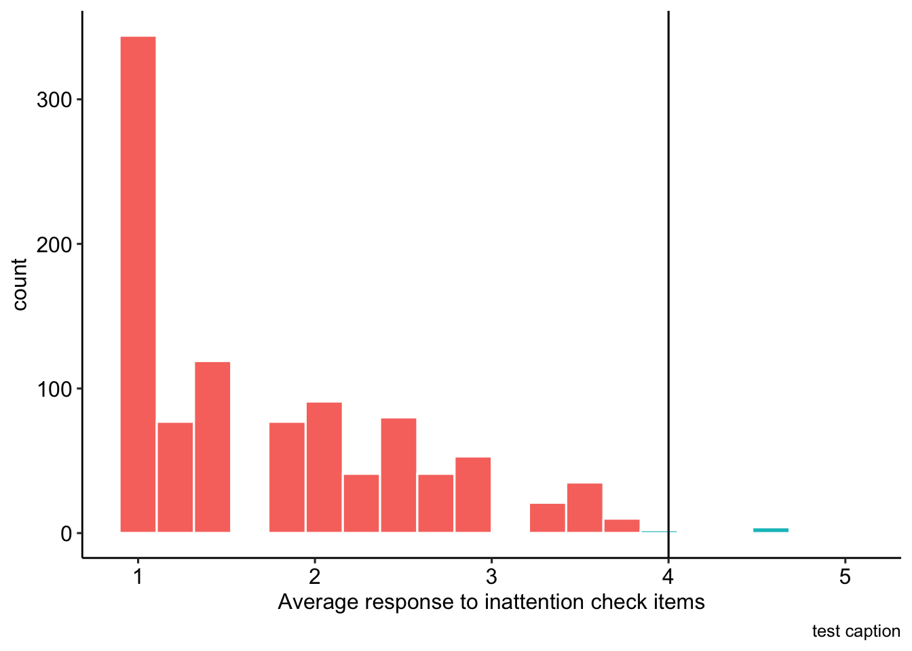
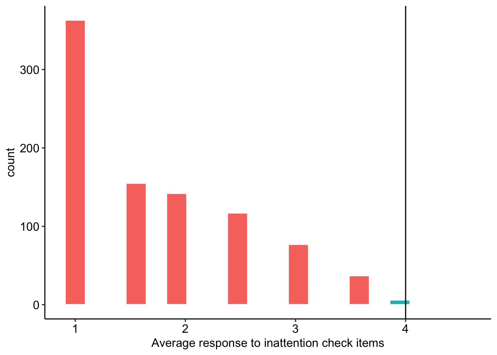

library(here) # for working with files
library(tidyverse) # for cleaning
library(janitor) # for variable names
library(stringi) # for generating random strings
library(glmmTMB) # for multilevel modeling
library(broom) # for presenting results
library(sjPlot) # for figures
library(ggpubr) # for prettier plots
library(kableExtra) # for nicer tables
library(stringdist) # for scoring memory task
library(papaja) # for pretty numbers
library(psych) # for correlation tests
library(broom.mixed) # for tidying multilevel modelsSupplemental file
Description of file
Analyses – including data cleaning, descriptive statistics, and power estimates – for this project were documented using a series of RMarkdown (.Rmd) files. This document aggregates all files, in the order in which they are meant to be run, into a single RMarkdown file and compiles the output into a single PDF. Those interested in reproducing this document should do the following:
- Check that LaTex has been installed on their machine.
- Create an RStudio project to store the data and scripts included on this OSF page.
- Download the supplementary workspace (scripts and data) as they are organized on the OSF page – specifically this means including data in a folder called “deidentified data” and scripts in a folder called “scripts.” These folders should be saved in the RStudio project directory.
- Check that the file called
renv.lockis downloaded and located in the RStudio project folder. This contains a snapshot of the packages and their versions used in this project.
Reproducibility
In an effort to facilitate the reproducibility of our findings, we have used the renv package to document the packages and versions used in this study and to allow others to recreate our working environment. We recommend the following steps to set up your environment before attempting to run any of the code on your local machine:
Use R Version 4.2.3. There are several ways to change the version of R active. We found RSwitch to be the easiest method for toggling between versions of R (only available for Mac).
Install the
renvpackage and then run the functionrenv::restore. This will read the containedrenv.lockfile to identify which packages (and versions) are necessary for this project, download the required package version from CRAN and install it on your machine.
These two steps should ensure that our code reproduces results identical those reported in our manuscript in supplemental files.
Cleaning
The current section documents the data cleaning process.
Workspace
Change participant ID values
Before we begin, we create new versions of each data_t1 file that can be shared for purposes of reproducibility. These data_t1 files do not include variables that contain potentially identifying meta-data_t1 (e.g., IP address, latitude and longitude). Importantly, we also replace all Prolific ID values with new, random strings, to prevent the possibility that these participants are later identified. We also fix an error that can be introduced through Qualtrics, specifically that all or parts of the text string “Value will be set from panel or URL” is sometimes entered into the text box for ID. Prolific ID values are always 24 characters long and start with a number – we search for strings that meet this criteria.
(We note that the code chunks in this subsection are turned off in the RMarkdown file – eval = F – as readers will not be able to run these chunks.)
# function to load raw file, clean the names, and remove meta-data_t1
# creating a function ensures the same procedure is applied to all
# orginal datasets
load_data = function(path){
full_path = here(path)
data_obj = read_rds(path)
data_obj = clean_names(data_obj)
data_obj = data_obj %>%
select(-end_date,
-ip_address,
-progress,
-finished,
-recorded_date,
-status,
-response_id,
-external_reference,
-distribution_channel,
-user_language,
-starts_with("recipient"),
-starts_with("location"),
-starts_with("meta_info"),
-prolific_pid)
data_obj = data_obj %>%
mutate(proid = str_extract(proid, "\\d([[:alnum:]]{23})"))
return(data_obj)
}
data_t1 <- load_data("data/data_t1.rds")
data_2A <- load_data("data/data_2A.rds")
data_2B <- load_data("data/data_2B.rds")
data_2C <- load_data("data/data_2C.rds")
data_2D <- load_data("data/data_2D.rds")Manually update entries
Several participants notified us of mistaken answers after completing the survey. We fix those entries here.
data_t1$sex[data_t1$proid == "63b7d7a4ab0b515649d4f4de"] = "Female"
data_t1$devicetype[data_t1$proid == "60da4f9aa1ced7efeecca18a"] = "Tablet (for example, iPad, Galaxy Tablet, Amazon Fire, etc.)"
data_t1$inaccurate_responses[data_t1$proid == "60da4f9aa1ced7efeecca18a"] = "No"Deidentify data – only run after data collection is complete
We identify all unique participant IDs. For each, we generate a new string, Then we replace the original ID values with the new strings.
original_id <- unique(c(data_t1$proid,
data_2A$proid,
data_2B$proid,
data_2C$proid,
data_2D$proid))
#remove missing values -- represent bots or tests
original_id = original_id[!is.na(original_id)]
#generate new ids (randoms tring of letters and numbers)
set.seed(202108)
new_id <- stri_rand_strings(n = length(original_id), length = 24)
#replace old string with new string
for(i in 1:length(original_id)){
data_t1$proid[data_t1$proid == original_id[i]] <- new_id[i]
data_2A$proid[data_2A$proid == original_id[i]] <- new_id[i]
data_2B$proid[data_2B$proid == original_id[i]] <- new_id[i]
data_2C$proid[data_2C$proid == original_id[i]] <- new_id[i]
data_2D$proid[data_2D$proid == original_id[i]] <- new_id[i]
}We end by saving each data_t1 frame as new .csv files, to be uploaded to OSF and shared for reproduction.
write_csv(data_t1, file = here("deidentified data/data_time1.csv"))
write_csv(data_2A, file = here("deidentified data/data_time2_A.csv"))
write_csv(data_2B, file = here("deidentified data/data_time2_B.csv"))
write_csv(data_2C, file = here("deidentified data/data_time2_C.csv"))
write_csv(data_2D, file = here("deidentified data/data_time2_D.csv"))data_t1 <- read_csv(here("deidentified data/data_time1.csv"))
data_2A <- read_csv(here("deidentified data/data_time2_A.csv"))
data_2B <- read_csv(here("deidentified data/data_time2_B.csv"))
data_2C <- read_csv(here("deidentified data/data_time2_C.csv"))
data_2D <- read_csv(here("deidentified data/data_time2_D.csv"))Time 1
We rename several columns, in order to facilitate the use of regular expressions later. Specifically, we remove the underscores (_) in the columns pertaining to broad-mindedness and self-disciplined.
names(data_t1) = str_replace(names(data_t1), "broad_mind", "broadmind")
names(data_t1) = str_replace(names(data_t1), "self_disciplind", "selfdisciplined")We can also remove the meta-data (timing, etc) around two attention check adjectives, “human” and “asleep”.
data_t1 = data_t1 %>%
select(-starts_with("t_human"),
-starts_with("t_asleep"))Recode personality item responses to numeric
We recode the responses to personality items, which we downloaded as text strings. We chose to use text strings as opposed to numbers to avoid any possibility that the Qualtrics-set coding was incorrect. We start this process by identifying the personality items (p_items) using regular expressions. All personality items take a format like outgoing_a or helpful_b_2; that is, they start with the adjective, followed by a letter indicating with which condition or item format the adjective was presented, and sometimes they are followed by a 2, indicating it was the second time the participant saw the adjective. We can represent this pattern using regular expressions.
p_items = str_extract(names(data_t1), "^[[:alpha:]]*_[abcd](_2)?$")
p_items = p_items[!is.na(p_items)]
personality_items = select(data_t1, proid, all_of(p_items))Next, we write a simple function to recode values. We find the case_when function to be the most clear method of communicating the recoding process when moving from string to numeric.
recode_p = function(x){
y = case_when(
x == "Very inaccurate" ~ 1,
x == "Moderately inaccurate" ~ 2,
x == "Slightly inaccurate" ~ 3,
x == "Slightly accurate" ~ 4,
x == "Moderately accurate" ~ 5,
x == "Very accurate" ~ 6,
TRUE ~ NA_real_)
return(y)
}Finally, we apply this function to all personality items.
personality_items = personality_items %>%
# apply to all variables except proid
mutate(across(!c(proid), recode_p))Now we merge the recoded values back into the data_t1.
# remove personality items from data file
data_t1 = select(data_t1, -all_of(p_items))
# merge in recoded personality items
data_t1 = full_join(data_t1, personality_items)Drop bots and inattentive participants
Based on ID
Recall that when preparing the data files for sharing, we replaced all Prolific IDs with random strings. A consequence of this cleaning is that any ID entered that did not have a string meeting the Prolific ID format requirements (24 character, starting with a number) was replaced with NA. To remove these bots, we can simply filter out missing ID values.
We removed 0 participants without valid Prolific IDs. (This likely occurred based on sharing of the survey link among Prolific users.)
Based on language
data_t1 = data_t1 %>%
filter(english %in% c("Well", "Very well (fluent/native)"))We removed 1 participants that do not speak english well or very well.
Based on inattentive responding
We expect to exclude any participant who has an average response of 4 (“slightly agree”) or greater to the attention check items. Two items from the Inattentive and Deviant Responding Inventory for Adjectives (IDRIA) scale (Kay & Saucier, in prep) have been included here, in part to help evaluate the extent of inattentive responding but also to consider the effect of item wording on these items. The two items used here (i.e., “Asleep”, “Human”) were chosen to be as inconspicuous as possible, so as to not to inflate item response duration. The frequency item (i.e., “human”) will be reverse-scored, so that higher scores on both the infrequency and frequency items reflect greater inattentive responding. Figure @ref(fig:1-cleaning-27) shows the distribution of average responses to attention check items.
in_average = data_t1 %>%
# reverse score human
mutate(across(matches("^human"), ~(.x*-1)+7)) %>%
# select id and attention check items
select(proid, matches("^human"), matches("^asleep")) %>%
gather(item, response, -proid) %>%
filter(!is.na(response)) %>%
group_by(proid) %>%
summarise(avg = mean(response)) %>%
mutate(
remove = case_when(
avg >= 4 ~ "Remove",
TRUE ~ "Keep"))
We remove 8 participants whose responses suggest inattention.
data_t1 = data_t1 %>%
full_join(select(in_average, proid, remove)) %>%
filter(remove != "Remove") %>%
select(-remove)Based on patterns
We remove any participant who provides the same response to over half of the items (21 or more items) from a given block in a row.
To proceed, first we create a data frame containing just the responses to personality items in the first block.
# first, identify unique adjectives, in order
adjectives = p_items %>%
str_remove_all("_.") %>%
unique()
# extract block 1 questions using regular expressions
# these follow the personality item format described above, but never end with 2
block1 = data_t1 %>%
select(proid, matches("^[[:alpha:]]+_[abcd]$")) Next, we rename the variables. Instead of variable names identifying the specific adjective (e.g., outgoing_a), we need variable names which indicate the order in which the adjective was seen by the participant (e.g., trait01_a). This will help us determine patterns by item order, rather than adjective content. Participants all saw adjectives in the same order (i.e., all participants, regardless of condition, saw outgoing first).
#rename variables
n = 0
for(i in adjectives){ # for each adjective
n = n+1 # identify its location in the presentation
names(block1) = str_replace(names(block1), #in variable names
# replace the adjective string
i,
# with the word trait followed by its place
paste0("trait", str_pad(n, 2, pad = "0")))
}We use gather and spread to quickly combine columns measuring the same trait. That is, instead of having columns trait01_a, trait01_b, trait01_c, and trait01_d, we now have a single column called trait01.
block1 = block1 %>%
gather(item, response, -proid) %>%
filter(!is.na(response)) %>%
separate(item, into = c("item", "format")) %>%
select(-format) %>%
spread(item, response)To count the number of runs, we loop through participants and, within participant, loop through columns. Within participant, we create an object called run. If a response to a personality item is the same as the participant’s response to the previous item, we increase the value of run by 1. If this new value is the largest run value for that participant, it becomes the value of an object called maxrun. If the participant gives a new response, run is reset to 0. We record the maxrun value for each partipant in a variable called block1_runs.
block1_runs = numeric(length = nrow(block1))
for(i in 1:nrow(block1)){
run = 0
maxrun = 0
for(j in 3:ncol(block1)){
if(block1[i,j] == block1[i, j-1]){
run = run+1
if(run > maxrun) maxrun = run
} else{ run = 0}
}
block1_runs[i] = maxrun
}
#add to data_t1 frame
block1$block1_runs = block1_runsHere we repeat the process described above with Block 2 data.
# extract block 2 questions
block2 = data_t1 %>%
select(proid, matches("^[[:alpha:]]+_[abcd]_2$"))
#rename variables
n = 0
for(i in adjectives){
n = n+1
names(block2) = str_replace(names(block2), i, paste0("trait", str_pad(n, 2, pad = "0")))
}
block2 = block2 %>%
gather(item, response, -proid) %>%
filter(!is.na(response)) %>%
mutate(item = str_remove(item, "_2")) %>%
separate(item, into = c("item", "format")) %>%
select(-format) %>%
spread(item, response)
block2_runs = numeric(length = nrow(block2))
#identify max run for each participant
for(i in 1:nrow(block2)){
run = 0
maxrun = 0
for(j in 3:ncol(block2)){
if(block2[i,j] == block2[i, j-1]){
run = run+1
if(run > maxrun) maxrun = run
} else{ run = 0}
}
block2_runs[i] = maxrun
}
#add to data_t1 frame
block2$block2_runs = block2_runsWe combine the variables holding the maximum runs into a single data frame. We will remove participants if their maximum run in either block was greater than or equal to 21. See Figure @ref(fig:1-cleaning-24) for a visualization of the spread and associations between run lengths across participants.
#combine results
runs_data = block1 %>%
select(proid, block1_runs) %>%
full_join(select(block2, proid, block2_runs)) %>%
mutate(
remove = case_when(
block1_runs >= 21 ~ "Remove",
block2_runs >= 21 ~ "Remove",
TRUE ~ "Keep"
))There were 5 participants who provided the same answer 21 or more times in a row. These participants were removed from the analyses.
data_t1 = data_t1 %>%
full_join(select(runs_data, proid, remove)) %>%
filter(remove != "Remove") %>%
select(-remove)
rm(runs_data)Based on average time to respond to personality items
First, select just the timing of the personality items. We do this by searching for specific strings: “t_[someword][a or b or c or d](maybe 2_)_page_submit.”
timing_data = data_t1 %>%
select(proid, matches("t_[[:alpha:]]*_[abcd](_2)?_page_submit"))Next we gather into long form and remove missing timing values
timing_data = timing_data %>%
gather(variable, timing, -proid) %>%
filter(!is.na(timing))To check, each participant should have the same number of responses: 76.
timing_data %>%
group_by(proid) %>%
count() %>%
ungroup() %>%
summarise(min(n), max(n))# A tibble: 1 × 2
`min(n)` `max(n)`
<int> <int>
1 76 76Excellent! Now we calculate the average response time per item for each participant. We mark a participant for removal if their average time is less than 1 second or greater than 30. See Figure @ref(fig:1-cleaning-33) for a distribution of average response time.
timing_data = timing_data %>%
group_by(proid) %>%
summarise(m_time = mean(timing)) %>%
mutate(remove = case_when(
m_time < 1 ~ "Remove",
m_time > 30 ~ "Remove",
TRUE ~ "Keep"
))data_t1 = inner_join(data_t1, filter(timing_data, remove == "Keep")) %>%
select(-remove)Based on timing, we removed 9 participants.
We create a variable which indicates the Block 1 condition of each participant. This is used in two places: first, in recruiting participants at Time 2 (participants are given the same format at Time 2 as they received in Block 1), and second, in selecting the corret items during the test-retest analyses.
data_t1 = data_t1 %>%
mutate(condition = case_when(
!is.na(outgoing_a) ~ "A",
!is.na(outgoing_b) ~ "B",
!is.na(outgoing_c) ~ "C",
!is.na(outgoing_d) ~ "D",
))At this point, we’ll extract the Prolific ID numbers. These participants will be eligible to take the survey at Time 2.
data_t1 %>%
select(proid, condition) %>%
write_csv(file = here("data/elligible_proid.csv"))Time 2
data_2 = data_2A %>%
full_join(data_2B) %>%
full_join(data_2C) %>%
full_join(data_2D)Rename the following columns.
data_2 = data_2 %>%
rename(start_date2 = start_date,
duration_in_seconds2 = duration_in_seconds)We rename several columns, in order to facilitate the use of regular expressions later. Specifically, we remove the underscores (_) in the columns pertaining to broad-mindedness and self-disciplined.
names(data_2) = str_replace(names(data_2), "broad_mind", "broadmind")
names(data_2) = str_replace(names(data_2), "self_disciplind", "selfdisciplined")We can also remove the meta-data (timing, etc) around two attention check adjectives, “human” and “asleep”.
data_2 = data_2 %>%
select(-starts_with("t_human"),
-starts_with("t_asleep"))Recode personality item responses to numeric
We recode the responses to personality items, which we downloaded as text strings. Here, all items end with _3 and sometimes with i.
p_items_2 = str_extract(names(data_2), "^[[:alpha:]]*_[abcd]_3(i)?$")
p_items_2 = p_items_2[!is.na(p_items_2)]
personality_items_2 = select(data_2, proid, all_of(p_items_2))We apply the recoding function to all personality items.
personality_items_2 = personality_items_2 %>%
mutate(
across(!c(proid), recode_p))Now we merge this back into the data_2.
data_2 = select(data_2, -all_of(p_items_2))
data_2 = full_join(data_2, personality_items_2)Drop bots and inattentive participants
This code recreates the steps outlined in detail above for Time 1. Please refer to the descriptions above for justification and explaination of the code presented here.
Based on ID
We also check that the ID in time 2 matches an ID in time 1.
data_2 = data_2 %>%
filter(proid %in% data_t1$proid)We removed 2 participants without valid Prolific IDs.
Based on inattentive responding
Participants who respond positively to the adjective asleep or negatively to the word human are assumed to be inattentive. We filter out participants whose average response to these two items is greater than or equal to 4 (see Figure @ref(fig:1-cleaning-59) for the distribution).
in_average = data_2 %>%
# reverse score human
mutate(across(matches("^human"), ~(.x*-1)+7)) %>%
# select id and attention check items
select(proid, matches("^human"), matches("^asleep")) %>%
gather(item, response, -proid) %>%
filter(!is.na(response)) %>%
group_by(proid) %>%
summarise(avg = mean(response)) %>%
mutate(
remove = case_when(
avg >= 4 ~ "Remove",
TRUE ~ "Keep"))
We remove 7 participants whose responses suggest inattention.
data_2 = data_2 %>%
full_join(select(in_average, proid, remove)) %>%
filter(remove != "Remove") %>%
select(-remove)Based on patterns
We remove any participant who provides the same response to over half of the items (21 or more items) from a given block in a row. The distribution of runs in Time 2 is depicted in Figure @ref(fig:1-cleaning-55).
# first, identify unique adjectives, in order
adjectives = p_items_2 %>%
str_remove_all("_.") %>%
unique()
# extract block 3 questions
block3 = data_2 %>%
select(proid, all_of(p_items_2))
#rename variables
n = 0
for(i in adjectives){
n = n+1
names(block3) = str_replace(names(block3), i, paste0("trait", str_pad(n, 2, pad = "0")))
}
block3 = block3 %>%
gather(item, response, -proid) %>%
filter(!is.na(response)) %>%
mutate(item = str_remove(item, "_3(i)?$")) %>%
separate(item, into = c("item", "format")) %>%
select(-format) %>%
spread(item, response)
block3_runs = numeric(length = nrow(block3))
for(i in 1:nrow(block3)){
run = 0
maxrun = 0
for(j in 3:ncol(block3)){
if(block3[i,j] == block3[i, j-1]){
run = run+1
if(run > maxrun) maxrun = run
} else{ run = 0}
}
block3_runs[i] = maxrun
}
#add to data_2 frame
block3$block3_runs = block3_runs#combine results
runs_data_2 = block3 %>%
select(proid, block3_runs) %>%
mutate(
remove = case_when(
block3_runs >= 21 ~ "Remove",
TRUE ~ "Keep"
))There were 0 participants who provided the same answer 21 or more times in a row. These participants were removed from the analyses.
data_2 = data_2 %>%
full_join(select(runs_data_2, proid, remove)) %>%
filter(remove != "Remove") %>%
select(-remove)
rm(runs_data_2)Based on average time to respond to personality items
Participants who take too little (< 1 second) or too long (greater than 30 seconds) on average to answer each personality item are excluded. See Figure @ref(fig:1-cleaning-64) for the distribution of average response time per item.
timing_data_2 = data_2 %>%
select(proid, matches("t_[[:alpha:]]*_[abcd]_3(i)?_page_submit"))
timing_data_2 = timing_data_2 %>%
gather(variable, timing, -proid) %>%
filter(!is.na(timing))To check, each participant should have the same number of responses: 33.
timing_data_2 %>%
group_by(proid) %>%
count() %>%
ungroup() %>%
summarise(min(n), max(n))# A tibble: 1 × 2
`min(n)` `max(n)`
<int> <int>
1 37 38timing_data_2 = timing_data_2 %>%
group_by(proid) %>%
summarise(m_time = mean(timing)) %>%
mutate(remove = case_when(
m_time < 1 ~ "Remove",
m_time > 30 ~ "Remove",
TRUE ~ "Keep"
))data_2 = inner_join(data_2, filter(timing_data_2, remove == "Keep")) %>%
select(-remove)Based on timing, we removed 8 participants.
Merge all datasets together
We merge the Time 1 and Time 2 datasets together here.
data_2 = data_2 %>%
select(proid, start_date2, duration_in_seconds2, very_delayed_recall, contains("_3")) %>%
mutate(time2 = "yes") #indicates participant in time 2
data = data_t1 %>% full_join(data_2)All data
Reverse score personality items
The following items are (typically) negatively correlated with the others: reckless, moody, worrying, nervous, careless, impulsive. We reverse-score them to ease interpretation of associations and means in the later sections. In short, all traits will be scored such that larger numbers are indicative of the more socially desirable end of the spectrum.
data = data %>%
mutate(
across(matches("^reckless"), ~(.x*-1)+7),
across(matches("^moody"), ~(.x*-1)+7),
across(matches("^worrying"), ~(.x*-1)+7),
across(matches("^nervous"), ~(.x*-1)+7),
across(matches("^careless"), ~(.x*-1)+7),
across(matches("^impulsive"), ~(.x*-1)+7),
across(matches("^quiet"), ~(.x*-1)+7),
across(matches("^unsympathetic"), ~(.x*-1)+7),
across(matches("^uncreative"), ~(.x*-1)+7),
across(matches("^shy"), ~(.x*-1)+7),
across(matches("^cold"), ~(.x*-1)+7),
across(matches("^unintellectual"), ~(.x*-1)+7))We also create a vector noting the items that are reverse scored. We use this later in tables, to help identify patterns when looking at analyses within-adjective. We use this object elsewhere in the analyses.
reverse = c("reckless", "moody", "worrying", "nervous", "careless", "impulsive")Score memory task
Now we score the memory task. We start by creating vectors of the correct responses.
correct1 = c("book", "child", "gold", "hotel", "king",
"market", "paper", "river", "skin", "tree")
correct2 = c("butter", "college", "dollar", "earth", "flag",
"home", "machine", "ocean", "sky", "wife")
correct3 = c("blood", "corner", "engine", "girl", "house",
"letter", "rock", "shoes", "valley", "woman")
correct4 = c("baby", "church", "doctor", "fire", "garden",
"palace", "sea", "table", "village", "water")Next we convert all responses to lowercase. Then we break the string of responses into a vector containing many strings.
data = data %>%
mutate(
across(matches("recall"),tolower), # convert to lower
#replace carriage return with space
across(matches("recall"),
\(x) str_replace_all(x, pattern = "\\n", replacement = ",")),
# remove spaces
across(matches("recall"),
\(x) str_replace_all(x, pattern = " ", replacement = ",")),
# remove doubles
across(matches("recall"),
\(x) str_replace_all(x, pattern = ",,", replacement = ",")),
#remove last comma
across(matches("recall"),
\(x) str_remove(x, pattern = ",$")),
# split the strings based on the spaces
across(matches("recall"),
\(x) str_split(x, pattern = ",")))Immediate recall
Now we use the amatch function in the stringdist package to look for exact (or close) matches to the target words. This function returns for each word either the position of the key in which you can find the target word or NA to indicate the word or a close match does not exist in the string.
distance = 1 #maximum distance between target word and correct response
data = data %>%
mutate(
memory1 = map(recall1, ~sapply(., amatch, correct1, maxDist = distance)),
memory2 = map(recall2, ~sapply(., amatch, correct2, maxDist = distance)),
memory3 = map(recall3, ~sapply(., amatch, correct3, maxDist = distance)),
memory4 = map(recall4, ~sapply(., amatch, correct4, maxDist = distance))
)We count the number of correct answers. This gets complicated; in lieu of writing out a paragraph explanation, we have opted for in-text comments to orient those interested in following the code.
data = data %>%
mutate(
across(starts_with("memory"),
#replace position with 1
~map(., sapply, FUN = function(x) ifelse(x >0, 1, 0))),
across(starts_with("recall"),
# are there non-missing values in the original response?
~map_dbl(.,
.f = function(x) sum(!is.na(x))),
.names = "{.col}_miss"),
across(starts_with("memory"),
#replace position with 1
# count the number of correct answers
~map_dbl(., sum, na.rm=T))) %>%
mutate(
memory1 = case_when(
# if there were no responses, make the answer NA
recall1_miss == 0 ~ NA_real_,
# otherwise, the number of correct guesses
TRUE ~ memory1),
memory2 = case_when(
recall2_miss == 0 ~ NA_real_,
TRUE ~ memory2),
memory3 = case_when(
recall3_miss == 0 ~ NA_real_,
TRUE ~ memory3),
memory4 = case_when(
recall4_miss == 0 ~ NA_real_,
TRUE ~ memory4)) %>%
# no longer need the missing count variables
select(-ends_with("miss"))Finally, we want to go from 4 columns (one for each recall test), to two: one that has the number of correct responses, and one that indicates which version they saw.
data = data %>%
select(proid, starts_with("memory")) %>%
gather(mem_condition, memory, -proid) %>%
filter(!is.na(memory)) %>%
mutate(mem_condition = str_remove(mem_condition, "memory")) %>%
full_join(data)To demonstrate the accuracy of the code, here we present a random subset of participants’ raw responses and their assigned memory score.
#from memory condition 1
data %>%
filter(mem_condition == 1) %>%
select(recall1, memory) %>%
sample_n(3) %>%
mutate(recall1 = map_chr(recall1, paste, collapse = ", "))# A tibble: 3 × 2
recall1 memory
<chr> <dbl>
1 book, child, gold, river, market, skin, paper 7
2 king, book, skin, tree, gold, river, market 7
3 book, child, gold, hotel, king 5#from memory condition 2
data %>%
filter(mem_condition == 2) %>%
select(recall2, memory) %>%
sample_n(3) %>%
mutate(recall2 = map_chr(recall2, paste, collapse = ", "))# A tibble: 3 × 2
recall2 memory
<chr> <dbl>
1 butter, college, dollar, home, earth, sky, wife 7
2 dollar, college, butter, home, machine 5
3 butter, college, earth, flag, wife, ocean, sky, home 8#from memory condition 3
data %>%
filter(mem_condition == 3) %>%
select(recall3, memory) %>%
sample_n(3) %>%
mutate(recall3 = map_chr(recall3, paste, collapse = ", "))# A tibble: 3 × 2
recall3 memory
<chr> <dbl>
1 blood, corner, edge, girl, valley 4
2 letter, woman, engine, rock, girl, corner 6
3 girl, house, corner, blood, engine, woman, rock, valley 8#from memory condition 4
data %>%
filter(mem_condition == 4) %>%
select(recall4, memory) %>%
sample_n(3) %>%
mutate(recall4 = map_chr(recall4, paste, collapse = ", "))# A tibble: 3 × 2
recall4 memory
<chr> <dbl>
1 baby, church, fire, garden, sea, table, water, palace 8
2 baby, doctor, fire, sea, village, water 6
3 baby, church, fire, water, palace 5Participants remember on average 6.76 words correctly \((SD = 1.96)\).
| Condition | Mean | SD | Min | Max | N |
|---|---|---|---|---|---|
| 1 | 6.84 | 2.05 | 0 | 10 | 245 |
| 2 | 6.42 | 1.87 | 1 | 10 | 241 |
| 3 | 6.78 | 2.03 | 0 | 10 | 245 |
| 4 | 7.00 | 1.85 | 2 | 10 | 244 |
Delayed recall
A challenge with the delayed recall task is identifying the memory condition that participants were assigned to, but this is made easier by the work done above. The following code mainly reproduces the steps used for scoring the immediate memory recall task. The main difference is that we have a single column containing all responses (delayed_recall), regardless of which memory condition participants were assigned to. We score this response against all four answer keys, then select the maximum (best) score.
mem2 = data %>%
select(proid, mem_condition, delayed_recall) %>%
mutate(newid = 1:nrow(.))
mem2 = mem2 %>%
mutate(
delayed_recall1 = map(delayed_recall, ~sapply(., amatch, correct1, maxDist = distance)),
delayed_recall2 = map(delayed_recall, ~sapply(., amatch, correct2, maxDist = distance)),
delayed_recall3 = map(delayed_recall, ~sapply(., amatch, correct3, maxDist = distance)),
delayed_recall4 = map(delayed_recall, ~sapply(., amatch, correct4, maxDist = distance))
) %>%
gather(variable, delayed_memory, delayed_recall1:delayed_recall4)
mem2 = mem2 %>%
mutate(
delayed_memory = map(delayed_memory, sapply,
FUN = function(x) ifelse(x >0, 1, 0)),
# count the number of correct answers
delayed_memory = map_dbl(delayed_memory, sum, na.rm=T))
mem2 = mem2 %>%
group_by(proid) %>%
filter(delayed_memory == max(delayed_memory)) %>%
filter(row_number() == 1 ) %>%
select(-delayed_recall, -variable, -newid)
data = inner_join(data, mem2)Participants remember on average 5.78 words correctly after 5-10 minutes \((SD = 2.29)\).
Very-delayed recall
Finally, we score the memory challenge posed at Time 2. Like scoring the delayed recall task, we have a single column containing responses fromo all participants, regardless of the original memory condition.
mem3 = data %>%
filter(time2 == "yes") %>%
select(proid, mem_condition, very_delayed_recall) %>%
mutate(newid = 1:nrow(.))
mem3 = mem3 %>%
mutate(
very_delayed_recall1 = map(very_delayed_recall, ~sapply(., amatch, correct1, maxDist = distance)),
very_delayed_recall2 = map(very_delayed_recall, ~sapply(., amatch, correct2, maxDist = distance)),
very_delayed_recall3 = map(very_delayed_recall, ~sapply(., amatch, correct3, maxDist = distance)),
very_delayed_recall4 = map(very_delayed_recall, ~sapply(., amatch, correct4, maxDist = distance))
) %>%
gather(variable, very_delayed_memory, very_delayed_recall1:very_delayed_recall4)
mem3 = mem3 %>%
mutate(
very_delayed_memory = map(very_delayed_memory, sapply,
FUN = function(x) ifelse(x >0, 1, 0)),
# count the number of correct answers
very_delayed_memory = map_dbl(very_delayed_memory, sum, na.rm=T))
mem3 = mem3 %>%
group_by(proid) %>%
filter(very_delayed_memory == max(very_delayed_memory)) %>%
filter(row_number() == 1 ) %>%
select(-very_delayed_recall, -variable, -newid)
data = full_join(data, mem3)Participants remember on average 1.62 words correctly \((SD = 1.75)\).
Correlations
Figure @ref(fig:memory-dist) displays the univariate and bivariate distributions of the memory scores and the bivariate correlations. In general, there was good spread in the immediate recall and delayed (10 minute) recall variables. Few participants remembered any of the words after two weeks.
data %>%
select(matches("memory$")) %>%
corr.testCall:corr.test(x = .)
Correlation matrix
memory delayed_memory very_delayed_memory
memory 1.00 0.81 0.38
delayed_memory 0.81 1.00 0.46
very_delayed_memory 0.38 0.46 1.00
Sample Size
memory delayed_memory very_delayed_memory
memory 975 975 883
delayed_memory 975 975 883
very_delayed_memory 883 883 883
Probability values (Entries above the diagonal are adjusted for multiple tests.)
memory delayed_memory very_delayed_memory
memory 0 0 0
delayed_memory 0 0 0
very_delayed_memory 0 0 0
To see confidence intervals of the correlations, print with the short=FALSE optionChange labels of device variable
Longer labels were provided to participants for clarity. However, we will use shorter labels in our analyses and figures.
data = data %>%
mutate(devicetype = factor(
devicetype,
levels = c("Desktop or laptop computer", "Mobile",
"Tablet (for example, iPad, Galaxy Tablet, Amazon Fire, etc.)"),
labels = c("Computer", "Mobile", "Tablet")
))Reorder demographic categories
We set the order of ordinal demographic variables, which helps generate more interpretable figures and tables.
data = data %>%
mutate(edu = factor(edu,
levels = c(
"Less than 12 years",
"High school graduate/GED",
"Currently in college/university",
"Some college/university, but did not graduate",
"Associate degree (2 year)",
"College/university degree (4 year)",
"Currently in graduate or professional school",
"Graduate or professional school degree"))) %>%
mutate(hhinc = str_remove(hhinc, " a year"),
hhinc = str_replace_all(hhinc, ",000", "K"),
hhinc = str_replace_all(hhinc, " to ", "-"),
hhinc = str_replace_all(hhinc, "less than", "<"),
hhinc = str_replace_all(hhinc, "more than", ">"))%>%
mutate(hhinc = factor(hhinc,
levels = c(
"< $20,000",
"$20K-$40K",
"$40K-$60K",
"$60K-$80K",
"$80K-$100K",
"$100K-$120K",
"$120K-$150K",
"$150K-$200K",
"$200K-$250K",
"$250K-$350K",
"$350K-$500K",
">$500K"
)))Long-form dataset
We need one dataset that contains the responses to and timing of the personality items in long form. This will be used for nearly all the statistical models, which will nest items within person. To create this, we first select the responses to the items of different formats. For this set of analyses, we use data collected in both Block 1 and Block 2 – that is, each participant saw the same format for every item during Block 1, but a random format for each item in Block 2.
These variable names have one of four formats: [trait]_[abcd] (for example, talkative_a), [trait]_[abcd]_2 (for example, talkative_a_2), [trait]_[abcd]_3 (e.g., talkative_a_3), or [trait]_[abcd]_3i (e.g., talkative_a_3i). We search for these items using regular expressions.
item_responses = str_subset(
names(data),
"^([[:alpha:]])+_[abcd](_2)?(_3)?(i)?$"
)Similarly, we’ll need to know how long it took participants to respond to these items. These variable names have one of four formats listed above followed by the string page_submit. We search for these items using regular expressions.
item_timing = str_subset(
names(data),
"t_([[:alpha:]])+_[abcd](_2)?(_3)?(i)?_page_submit$")We extract just the participant IDs, delayed memory, and these variables.
items_df = data %>%
select(proid, condition, time2,
memory, delayed_memory, very_delayed_memory,
devicetype,
all_of(item_responses), all_of(item_timing))Next we reshape these data into long form. This requires several steps. We’ll need to identify whether each value is a response or timing; we can use the presence of the string t_ for this. Next, we’ll identify the block based on whether the string contains _2 or _3. We also identify whether it ends with i, indicating the item in block 3 started with “I”. Then, we identify the condition based on which letter (a, b, c, or d) follows an underscore. Throughout, we’ll strip the item string of extraneous information until we’re left with only the adjective assessed. Finally, we’ll use spread to create separate columns for the response and the timing variables.
items_df = items_df %>%
gather(item, value, all_of(item_responses), all_of(item_timing)) %>%
filter(!is.na(value)) %>%
# identify whether timing or response
mutate(variable = ifelse(str_detect(item, "^t_"), "timing", "response"),
item = str_remove(item, "^t_"),
item = str_remove(item, "_page_submit$")) %>%
#identify block
mutate(
block = case_when(
str_detect(item, "_2") ~ "2",
str_detect(item, "_3") ~ "3",
TRUE ~ "1"),
item = str_remove(item, "_[23]")) %>%
# identify presence of "I"
mutate(i = case_when(
str_detect(item, "i$") ~ "Present",
TRUE ~ "Absent"),
item = str_remove(item, "i$")) %>%
separate(item, into = c("item", "format")) %>%
spread(variable, value)Remove ‘human’ and ‘asleep’
We also remove responses to the adjectives “human” and “asleep”, as these are not personality items per-se and included for the purpose of attention checks.
items_df = items_df %>%
filter(item != "human") %>%
filter(item != "asleep")Label formatting conditions
We give labels to the formats, to clarify interpretations and aid table and figure construction.
items_df$format = as.factor(items_df$format)
items_df$format = relevel(items_df$format, ref = "a")
items_df$format = factor(items_df$format,
levels = c("a","b","c","d"),
labels = c("Adjective\nOnly", "Am\nAdjective", "Tend to be\nAdjective", "Am someone\nwho tends to be\nAdjective"))Identify Big Five mini markers
Big Five Mini Markers (BF-MM) are used only for the yea-saying analyses. We identify these adjectives here so that we can appropriately filter them in or out at each stage of analysis.
bfmm = c("quiet", "unsympathetic", "relaxed", "uncreative",
"shy", "cold", "unintellectual")Transform seconds
The variable seconds appears to have a very severe right skew (see Figure @ref(fig:1-cleaning-95)). We log-transform this variable for later analyses.
items_df = items_df %>%
mutate(seconds_log = log(timing))
range(items_df$timing, na.rm=T)[1] 0.000 751.823range(items_df$seconds_log, na.rm=T)[1] -Inf 6.622501Enjoyment
Finally, in the first wave of data collection, we poll participants about their enjoyment of the study and experience of taking the survey. We extract those columns, along with the condition assigned in Block 1, for later analyses.
enjoy_df = data_t1 %>%
select(proid, condition, devicetype, enjoy_responding, well_designed_study) %>%
# convert responses to numeric
mutate(
format = tolower(condition),
format = factor(format,
levels = c("a","b","c","d"),
labels = c("Adjective\nOnly",
"Am\nAdjective",
"Tend to be\nAdjective",
"Am someone\nwho tends to be\nAdjective")),
across(
c(enjoy_responding, well_designed_study),
~case_when(
. == "Very inaccurate" ~ 1,
. == "Moderately inaccurate" ~ 2,
. == "Slightly inaccurate" ~ 3,
. == "Slightly accurate" ~ 4,
. == "Moderately accurate" ~ 5,
. == "Very accurate" ~ 6,
TRUE ~ NA_real_
)
)
) %>%
filter(proid %in% items_df$proid)Save files
# check if folder exists. if not create it
if (!file.exists(here("objects/"))){
dir.create(here("objects/"))
}
save(reverse, file = here("objects/reverse_vector.Rds"))
save(bfmm, file = here("objects/bfmm.Rds"))
save(data, file = here("objects/cleaned_data.Rds"))
save(items_df, file = here("objects/items_df.Rds"))
save(enjoy_df, file = here("objects/enjoy_df.Rds"))Descriptives
Participants (N = 975; 48.92% female) were, on average, 37.14 years old (SD = 14.51, minimum = 18, maximum = 84; see Figure @ref(fig:descriptives-5)A for the full distribution). A majority (66.67%) of participants identified as White only, and 10.36% identify as Black only; Figure @ref(fig:descriptives-5)B shows the other response options and frequencies. See Figure @ref(fig:descriptives-5)C for the distribution of education, and @ref(fig:descriptives-5)D for the distribution of household income.
Time
How much time elapsed between assessments?
data = data %>%
mutate(difference = as.numeric(start_date2-start_date))
summary(data$difference) Min. 1st Qu. Median Mean 3rd Qu. Max. NA's
11.84 11.93 11.99 12.43 12.23 39.36 92 How long did it take participants to complete the Time 1 survey?
summary(data$duration_in_seconds/60) Min. 1st Qu. Median Mean 3rd Qu. Max.
4.833 8.633 10.683 12.500 14.092 54.383 How long did it take participants to complete the Time 2 survey?
summary(data$duration_in_seconds2/60) Min. 1st Qu. Median Mean 3rd Qu. Max. NA's
1.367 2.467 3.217 4.317 4.658 34.633 92 Personality by block and format
See Table @ref(tab:descriptives27) for the descriptive statistics of each format by block.
| Block | Format | M | SD | Median | N (responses) | N (participants) |
|---|---|---|---|---|---|---|
| 1 | Adjective Only | | 4.4 | | 1.3 | |5 | |9196 | |242 |
| 1 | Am Adjective | | 4.4 | | 1.3 | |5 | |9082 | |239 |
| 1 | Tend to be Adjective | | 4.2 | | 1.3 | |5 | |9424 | |248 |
| 1 | Am someone who tends to be Adjectiv | | 4. | 4| 1. | 1|5 | |9348 | |246 |
| 2 | Adjective Only | | 4.3 | | 1.3 | |5 | |9271 | |975 |
| 2 | Am Adjective | | 4.3 | | 1.4 | |5 | |9262 | |975 |
| 2 | Tend to be Adjective | | 4.3 | | 1.4 | |5 | |9252 | |975 |
| 2 | Am someone who tends to be Adjectiv | | 4. | 5| 1. | 4|5 | |9265 | |975 |
| 3 | Adjective Only | | 4.4 | | 1.3 | |5 | |8360 | |220 |
| 3 | Am Adjective | | 4.4 | | 1.3 | |5 | |8246 | |217 |
| 3 | Tend to be Adjective | | 4.2 | | 1.4 | |5 | |8398 | |221 |
| 3 | Am someone who tends to be Adjectiv | | 4. | 3| 1. | 9|5 | |8550 | |225 |
See Table @ref(tab:descriptives-28) for the descriptive statistics of each item and format in Block 1 (Time 1).
| item | Adjective Only | |Am Adjectiv | |Tend to be Adjecti | e |Am someone who tends to be Adjec |
|---|---|---|---|---|
| active | 4.21 (1.24) | 4.20 (1.23) | 4.00 (1.29) | 4.04 (1.30) |
| adventurous | 4.15 (1.40) | 4.01 (1.30) | 3.94 (1.33) | 4.09 (1.29) |
| broadminded | 4.73 (1.05) | 4.67 (1.10) | 4.69 (1.02) | 4.62 (1.11) |
| calm | 4.60 (1.18) | 4.49 (1.23) | 4.46 (1.13) | 4.44 (1.23) |
| careless | 4.62 (1.29) | 4.66 (1.26) | 4.46 (1.33) | 4.64 (1.22) |
| caring | 4.99 (0.96) | 5.08 (0.92) | 4.85 (1.01) | 4.94 (1.05) |
| cautious | 4.64 (1.02) | 4.62 (1.11) | 4.68 (1.03) | 4.67 (0.94) |
| cold | 4.60 (1.36) | 4.60 (1.28) | 4.28 (1.36) | 4.43 (1.33) |
| creative | 4.57 (1.26) | 4.68 (1.17) | 4.56 (1.30) | 4.65 (1.32) |
| curious | 5.00 (0.89) | 5.10 (0.79) | 4.98 (0.98) | 4.97 (1.00) |
| friendly | 4.95 (1.01) | 4.90 (1.03) | 4.75 (1.05) | 4.90 (1.03) |
| hardworking | 4.86 (1.08) | 4.95 (1.02) | 4.76 (1.18) | 4.76 (1.20) |
| helpful | 4.98 (0.94) | 4.98 (0.98) | 4.92 (0.94) | 4.95 (1.02) |
| imaginative | 4.71 (1.21) | 4.96 (1.04) | 4.77 (1.22) | 4.85 (1.21) |
| impulsive | 3.96 (1.36) | 3.92 (1.43) | 4.05 (1.34) | 3.98 (1.38) |
| intelligent | 5.14 (0.88) | 5.08 (0.84) | 5.04 (0.87) | 5.02 (0.94) |
| lively | 4.05 (1.26) | 3.98 (1.26) | 3.83 (1.33) | 3.88 (1.26) |
| moody | 3.81 (1.50) | 3.75 (1.43) | 3.59 (1.42) | 3.73 (1.48) |
| nervous | 3.53 (1.60) | 3.44 (1.60) | 3.19 (1.52) | 3.15 (1.60) |
| organized | 4.27 (1.35) | 4.26 (1.41) | 4.24 (1.40) | 4.37 (1.30) |
| outgoing | 3.36 (1.60) | 3.35 (1.59) | 3.18 (1.52) | 3.26 (1.52) |
| quiet | 2.61 (1.37) | 2.69 (1.48) | 2.64 (1.39) | 2.60 (1.38) |
| reckless | 4.88 (1.13) | 4.77 (1.29) | 4.64 (1.25) | 4.74 (1.25) |
| relaxed | 4.32 (1.15) | 4.24 (1.23) | 4.29 (1.13) | 4.10 (1.25) |
| responsible | 4.97 (1.02) | 4.97 (0.95) | 4.89 (1.09) | 4.84 (1.10) |
| selfdisciplined | 4.62 (1.22) | 4.59 (1.21) | 4.44 (1.28) | 4.51 (1.22) |
| shy | 3.24 (1.63) | 3.13 (1.59) | 3.10 (1.52) | 2.98 (1.50) |
| softhearted | 4.64 (1.24) | 4.76 (1.11) | 4.62 (1.15) | 4.70 (1.26) |
| sophisticated | 3.77 (1.34) | 3.85 (1.27) | 3.75 (1.25) | 3.77 (1.29) |
| sympathetic | 4.90 (1.05) | 4.93 (1.06) | 4.73 (1.05) | 4.89 (1.03) |
| talkative | 3.40 (1.54) | 3.51 (1.50) | 3.46 (1.53) | 3.41 (1.58) |
| thorough | 4.74 (1.03) | 4.79 (0.96) | 4.73 (0.93) | 4.73 (1.07) |
| thrifty | 4.43 (1.28) | 4.24 (1.27) | 4.41 (1.31) | 4.52 (1.17) |
| uncreative | 4.77 (1.35) | 4.91 (1.21) | 4.72 (1.37) | 4.89 (1.33) |
| unintellectual | 5.29 (0.95) | 5.26 (0.98) | 5.06 (1.07) | 5.17 (1.05) |
| unsympathetic | 4.92 (1.24) | 5.09 (1.08) | 4.77 (1.29) | 4.91 (1.23) |
| warm | 4.78 (1.06) | 4.72 (1.12) | 4.56 (1.10) | 4.67 (1.14) |
| worrying | 3.29 (1.57) | 3.18 (1.63) | 3.05 (1.51) | 3.02 (1.58) |
See Table @ref(tab:descriptives-30) for the descriptive statistics of each item and format in Block 2 (Time 1).
| item | Adjective Only | |Am Adjectiv | |Tend to be Adjecti | e |Am someone who tends to be Adjec |
|---|---|---|---|---|
| active | 4.14 (1.20) | 4.05 (1.41) | 4.07 (1.25) | 3.95 (1.43) |
| adventurous | 4.04 (1.30) | 4.03 (1.41) | 4.00 (1.31) | 4.00 (1.44) |
| broadminded | 4.53 (1.17) | 4.81 (1.14) | 4.81 (0.99) | 4.59 (1.17) |
| calm | 4.58 (1.02) | 4.49 (1.15) | 4.50 (1.23) | 4.35 (1.33) |
| careless | 4.55 (1.26) | 4.68 (1.32) | 4.62 (1.29) | 4.59 (1.34) |
| caring | 4.87 (1.04) | 4.99 (1.07) | 4.91 (1.04) | 4.91 (1.14) |
| cautious | 4.65 (0.96) | 4.60 (0.98) | 4.58 (1.06) | 4.70 (1.02) |
| cold | 4.62 (1.33) | 4.35 (1.44) | 4.60 (1.36) | 4.62 (1.40) |
| creative | 4.69 (1.25) | 4.67 (1.26) | 4.66 (1.23) | 4.74 (1.27) |
| curious | 4.96 (0.87) | 5.00 (0.90) | 5.03 (0.96) | 4.90 (1.02) |
| friendly | 4.74 (1.06) | 4.89 (1.02) | 4.90 (0.98) | 4.93 (1.05) |
| hardworking | 4.86 (1.14) | 4.87 (1.16) | 4.77 (1.18) | 4.80 (1.16) |
| helpful | 4.97 (0.95) | 5.08 (0.94) | 4.98 (0.97) | 4.95 (1.01) |
| imaginative | 4.82 (1.23) | 4.74 (1.14) | 4.80 (1.25) | 4.87 (1.17) |
| impulsive | 3.95 (1.46) | 4.15 (1.34) | 4.13 (1.36) | 4.25 (1.49) |
| intelligent | 5.02 (0.96) | 4.99 (0.86) | 5.06 (1.01) | 5.17 (0.98) |
| lively | 3.87 (1.31) | 3.98 (1.30) | 3.78 (1.35) | 3.85 (1.27) |
| moody | 3.70 (1.51) | 3.71 (1.50) | 3.76 (1.55) | 3.80 (1.51) |
| nervous | 3.39 (1.61) | 3.21 (1.60) | 3.36 (1.61) | 3.30 (1.55) |
| organized | 4.36 (1.30) | 4.40 (1.32) | 4.45 (1.31) | 4.34 (1.39) |
| outgoing | 3.47 (1.63) | 3.54 (1.61) | 3.31 (1.59) | 3.36 (1.65) |
| quiet | 2.65 (1.39) | 2.62 (1.43) | 2.73 (1.35) | 2.76 (1.46) |
| reckless | 4.79 (1.21) | 4.75 (1.36) | 4.56 (1.40) | 4.90 (1.23) |
| relaxed | 4.35 (1.17) | 4.35 (1.14) | 4.09 (1.29) | 4.17 (1.30) |
| responsible | 4.94 (1.03) | 4.89 (1.08) | 4.95 (0.97) | 4.72 (1.19) |
| selfdisciplined | 4.67 (1.19) | 4.63 (1.21) | 4.58 (1.22) | 4.49 (1.26) |
| shy | 3.07 (1.59) | 3.16 (1.59) | 3.12 (1.59) | 3.05 (1.61) |
| softhearted | 4.74 (1.16) | 4.74 (1.14) | 4.71 (1.22) | 4.74 (1.16) |
| sophisticated | 3.81 (1.32) | 3.89 (1.36) | 3.88 (1.40) | 3.76 (1.32) |
| sympathetic | 4.82 (1.02) | 4.84 (1.14) | 4.84 (1.13) | 4.91 (1.05) |
| talkative | 3.37 (1.60) | 3.56 (1.53) | 3.40 (1.48) | 3.39 (1.59) |
| thorough | 4.85 (1.03) | 4.73 (1.04) | 4.72 (1.05) | 4.73 (0.94) |
| thrifty | 4.47 (1.28) | 4.46 (1.32) | 4.41 (1.26) | 4.36 (1.31) |
| uncreative | 4.84 (1.25) | 4.80 (1.34) | 4.78 (1.39) | 4.89 (1.37) |
| unintellectual | 5.21 (1.05) | 5.20 (1.03) | 5.23 (1.07) | 5.09 (1.17) |
| unsympathetic | 4.96 (1.21) | 4.92 (1.15) | 4.98 (1.18) | 4.86 (1.26) |
| warm | 4.71 (1.09) | 4.71 (1.17) | 4.69 (1.11) | 4.64 (1.12) |
| worrying | 3.21 (1.49) | 3.31 (1.59) | 3.45 (1.71) | 3.08 (1.62) |
See Table @ref(tab:descriptives-32) for the descriptive statistics of each item and format in Block 3 (Time 2).
| item | Adjective Only | |Am Adjectiv | |Tend to be Adjecti | e |Am someone who tends to be Adjec |
|---|---|---|---|---|
| active | 4.14 (1.20) | 4.05 (1.41) | 4.07 (1.25) | 3.95 (1.43) |
| adventurous | 4.04 (1.30) | 4.03 (1.41) | 4.00 (1.31) | 4.00 (1.44) |
| broadminded | 4.53 (1.17) | 4.81 (1.14) | 4.81 (0.99) | 4.59 (1.17) |
| calm | 4.58 (1.02) | 4.49 (1.15) | 4.50 (1.23) | 4.35 (1.33) |
| careless | 4.55 (1.26) | 4.68 (1.32) | 4.62 (1.29) | 4.59 (1.34) |
| caring | 4.87 (1.04) | 4.99 (1.07) | 4.91 (1.04) | 4.91 (1.14) |
| cautious | 4.65 (0.96) | 4.60 (0.98) | 4.58 (1.06) | 4.70 (1.02) |
| cold | 4.62 (1.33) | 4.35 (1.44) | 4.60 (1.36) | 4.62 (1.40) |
| creative | 4.69 (1.25) | 4.67 (1.26) | 4.66 (1.23) | 4.74 (1.27) |
| curious | 4.96 (0.87) | 5.00 (0.90) | 5.03 (0.96) | 4.90 (1.02) |
| friendly | 4.74 (1.06) | 4.89 (1.02) | 4.90 (0.98) | 4.93 (1.05) |
| hardworking | 4.86 (1.14) | 4.87 (1.16) | 4.77 (1.18) | 4.80 (1.16) |
| helpful | 4.97 (0.95) | 5.08 (0.94) | 4.98 (0.97) | 4.95 (1.01) |
| imaginative | 4.82 (1.23) | 4.74 (1.14) | 4.80 (1.25) | 4.87 (1.17) |
| impulsive | 3.95 (1.46) | 4.15 (1.34) | 4.13 (1.36) | 4.25 (1.49) |
| intelligent | 5.02 (0.96) | 4.99 (0.86) | 5.06 (1.01) | 5.17 (0.98) |
| lively | 3.87 (1.31) | 3.98 (1.30) | 3.78 (1.35) | 3.85 (1.27) |
| moody | 3.70 (1.51) | 3.71 (1.50) | 3.76 (1.55) | 3.80 (1.51) |
| nervous | 3.39 (1.61) | 3.21 (1.60) | 3.36 (1.61) | 3.30 (1.55) |
| organized | 4.36 (1.30) | 4.40 (1.32) | 4.45 (1.31) | 4.34 (1.39) |
| outgoing | 3.47 (1.63) | 3.54 (1.61) | 3.31 (1.59) | 3.36 (1.65) |
| quiet | 2.65 (1.39) | 2.62 (1.43) | 2.73 (1.35) | 2.76 (1.46) |
| reckless | 4.79 (1.21) | 4.75 (1.36) | 4.56 (1.40) | 4.90 (1.23) |
| relaxed | 4.35 (1.17) | 4.35 (1.14) | 4.09 (1.29) | 4.17 (1.30) |
| responsible | 4.94 (1.03) | 4.89 (1.08) | 4.95 (0.97) | 4.72 (1.19) |
| selfdisciplined | 4.67 (1.19) | 4.63 (1.21) | 4.58 (1.22) | 4.49 (1.26) |
| shy | 3.07 (1.59) | 3.16 (1.59) | 3.12 (1.59) | 3.05 (1.61) |
| softhearted | 4.74 (1.16) | 4.74 (1.14) | 4.71 (1.22) | 4.74 (1.16) |
| sophisticated | 3.81 (1.32) | 3.89 (1.36) | 3.88 (1.40) | 3.76 (1.32) |
| sympathetic | 4.82 (1.02) | 4.84 (1.14) | 4.84 (1.13) | 4.91 (1.05) |
| talkative | 3.37 (1.60) | 3.56 (1.53) | 3.40 (1.48) | 3.39 (1.59) |
| thorough | 4.85 (1.03) | 4.73 (1.04) | 4.72 (1.05) | 4.73 (0.94) |
| thrifty | 4.47 (1.28) | 4.46 (1.32) | 4.41 (1.26) | 4.36 (1.31) |
| uncreative | 4.84 (1.25) | 4.80 (1.34) | 4.78 (1.39) | 4.89 (1.37) |
| unintellectual | 5.21 (1.05) | 5.20 (1.03) | 5.23 (1.07) | 5.09 (1.17) |
| unsympathetic | 4.96 (1.21) | 4.92 (1.15) | 4.98 (1.18) | 4.86 (1.26) |
| warm | 4.71 (1.09) | 4.71 (1.17) | 4.69 (1.11) | 4.64 (1.12) |
| worrying | 3.21 (1.49) | 3.31 (1.59) | 3.45 (1.71) | 3.08 (1.62) |
Response by format
In Table @ref(tab:proprresponse) we show the proportion of participants within condition who gave a specific response. Note that we only use blocks 1 and 2, as these are the blocks used for the primary analyses (expected response, extreme responding, and yea-saying).
items_df %>%
filter(block %in% c(1,2)) %>%
filter(!(item %in% bfmm)) %>%
count(format, response) %>%
with_groups(format,
mutate,
percent = n/sum(n)*100) %>%
select(-n) %>%
pivot_wider(names_from = format, values_from = percent) %>%
kable(digits = 2,
booktabs = T,
caption = "Proportion (out of 100) of response within condition by resposne option. These are calculated using Blocks 1 and 2.") %>%
kable_styling()| response | Adjective Onl | | Am Adjecti | e| Tend to be Adject | ve| Am someone who tends to be Adje |
|---|---|---|---|---|
| 1 | 3.66 | 3.90 | 3.99 | 4.34 |
| 2 | 6.63 | 6.46 | 7.24 | 7.09 |
| 3 | 12.29 | 11.58 | 12.14 | 12.27 |
| 4 | 22.30 | 22.87 | 23.56 | 22.41 |
| 5 | 31.67 | 30.95 | 30.58 | 29.98 |
| 6 | 23.44 | 24.23 | 22.49 | 23.91 |
Does item format affect response style?
The primary aims of this study are to evaluate the effects of item wording in online, self-report personality assessment. Specifically, we intend to consider the extent to which incremental wording changes may influence differences in participant response style. These wording changes will include a progression from using (1) trait-descriptive adjectives by themselves, (2) with the linking verb “to be” (Am…), (3) with the additional verb “to tend” (Tend to be…), and (4) with the pronoun “someone” (Am someone who tends to be…).
In this section, we test the impact of item format on three components of response style:
- Expected (average) response
- Likelihood of extreme responding
- Nay-saying
For these analyses, we use data from Blocks 1 and 2.
As a reminder, the (numeric) range of options for items was 1-6. Some items are reverse-scored. Those items are reckless, moody, worrying, nervous, careless, impulsive. For the majority of the analyses in this section, we use only the items included in the MIDI scales (i.e., we exclude items included from the Big Five Mini Markers – these are only tested in analyses related to acquiescent responding, below).
Deviations from preregistration
We switched out our plotting function from using the sjPlot package to using the marginaleffects package – to calculated the average predicted value for each group – and plotting those using ggplot2. We found that these estimates better accounted for the sample size and nesting in the multilevel models.
Expected response
We used a multilevel model. Our primary predictor was format. We use data from all three blocks; as a consequence, each person contributes either two or three data points for each of the trait descriptive adjectives. Thus, we nest responses within participant to account for this dependency. This is equivalent to a repeated measures ANOVA. However, in this omnibus model, we include responses to all trait adjectives. Thus, we must also account for adjective-specific contributions to variability. Finally, we include a random term for block. This is not hypothesized to account for significant variability, but we include this term in the event that block contributes significantly to ratings.
We use the aov function to calculate the amount of variability in response due to format.
mod.expected = items_df %>%
filter(block %in% c(1,2)) %>%
filter(!(item %in% bfmm)) %>%
glmmTMB(response~format + (1|item) + (1|proid) + (1|block),
data = .)
tidy(aov(mod.expected))# A tibble: 5 × 6
term df sumsq meansq statistic p.value
<chr> <dbl> <dbl> <dbl> <dbl> <dbl>
1 format 3 39.7 13.2 10.9 0.000000381
2 item 30 17922. 597. 492. 0
3 proid 974 21100. 21.7 17.8 0
4 block 1 3.20 3.20 2.64 0.104
5 Residuals 59441 72163. 1.21 NA NA items_fb1 = items_df %>%
filter(block %in% c(1,2)) %>%
filter(!(item %in% bfmm)) %>%
select(format, response)
effectsize::hedges_g(
response~format,
data = filter(items_fb1, format %in% c("Adjective\nOnly", "Am\nAdjective"))
)Hedges' g | 95% CI
-------------------------
-8.70e-03 | [-0.03, 0.01]
- Estimated using pooled SD.effectsize::hedges_g(
response~format,
data = filter(items_fb1, format %in% c("Adjective\nOnly", "Tend to be\nAdjective"))
)Hedges' g | 95% CI
------------------------
0.04 | [0.02, 0.06]
- Estimated using pooled SD.effectsize::hedges_g(
response~format,
data = filter(items_fb1, format %in% c("Adjective\nOnly", "Am someone\nwho tends to be\nAdjective"))
)Hedges' g | 95% CI
------------------------
0.03 | [0.00, 0.05]
- Estimated using pooled SD.effectsize::hedges_g(
response~format,
data = filter(items_fb1, format %in% c("Am\nAdjective", "Tend to be\nAdjective"))
)Hedges' g | 95% CI
------------------------
0.05 | [0.02, 0.07]
- Estimated using pooled SD.effectsize::hedges_g(
response~format,
data = filter(items_fb1, format %in% c("Am\nAdjective", "Am someone\nwho tends to be\nAdjective"))
)Hedges' g | 95% CI
------------------------
0.04 | [0.01, 0.06]
- Estimated using pooled SD.effectsize::hedges_g(
response~format,
data = filter(items_fb1, format %in% c("Tend to be\nAdjective", "Am someone\nwho tends to be\nAdjective"))
)Hedges' g | 95% CI
-------------------------
-0.01 | [-0.03, 0.01]
- Estimated using pooled SD.Item format was associated with participants’ expected responses to personality items \((F(3.00, 59,441.00) = 10.89, p = < .001)\). See Figure @ref(fig:responsestyle7) for a visualization of this effect. In addition, Figure @ref(fig:responsestyle8) shows the full distribution of responses across format. We note too that expected responses varied as a function of item \((F(30.00, 59,441.00) = 492.09, p = < .001)\) but not block \((F(1.00, 59,441.00) = 2.64, p = .104)\).


One model for each adjective
We repeat this analysis separately for each trait.
mod_by_item = items_df %>%
filter(block %in% c(1,2)) %>%
filter(!(item %in% bfmm)) %>%
group_by(item) %>%
nest() %>%
mutate(mod = map(data, ~glmmTMB(response~format + (1|proid) + (1|block),
data = .))) %>%
mutate(aov = map(mod, aov))We apply a Holm correction to the p-values extracted from these analyses, to adjust for the number of tests conducted. We present results in Table @ref(tab:responsestyle10), which is organized by whether items were reverse-coded prior to analysis.
| Item | Reverse Scored? | | SS | | MS | | df1 | | df2 | | F | | ra | | ad |
|---|---|---|---|---|---|---|---|---|
| active | N | 9.86 | 3.29 | 3 | 971 | 14.37 | < .001 | < .001 |
| adventurous | N | 3.99 | 1.33 | 3 | 971 | 5.32 | .001 | .018 |
| broadminded | N | 8.52 | 2.84 | 3 | 971 | 12.39 | < .001 | < .001 |
| calm | N | 9.06 | 3.02 | 3 | 971 | 9.16 | < .001 | < .001 |
| caring | N | 6.21 | 2.07 | 3 | 971 | 9.39 | < .001 | < .001 |
| cautious | N | 1.27 | 0.42 | 3 | 971 | 1.14 | .333 | .666 |
| creative | N | 2.39 | 0.80 | 3 | 971 | 4.19 | .006 | .065 |
| curious | N | 3.45 | 1.15 | 3 | 971 | 4.90 | .002 | .028 |
| friendly | N | 2.82 | 0.94 | 3 | 971 | 4.80 | .003 | .030 |
| hardworking | N | 6.70 | 2.23 | 3 | 971 | 11.06 | < .001 | < .001 |
| helpful | N | 2.24 | 0.75 | 3 | 971 | 4.09 | .007 | .067 |
| imaginative | N | 3.23 | 1.08 | 3 | 971 | 5.00 | .002 | .027 |
| intelligent | N | 1.09 | 0.36 | 3 | 971 | 2.76 | .041 | .206 |
| lively | N | 9.40 | 3.13 | 3 | 971 | 10.40 | < .001 | < .001 |
| organized | N | 0.40 | 0.13 | 3 | 971 | 0.60 | .617 | .666 |
| outgoing | N | 12.85 | 4.28 | 3 | 971 | 15.89 | < .001 | < .001 |
| responsible | N | 8.79 | 2.93 | 3 | 971 | 14.49 | < .001 | < .001 |
| selfdisciplined | N | 7.71 | 2.57 | 3 | 971 | 10.79 | < .001 | < .001 |
| softhearted | N | 1.82 | 0.61 | 3 | 971 | 2.76 | .041 | .206 |
| sophisticated | N | 2.80 | 0.93 | 3 | 971 | 3.10 | .026 | .156 |
| sympathetic | N | 3.89 | 1.30 | 3 | 971 | 5.83 | < .001 | .010 |
| talkative | N | 6.92 | 2.31 | 3 | 971 | 5.61 | < .001 | .013 |
| thorough | N | 1.54 | 0.51 | 3 | 971 | 2.26 | .080 | .241 |
| thrifty | N | 3.15 | 1.05 | 3 | 971 | 3.59 | .013 | .120 |
| warm | N | 4.46 | 1.49 | 3 | 971 | 8.15 | < .001 | < .001 |
| careless | Y | 4.58 | 1.53 | 3 | 971 | 3.31 | .019 | .154 |
| impulsive | Y | 7.41 | 2.47 | 3 | 971 | 6.65 | < .001 | .003 |
| moody | Y | 2.28 | 0.76 | 3 | 971 | 3.32 | .019 | .154 |
| nervous | Y | 15.03 | 5.01 | 3 | 971 | 14.66 | < .001 | < .001 |
| reckless | Y | 16.87 | 5.62 | 3 | 971 | 18.79 | < .001 | < .001 |
| worrying | Y | 14.25 | 4.75 | 3 | 971 | 14.35 | < .001 | < .001 |
Pairwise t-tests for significant ANOVAs
When format was a significant predictor of expected response for an item (using the un-adjusted p-value here), we follow up with pairwise comparisons of format. Here we identify the items which meet this criteria. In the manuscript proper, we will only report the results for items in which format was significant, even after applying the Holm correction.
Differences in means and significance are shown in Table @ref(tab:responsestyle12). These are also plotted in Figure @ref(fig:responsestyle13).
sig_item = summary_by_item %>%
filter(p.value < .05)
sig_item = sig_item$item
sig_item [1] "outgoing" "helpful" "reckless" "moody"
[5] "friendly" "warm" "worrying" "responsible"
[9] "lively" "caring" "nervous" "creative"
[13] "hardworking" "imaginative" "softhearted" "calm"
[17] "selfdisciplined" "intelligent" "curious" "active"
[21] "careless" "broadminded" "impulsive" "sympathetic"
[25] "talkative" "sophisticated" "adventurous" "thrifty" pairwise_response = mod_by_item %>%
#only significant items
filter(item %in% sig_item) %>%
#use marginaleffects package to calculate format means and run pairwise comparisons
mutate(
means = map(mod,
avg_predictions,
variables = "format"),
comp = map(mod,
avg_comparisons,
variables = list(format = "pairwise")))pairwise_response %>%
select(item, comp) %>%
unnest(cols = c(comp)) %>%
mutate(estimate = printnum(estimate),
estimate = case_when(
p.value < .001 ~ paste0(estimate, "***"),
p.value < .01 ~ paste0(estimate, "**"),
p.value < .05 ~ paste0(estimate, "*"),
TRUE ~ estimate
)) %>%
mutate(
contrast = str_replace(contrast, "Adjective\nOnly", "A"),
contrast = str_replace(contrast, "Am\nAdjective", "B"),
contrast = str_replace(contrast, "Tend to be\nAdjective", "C"),
contrast = str_replace(contrast, "Am someone\nwho tends to be\nAdjective", "D"),
contrast = str_remove_all(contrast, " ")
) %>%
select(item, contrast, estimate) %>%
pivot_wider(names_from = contrast, values_from = estimate) %>%
kable(booktabs = T,
caption = "Pairwise differences of means by format. A = Adjective only. B = Am Adjective. C = Tend to be Adjective. D = Am someone who tends to be Adjective. * p < .05, ** p < .01, *** p < .001") %>%
kable_styling()| item | B-A | D-A | D-B | D-C | C-A | C-B |
|---|---|---|---|---|---|---|
| outgoing | -0.02 | -0.10* | -0.08 | 0.00 | -0.10* | -0.08 |
| helpful | 0.01 | 0.04 | 0.02 | -0.03 | 0.07 | 0.06 |
| reckless | -0.01 | 0.00 | 0.01 | 0.07 | -0.07 | -0.06 |
| moody | 0.06 | 0.02 | -0.03 | 0.04 | -0.01 | -0.07 |
| friendly | -0.01 | -0.01 | 0.00 | 0.02 | -0.02 | -0.01 |
| warm | -0.02 | -0.01 | 0.02 | 0.01 | -0.02 | 0.01 |
| worrying | 0.04 | -0.04 | -0.08 | -0.05 | 0.02 | -0.02 |
| responsible | 0.00 | -0.12** | -0.12** | -0.12** | 0.00 | 0.00 |
| lively | 0.08 | -0.10* | -0.18*** | -0.04 | -0.05 | -0.14** |
| caring | 0.05 | 0.00 | -0.05 | 0.02 | -0.02 | -0.07 |
| nervous | -0.06 | -0.11* | -0.05 | -0.02 | -0.09 | -0.03 |
| creative | 0.00 | -0.06 | -0.06 | 0.00 | -0.06 | -0.06 |
| hardworking | 0.04 | -0.03 | -0.07 | -0.01 | -0.02 | -0.06 |
| imaginative | 0.04 | 0.01 | -0.03 | -0.03 | 0.04 | 0.00 |
| softhearted | 0.05 | 0.02 | -0.03 | -0.02 | 0.03 | -0.01 |
| calm | -0.07 | -0.11* | -0.04 | -0.09 | -0.02 | 0.05 |
| selfdisciplined | -0.01 | -0.10* | -0.10* | -0.09* | -0.01 | -0.01 |
| intelligent | -0.02 | 0.01 | 0.02 | -0.01 | 0.01 | 0.03 |
| curious | 0.04 | -0.01 | -0.06 | -0.02 | 0.01 | -0.04 |
| active | 0.01 | -0.04 | -0.05 | -0.03 | -0.01 | -0.02 |
| careless | -0.03 | 0.03 | 0.07 | 0.05 | -0.02 | 0.02 |
| broadminded | 0.04 | 0.04 | 0.01 | 0.01 | 0.03 | -0.01 |
| impulsive | 0.10 | 0.08 | -0.02 | -0.06 | 0.14** | 0.04 |
| sympathetic | 0.00 | 0.04 | 0.05 | 0.05 | -0.01 | -0.01 |
| talkative | 0.07 | -0.01 | -0.08 | -0.02 | 0.01 | -0.06 |
| sophisticated | 0.04 | -0.01 | -0.05 | -0.01 | 0.00 | -0.04 |
| adventurous | 0.00 | -0.05 | -0.05 | 0.00 | -0.05 | -0.05 |
| thrifty | 0.02 | 0.02 | -0.01 | 0.02 | -0.01 | -0.03 |
pairwise_response %>%
select(item, means) %>%
unnest(cols = c(means)) %>%
mutate(format = case_when(
format == "Adjective\nOnly" ~ 1,
format == "Am\nAdjective" ~ 2,
format == "Tend to be\nAdjective" ~ 3,
format == "Am someone\nwho tends to be\nAdjective" ~ 4)) %>%
ggplot(aes(x = format, y = estimate)) +
geom_point(stat = "identity") +
geom_line(alpha = .3) +
geom_errorbar(aes(ymin = conf.low, ymax = conf.high), width = .3) +
scale_x_continuous(breaks = c(1:4), labels= c("A","B","C","D")) +
labs(x = NULL, y = "Expected response") +
facet_wrap(~item) +
theme_pubr() 
Extreme responding
We define extreme responding as answering either a 1 (Very inaccurate) or a 6 (Very accurate). To model likelihood of extreme responding by format, we use logistic regression.
items_df = items_df %>%
mutate(extreme = case_when(
response == 1 ~ 1,
response == 6 ~ 1,
TRUE ~ 0
))extreme_items = items_df %>%
filter(block %in% c(1,2)) %>%
filter(!(item %in% bfmm))
mod.extreme = extreme_items %>%
glmmTMB(extreme~format + (1|proid) + (1|item) + (1|block),
data = .,
family = "binomial")
tidy(aov(mod.extreme))# A tibble: 5 × 6
term df sumsq meansq statistic p.value
<chr> <dbl> <dbl> <dbl> <dbl> <dbl>
1 format 3 3.28 1.09 7.29 6.92e- 5
2 proid 974 2899. 2.98 19.9 0
3 item 30 243. 8.10 54.1 1.47e-318
4 block 1 1.97 1.97 13.2 2.84e- 4
5 Residuals 59441 8901. 0.150 NA NA Item format was associated with extreme responding to personality items \((F(3.00, 59,441.00) = 7.29, p = < .001)\). See Figure @ref(fig:responsestyle17) for a visualization of this effect. We note too that extreme responding varied as a function of item \((F(974.00, 59,441.00) = 19.88, p = < .001)\) and block \((F(1.00, 59,441.00) = 13.18, p = < .001)\).
effectsize::hedges_g(
extreme~format,
data = filter(extreme_items, format %in% c("Adjective\nOnly", "Am\nAdjective"))
)Hedges' g | 95% CI
--------------------------
-0.02 | [-0.05, 0.00]
- Estimated using pooled SD.effectsize::hedges_g(
extreme~format,
data = filter(extreme_items, format %in% c("Adjective\nOnly", "Tend to be\nAdjective"))
)Hedges' g | 95% CI
-------------------------
0.01 | [-0.01, 0.04]
- Estimated using pooled SD.effectsize::hedges_g(
extreme~format,
data = filter(extreme_items, format %in% c("Adjective\nOnly", "Am someone\nwho tends to be\nAdjective")))Hedges' g | 95% CI
--------------------------
-0.03 | [-0.05, 0.00]
- Estimated using pooled SD.effectsize::hedges_g(
extreme~format,
data = filter(extreme_items, format %in% c("Am\nAdjective", "Tend to be\nAdjective"))
)Hedges' g | 95% CI
------------------------
0.04 | [0.01, 0.06]
- Estimated using pooled SD.effectsize::hedges_g(
extreme~format,
data = filter(extreme_items, format %in% c("Am\nAdjective", "Am someone\nwho tends to be\nAdjective"))
)Hedges' g | 95% CI
-------------------------
-2.48e-03 | [-0.03, 0.02]
- Estimated using pooled SD.effectsize::hedges_g(
extreme~format,
data = filter(extreme_items, format %in% c("Tend to be\nAdjective", "Am someone\nwho tends to be\nAdjective")))Hedges' g | 95% CI
--------------------------
-0.04 | [-0.06, -0.02]
- Estimated using pooled SD.
One model for each adjective
We repeat this analysis separately for each trait.
mod_by_item_ex = items_df %>%
filter(block %in% c(1,2)) %>%
filter(!(item %in% bfmm)) %>%
group_by(item) %>%
nest() %>%
mutate(mod = map(data, ~glmmTMB(extreme~format + (1|proid) + (1|block),
data = .,
family = "binomial"))) %>%
mutate(aov = map(mod, aov))We apply a Holm correction to the p-values extracted from these analyses, to adjust for the number of tests conducted. We present results in Table @ref(tab:responsestyle19), which is organized by whether items were reverse-coded prior to analysis.
| Item | Reverse Scored? | | SS | | MS | | df | | df2 | | F | | ra | | ad |
|---|---|---|---|---|---|---|---|---|
| active | N | 0.49 | 0.16 | 3 | 971 | 4.29 | .005 | .098 |
| adventurous | N | 0.56 | 0.19 | 3 | 971 | 3.74 | .011 | .197 |
| broadminded | N | 0.91 | 0.30 | 3 | 971 | 6.33 | < .001 | .007 |
| calm | N | 0.10 | 0.03 | 3 | 971 | 0.53 | .663 | > .999 |
| caring | N | 1.91 | 0.64 | 3 | 971 | 10.25 | < .001 | < .001 |
| cautious | N | 0.11 | 0.04 | 3 | 971 | 0.57 | .634 | > .999 |
| creative | N | 1.15 | 0.38 | 3 | 971 | 7.96 | < .001 | < .001 |
| curious | N | 0.45 | 0.15 | 3 | 971 | 2.65 | .048 | .714 |
| friendly | N | 0.67 | 0.22 | 3 | 971 | 3.51 | .015 | .238 |
| hardworking | N | 0.44 | 0.15 | 3 | 971 | 2.65 | .048 | .714 |
| helpful | N | 0.90 | 0.30 | 3 | 971 | 4.95 | .002 | .041 |
| imaginative | N | 1.19 | 0.40 | 3 | 971 | 7.11 | < .001 | .003 |
| intelligent | N | 0.99 | 0.33 | 3 | 971 | 6.87 | < .001 | .003 |
| lively | N | 0.15 | 0.05 | 3 | 971 | 1.05 | .370 | > .999 |
| organized | N | 0.08 | 0.03 | 3 | 971 | 0.56 | .639 | > .999 |
| outgoing | N | 0.05 | 0.02 | 3 | 971 | 0.38 | .770 | > .999 |
| responsible | N | 0.38 | 0.13 | 3 | 971 | 2.01 | .111 | .998 |
| selfdisciplined | N | 0.46 | 0.15 | 3 | 971 | 2.53 | .056 | .726 |
| softhearted | N | 0.41 | 0.14 | 3 | 971 | 2.11 | .097 | .974 |
| sophisticated | N | 0.02 | 0.01 | 3 | 971 | 0.12 | .950 | > .999 |
| sympathetic | N | 1.00 | 0.33 | 3 | 971 | 5.98 | < .001 | .011 |
| talkative | N | 0.85 | 0.28 | 3 | 971 | 5.10 | .002 | .035 |
| thorough | N | 0.40 | 0.13 | 3 | 971 | 2.45 | .062 | .745 |
| thrifty | N | 0.14 | 0.05 | 3 | 971 | 1.14 | .332 | > .999 |
| warm | N | 0.75 | 0.25 | 3 | 971 | 5.48 | < .001 | .022 |
| careless | Y | 0.76 | 0.25 | 3 | 971 | 3.67 | .012 | .204 |
| impulsive | Y | 1.35 | 0.45 | 3 | 971 | 7.01 | < .001 | .003 |
| moody | Y | 0.33 | 0.11 | 3 | 971 | 2.38 | .068 | .749 |
| nervous | Y | 0.32 | 0.11 | 3 | 971 | 1.86 | .135 | > .999 |
| reckless | Y | 1.56 | 0.52 | 3 | 971 | 8.08 | < .001 | < .001 |
| worrying | Y | 1.12 | 0.37 | 3 | 971 | 8.19 | < .001 | < .001 |
Pairwise t-tests for significant ANOVAs
When format was a significant predictor of extreme responding for an item (using the un-adjusted p-value here), we follow up with pairwise comparisons of format. Here we identify the items which meet this criteria. In the manuscript proper, we will only report the results for items in which format was significant, even after applying the Holm correction.
sig_item_ex = summary_by_item_ex %>%
filter(p.value < .05)
sig_item_ex = sig_item_ex$item
sig_item_ex [1] "helpful" "reckless" "friendly" "warm" "worrying"
[6] "caring" "creative" "hardworking" "imaginative" "intelligent"
[11] "curious" "active" "careless" "broadminded" "impulsive"
[16] "sympathetic" "talkative" "adventurous"Then we create models for each adjective. We use the emmeans package to perform pairwise comparisons, again with a Holm correction on the p-values. We also plot the means and 95% confidence intervals of each mean. Likelihood differences are shown in Table @ref(tab:responsestyle23) and likelihood estimates are in Figure @ref(fig:responsestyle24).
pairwise_response_ex = mod_by_item_ex %>%
#only significant items
filter(item %in% sig_item_ex) %>%
#use marginaleffects package to calculate format means and run pairwise comparisons
mutate(
means = map(mod,
avg_predictions,
variables = "format",
type = "response"),
comp = map(mod,
avg_comparisons,
variables = list(format = "pairwise"),
type = "response"))pairwise_response_ex %>%
select(item, comp) %>%
unnest(cols = c(comp)) %>%
mutate(estimate = printnum(estimate),
estimate = case_when(
p.value < .001 ~ paste0(estimate, "***"),
p.value < .01 ~ paste0(estimate, "**"),
p.value < .05 ~ paste0(estimate, "*"),
TRUE ~ estimate
)) %>%
mutate(
contrast = str_replace(contrast, "Adjective\nOnly", "A"),
contrast = str_replace(contrast, "Am\nAdjective", "B"),
contrast = str_replace(contrast, "Tend to be\nAdjective", "C"),
contrast = str_replace(contrast, "Am someone\nwho tends to be\nAdjective", "D"),
contrast = str_remove_all(contrast, " ")
) %>%
select(item, contrast, estimate) %>%
pivot_wider(names_from = contrast, values_from = estimate) %>%
kable(booktabs = T,
caption = "Pairwise differences in likelihood of extreme responding by format. A = Adjective only. B = Am Adjective. C = Tend to be Adjective. D = Am someone who tends to be Adjective. * p < .05, ** p < .01, *** p < .001") %>%
kable_styling()| item | B-A | D-A | D-B | D-C | C-A | C-B |
|---|---|---|---|---|---|---|
| helpful | 0.03 | 0.02 | 0.00 | 0.00 | 0.02 | 0.00 |
| reckless | 0.02 | 0.03* | 0.01 | 0.04* | 0.00 | -0.02 |
| friendly | -0.01 | 0.01 | 0.02 | 0.01 | 0.00 | 0.01 |
| warm | 0.01 | -0.02 | -0.03 | -0.01 | 0.00 | -0.01 |
| worrying | 0.02 | 0.02 | 0.00 | 0.00 | 0.01 | 0.00 |
| caring | 0.02 | 0.03* | 0.01 | 0.02 | 0.02 | 0.00 |
| creative | 0.03* | 0.02 | -0.01 | 0.02 | 0.00 | -0.02 |
| hardworking | 0.00 | 0.00 | 0.00 | 0.01 | -0.01 | 0.00 |
| imaginative | -0.01 | 0.01 | 0.02 | 0.01 | 0.00 | 0.01 |
| intelligent | -0.01 | 0.00 | 0.01 | 0.00 | 0.00 | 0.01 |
| curious | 0.02 | 0.02 | 0.00 | 0.01 | 0.01 | -0.02 |
| active | 0.01 | 0.02 | 0.01 | 0.02 | 0.00 | -0.01 |
| careless | 0.01 | 0.03 | 0.01 | 0.00 | 0.02 | 0.01 |
| broadminded | 0.03 | 0.01 | -0.02 | -0.01 | 0.01 | -0.01 |
| impulsive | 0.03 | 0.05** | 0.03 | 0.03 | 0.03 | 0.00 |
| sympathetic | 0.03 | 0.03 | 0.00 | 0.00 | 0.03 | 0.00 |
| talkative | -0.02 | 0.02 | 0.04* | 0.01 | 0.01 | 0.03 |
| adventurous | 0.02 | 0.05** | 0.02 | 0.04* | 0.01 | -0.01 |
pairwise_response_ex %>%
select(item, means) %>%
unnest(cols = c(means)) %>%
mutate(format = case_when(
format == "Adjective\nOnly" ~ 1,
format == "Am\nAdjective" ~ 2,
format == "Tend to be\nAdjective" ~ 3,
format == "Am someone\nwho tends to be\nAdjective" ~ 4)) %>%
ggplot(aes(x = format, y = estimate)) +
geom_point(stat = "identity") +
geom_line(alpha = .3) +
geom_errorbar(aes(ymin = conf.low, ymax = conf.high), width = .3) +
scale_x_continuous(breaks = c(1:4), labels= c("A","B","C","D")) +
labs(x = NULL, y = "Probability of extreme response") +
facet_wrap(~item) +
theme_pubr() 
Acquiescent responding
We define acquiescent responding as answering “somewhat accurate” (4), “accurate” (5), or “very accurate” (6) to an item. To model likelihood of acquiescent responding by format, we use logistic regression. As a reminder, we reverse-scored socially desirable items during the cleaning stage. For those items, responses coded as 1, 2, or 3 represent agreement (accurate). Therefore, we code values 1, 2, and 3 as acquiescent responding for reverse-scored items, and values 4, 5, and 6 as acquiescent responding for all other items.
For these analyses, we only used a set of matched pairs of adjectives to create balanced subsets of positively and negatively keyed items.
items_df = items_df %>%
mutate(
yeasaying = case_when(
item %in% reverse & response %in% c(1:3) ~ 1,
!(item %in% reverse) & response %in% c(4:6) ~ 1,
TRUE ~ 0
))yeasaying_df = items_df %>%
filter(block %in% c(1,2)) %>%
filter(item %in%
c("outgoing", "shy", "talkative", "quiet",
"sympathetic", "unsympathetic", "warm", "cold",
"cautious", "careless", "responsible", "reckless",
"worrying", "relaxed", "nervous", "calm",
"creative", "uncreative", "intelligent", "unintellectual"))
mod.yeasaying = yeasaying_df %>%
glmmTMB(yeasaying~format + (1|proid) + (1|item) + (1|block),
data = .,
family = "binomial")
tidy(aov(mod.yeasaying))# A tibble: 5 × 6
term df sumsq meansq statistic p.value
<chr> <dbl> <dbl> <dbl> <dbl> <dbl>
1 format 3 0.857 0.286 1.96 1.18e- 1
2 proid 974 552. 0.567 3.89 1.63e-305
3 item 19 2434. 128. 879. 0
4 block 1 0.0563 0.0563 0.386 5.34e- 1
5 Residuals 38002 5537. 0.146 NA NA Item format was unassociated with acquiescent responding \((F(3.00, 38,002.00) = 1.96, p = .118)\). See Figure @ref(fig:responsestyle28) for a visualization of this effect. We note too that acquiescent responding varied as a function of item \((F(974.00, 38,002.00) = 3.89, p = < .001)\) and block \((F(1.00, 38,002.00) = 0.39, p = .534)\).
effectsize::hedges_g(
yeasaying~format,
data = filter(yeasaying_df, format %in% c("Adjective\nOnly", "Am\nAdjective"))
)Hedges' g | 95% CI
-------------------------
-5.99e-03 | [-0.03, 0.02]
- Estimated using pooled SD.effectsize::hedges_g(
yeasaying~format,
data = filter(yeasaying_df, format %in% c("Adjective\nOnly", "Tend to be\nAdjective"))
)Hedges' g | 95% CI
-------------------------
0.02 | [-0.01, 0.04]
- Estimated using pooled SD.effectsize::hedges_g(
yeasaying~format,
data = filter(yeasaying_df, format %in% c("Adjective\nOnly", "Am someone\nwho tends to be\nAdjective"))
)Hedges' g | 95% CI
-------------------------
0.02 | [-0.01, 0.05]
- Estimated using pooled SD.effectsize::hedges_g(
yeasaying~format,
data = filter(yeasaying_df, format %in% c("Am\nAdjective", "Tend to be\nAdjective"))
)Hedges' g | 95% CI
-------------------------
0.02 | [-0.01, 0.05]
- Estimated using pooled SD.effectsize::hedges_g(
yeasaying~format,
data = filter(yeasaying_df, format %in% c("Am\nAdjective", "Am someone\nwho tends to be\nAdjective"))
)Hedges' g | 95% CI
-------------------------
0.02 | [-0.01, 0.05]
- Estimated using pooled SD.effectsize::hedges_g(
yeasaying~format,
data = filter(yeasaying_df, format %in% c("Tend to be\nAdjective", "Am someone\nwho tends to be\nAdjective"))
)Hedges' g | 95% CI
-------------------------
9.24e-04 | [-0.03, 0.03]
- Estimated using pooled SD.
One model for each adjective
We repeat this analysis separately for each trait.
mod_by_item_ya = items_df %>%
filter(item %in%
c("outgoing", "shy", "talkative", "quiet",
"sympathetic", "unsympathetic", "warm", "cold",
"cautious", "careless", "responsible", "reckless",
"worrying", "relaxed", "nervous", "calm",
"creative", "uncreative", "intelligent", "unintellectual")) %>%
group_by(item) %>%
nest() %>%
mutate(mod = map(data, ~glmmTMB(yeasaying~format + (1|proid) + (1|block),
data = .,
family = "binomial"))) %>%
mutate(aov = map(mod, aov))We apply a Holm correction to the p-values extracted from these analyses, to adjust for the number of tests conducted. We present results in Table @ref(tab:responsestyle30), which is organized by whether items were reverse-coded prior to analysis.
| Item | Reverse Scored? | | SS | | MS | | df | | df2 | | F | | ra | | ad |
|---|---|---|---|---|---|---|---|---|
| calm | N | 0.74 | 0.25 | 3 | 1853 | 5.07 | .002 | .017 |
| cautious | N | 0.21 | 0.07 | 3 | 1853 | 1.35 | .256 | .769 |
| cold | N | 1.37 | 0.46 | 3 | 1853 | 7.37 | < .001 | .001 |
| creative | N | 0.07 | 0.02 | 3 | 1853 | 0.66 | .575 | > .999 |
| intelligent | N | 0.11 | 0.04 | 3 | 1853 | 2.06 | .103 | .451 |
| outgoing | N | 2.59 | 0.86 | 3 | 1853 | 14.73 | < .001 | < .001 |
| quiet | N | 0.12 | 0.04 | 3 | 1853 | 0.70 | .553 | > .999 |
| relaxed | N | 1.28 | 0.43 | 3 | 1853 | 6.68 | < .001 | .003 |
| responsible | N | 0.42 | 0.14 | 3 | 1853 | 4.47 | .004 | .035 |
| shy | N | 1.86 | 0.62 | 3 | 1853 | 10.70 | < .001 | < .001 |
| sympathetic | N | 0.51 | 0.17 | 3 | 1853 | 6.29 | < .001 | .004 |
| talkative | N | 0.56 | 0.19 | 3 | 1853 | 2.49 | .058 | .350 |
| uncreative | N | 0.43 | 0.14 | 3 | 1853 | 2.64 | .048 | .336 |
| unintellectual | N | 0.26 | 0.09 | 3 | 1853 | 2.16 | .090 | .451 |
| unsympathetic | N | 1.22 | 0.41 | 3 | 1853 | 7.48 | < .001 | < .001 |
| warm | N | 0.57 | 0.19 | 3 | 1853 | 5.16 | .001 | .016 |
| careless | Y | 0.75 | 0.25 | 3 | 1853 | 3.40 | .017 | .138 |
| nervous | Y | 1.17 | 0.39 | 3 | 1853 | 6.42 | < .001 | .004 |
| reckless | Y | 2.22 | 0.74 | 3 | 1853 | 14.24 | < .001 | < .001 |
| worrying | Y | 1.18 | 0.39 | 3 | 1853 | 6.21 | < .001 | .004 |
Pairwise t-tests for significant ANOVAs
When format was a significant predictor of acquiescent responding for an item (using the un-adjusted p-value here), we follow up with pairwise comparisons of format. Here we identify the items which meet this criteria. In the manuscript proper, we will only report the results for items in which format was significant, even after applying the Holm correction.
sig_item_ya = summary_by_item_ya %>%
filter(p.value < .05)
sig_item_ya = sig_item_ya$item
sig_item_ya [1] "outgoing" "reckless" "warm" "worrying"
[5] "responsible" "nervous" "calm" "careless"
[9] "sympathetic" "unsympathetic" "relaxed" "uncreative"
[13] "shy" "cold" Then we create models for each adjective. We use the marginaleffectss package to perform pairwise comparisonss. We also plot the means and 95% confidence intervals of each mean. Likelihood differences are shown in Table @ref(tab:responsestyle23) and likelihood estimates are in Figure @ref(fig:responsestyle24).
pairwise_response_ya = mod_by_item_ya %>%
#only significant items
filter(item %in% sig_item_ya) %>%
#use marginaleffects package to calculate format means and run pairwise comparisons
mutate(
means = map(mod,
avg_predictions,
variables = "format",
type = "response"),
comp = map(mod,
avg_comparisons,
variables = list(format = "pairwise"),
type = "response"))pairwise_response_ya %>%
select(item, comp) %>%
unnest(cols = c(comp)) %>%
mutate(estimate = printnum(estimate),
estimate = case_when(
p.value < .001 ~ paste0(estimate, "***"),
p.value < .01 ~ paste0(estimate, "**"),
p.value < .05 ~ paste0(estimate, "*"),
TRUE ~ estimate
)) %>%
mutate(
contrast = str_replace(contrast, "Adjective\nOnly", "A"),
contrast = str_replace(contrast, "Am\nAdjective", "B"),
contrast = str_replace(contrast, "Tend to be\nAdjective", "C"),
contrast = str_replace(contrast, "Am someone\nwho tends to be\nAdjective", "D"),
contrast = str_remove_all(contrast, " ")
) %>%
select(item, contrast, estimate) %>%
pivot_wider(names_from = contrast, values_from = estimate) %>%
kable(booktabs = T,
caption = "Pairwise differences in likelihood of acquiescent responding by format. A = Adjective only. B = Am Adjective. C = Tend to be Adjective. D = Am someone who tends to be Adjective. * p < .05, ** p < .01, *** p < .001") %>%
kable_styling()| item | B-A | D-A | D-B | D-C | C-A | C-B |
|---|---|---|---|---|---|---|
| outgoing | 0.00 | -0.04 | -0.04 | -0.01 | -0.03 | -0.03 |
| reckless | 0.03 | 0.03 | 0.00 | 0.01 | 0.02 | -0.01 |
| warm | -0.01 | -0.01 | 0.01 | 0.01 | -0.02 | 0.00 |
| worrying | -0.02 | 0.00 | 0.03 | 0.00 | 0.00 | 0.03 |
| responsible | -0.02 | -0.03** | -0.01 | -0.02* | -0.01 | 0.01 |
| nervous | 0.00 | 0.02 | 0.03 | 0.00 | 0.03 | 0.03 |
| calm | -0.01 | -0.03* | -0.02 | -0.01 | -0.02 | -0.01 |
| careless | 0.01 | 0.01 | 0.00 | 0.00 | 0.01 | 0.00 |
| sympathetic | -0.02 | 0.00 | 0.02 | 0.02 | -0.02 | 0.00 |
| unsympathetic | 0.02 | 0.00 | -0.02 | 0.01 | -0.02 | -0.04** |
| relaxed | 0.03* | -0.01 | -0.05** | -0.01 | 0.00 | -0.04* |
| uncreative | 0.00 | -0.03 | -0.03* | -0.01 | -0.02 | -0.02 |
| shy | 0.00 | 0.00 | 0.00 | 0.03 | -0.03* | -0.03* |
| cold | -0.03* | -0.02 | 0.02 | 0.01 | -0.03 | 0.00 |
pairwise_response_ya %>%
select(item, means) %>%
unnest(cols = c(means)) %>%
mutate(format = case_when(
format == "Adjective\nOnly" ~ 1,
format == "Am\nAdjective" ~ 2,
format == "Tend to be\nAdjective" ~ 3,
format == "Am someone\nwho tends to be\nAdjective" ~ 4)) %>%
ggplot(aes(x = format, y = estimate)) +
geom_point(stat = "identity") +
geom_line(alpha = .3) +
geom_errorbar(aes(ymin = conf.low, ymax = conf.high), width = .3) +
scale_x_continuous(breaks = c(1:4), labels= c("A","B","C","D")) +
labs(x = NULL, y = "Probability of yeasaying") +
facet_wrap(~item) +
theme_pubr() 
All tests

Effect of including “I” on expected response
Finally, we test whether the inclusion of the word “I” impacts item response (e.g. “I am outgoing”). We used two multilevel models, nesting response within participant to account for dependence. Our primary predictors are format and also the presence of the word “I”. Because we have no specific rationale for how or why “I” would impact responses, we test both the partialled main effect of “I” as well as the interaction with format. Here, we use data from Blocks 1 and 3. Results are presented in Figure @ref(fig:analysisFormat32) and the full distribution of responses by format and “i” are presented in Figure @ref(fig:analysisFormat33).
items_13 = items_df %>%
filter(block %in% c("1","3")) %>%
filter(condition != "A") %>%
filter(time2 == "yes")
items_13$format = as.character(items_13$format)mod.format_b3_1 = glmmTMB(response~format + i + (1|proid) + (1|block),
data = items_13)
tidy(aov(mod.format_b3_1))# A tibble: 5 × 6
term df sumsq meansq statistic p.value
<chr> <dbl> <dbl> <dbl> <dbl> <dbl>
1 format 2 163. 81.3 49.5 3.50e-22
2 i 1 0.631 0.631 0.384 5.36e- 1
3 proid 660 16756. 25.4 15.4 0
4 block 1 0.972 0.972 0.591 4.42e- 1
5 Residuals 49723 81778. 1.64 NA NA mod.format_b3_2 = glmmTMB(response~format*i + (1|proid) + (1|block),
data = items_13)
tidy(aov(mod.format_b3_2))# A tibble: 6 × 6
term df sumsq meansq statistic p.value
<chr> <dbl> <dbl> <dbl> <dbl> <dbl>
1 format 2 163. 81.3 49.5 3.51e-22
2 i 1 0.631 0.631 0.384 5.36e- 1
3 proid 660 16756. 25.4 15.4 0
4 block 1 0.972 0.972 0.591 4.42e- 1
5 format:i 2 0.910 0.455 0.277 7.58e- 1
6 Residuals 49721 81777. 1.64 NA NA 
One model for each adjective
Additive effects of I (controlling for format) are summarized in Table @ref(tab:itemi). Tests of the interaction of I with format (for each item) are summarized in Table @ref(tab:iinteraction).
mod_by_item_i1 = items_13 %>%
group_by(item) %>%
nest() %>%
mutate(mod = map(data, ~glmmTMB(response~format+i + (1|proid), data = .))) %>%
mutate(aov = map(mod, aov)) %>%
ungroup()summary_by_item_i1 = mod_by_item_i1 %>%
mutate(tidy = map(aov, broom::tidy)) %>%
select(item, tidy) %>%
unnest(cols = c(tidy)) %>%
filter(term == "i") %>%
mutate(reverse = case_when(
item %in% reverse ~ "Y",
TRUE ~ "N"
)) %>%
mutate(p.adj = p.adjust(p.value, method = "holm"))| item | reverse | sumsq | meansq | df | statistic | p.value | p.adj |
|---|---|---|---|---|---|---|---|
| active | N | 0.53 | 0.53 | 1 | 1.28 | .258 | > .999 |
| adventurous | N | 1.89 | 1.89 | 1 | 4.18 | .041 | > .999 |
| broadminded | N | 0.00 | 0.00 | 1 | 0.00 | .990 | > .999 |
| calm | N | 0.09 | 0.09 | 1 | 0.22 | .641 | > .999 |
| caring | N | 0.21 | 0.21 | 1 | 0.68 | .411 | > .999 |
| cautious | N | 0.04 | 0.04 | 1 | 0.07 | .785 | > .999 |
| cold | N | 2.40 | 2.40 | 1 | 4.45 | .035 | .952 |
| creative | N | 0.20 | 0.20 | 1 | 0.79 | .375 | > .999 |
| curious | N | 0.22 | 0.22 | 1 | 0.64 | .425 | > .999 |
| friendly | N | 0.35 | 0.35 | 1 | 1.47 | .225 | > .999 |
| hardworking | N | 0.38 | 0.38 | 1 | 1.40 | .238 | > .999 |
| helpful | N | 0.00 | 0.00 | 1 | 0.00 | .944 | > .999 |
| imaginative | N | 0.54 | 0.54 | 1 | 2.22 | .137 | > .999 |
| intelligent | N | 2.21 | 2.21 | 1 | 8.36 | .004 | .135 |
| lively | N | 2.02 | 2.02 | 1 | 5.38 | .021 | .599 |
| organized | N | 1.80 | 1.80 | 1 | 6.18 | .013 | .394 |
| outgoing | N | 0.05 | 0.05 | 1 | 0.15 | .697 | > .999 |
| quiet | N | 3.51 | 3.51 | 1 | 7.05 | .008 | .252 |
| relaxed | N | 0.77 | 0.77 | 1 | 1.71 | .192 | > .999 |
| responsible | N | 6.88 | 6.88 | 1 | 21.77 | < .001 | < .001 |
| selfdisciplined | N | 1.66 | 1.66 | 1 | 4.78 | .029 | .814 |
| shy | N | 0.72 | 0.72 | 1 | 1.64 | .200 | > .999 |
| softhearted | N | 0.38 | 0.38 | 1 | 1.19 | .276 | > .999 |
| sophisticated | N | 0.02 | 0.02 | 1 | 0.05 | .817 | > .999 |
| sympathetic | N | 2.93 | 2.93 | 1 | 10.80 | .001 | .040 |
| talkative | N | 0.38 | 0.38 | 1 | 0.72 | .396 | > .999 |
| thorough | N | 1.35 | 1.35 | 1 | 3.76 | .053 | > .999 |
| thrifty | N | 0.69 | 0.69 | 1 | 1.45 | .229 | > .999 |
| uncreative | N | 1.75 | 1.75 | 1 | 3.92 | .048 | > .999 |
| unintellectual | N | 0.33 | 0.33 | 1 | 0.69 | .405 | > .999 |
| unsympathetic | N | 0.22 | 0.22 | 1 | 0.48 | .488 | > .999 |
| warm | N | 0.02 | 0.02 | 1 | 0.08 | .780 | > .999 |
| careless | Y | 4.76 | 4.76 | 1 | 8.73 | .003 | .114 |
| impulsive | Y | 6.03 | 6.03 | 1 | 10.63 | .001 | .042 |
| moody | Y | 3.16 | 3.16 | 1 | 8.26 | .004 | .138 |
| nervous | Y | 1.27 | 1.27 | 1 | 2.54 | .112 | > .999 |
| reckless | Y | 0.48 | 0.48 | 1 | 1.17 | .280 | > .999 |
| worrying | Y | 3.52 | 3.52 | 1 | 7.96 | .005 | .157 |
mod_by_item_i2 = items_13 %>%
group_by(item) %>%
nest() %>%
mutate(mod = map(data, ~glmmTMB(response~format*i + (1|proid), data = .))) %>%
mutate(aov = map(mod, aov)) %>%
ungroup()| item | reverse | sumsq | meansq | df | statistic | p.value | p.adj |
|---|---|---|---|---|---|---|---|
| active | N | 0.03 | 0.01 | 2 | 0.03 | .966 | > .999 |
| adventurous | N | 3.81 | 1.90 | 2 | 4.24 | .015 | .546 |
| broadminded | N | 0.09 | 0.05 | 2 | 0.11 | .893 | > .999 |
| calm | N | 1.03 | 0.52 | 2 | 1.22 | .295 | > .999 |
| caring | N | 0.00 | 0.00 | 2 | 0.00 | .996 | > .999 |
| cautious | N | 1.52 | 0.76 | 2 | 1.57 | .208 | > .999 |
| cold | N | 0.06 | 0.03 | 2 | 0.06 | .944 | > .999 |
| creative | N | 2.08 | 1.04 | 2 | 4.13 | .017 | .595 |
| curious | N | 0.74 | 0.37 | 2 | 1.05 | .350 | > .999 |
| friendly | N | 0.40 | 0.20 | 2 | 0.84 | .434 | > .999 |
| hardworking | N | 0.28 | 0.14 | 2 | 0.52 | .596 | > .999 |
| helpful | N | 0.28 | 0.14 | 2 | 0.57 | .566 | > .999 |
| imaginative | N | 0.01 | 0.01 | 2 | 0.02 | .979 | > .999 |
| intelligent | N | 1.16 | 0.58 | 2 | 2.21 | .111 | > .999 |
| lively | N | 0.40 | 0.20 | 2 | 0.53 | .591 | > .999 |
| organized | N | 0.65 | 0.33 | 2 | 1.12 | .326 | > .999 |
| outgoing | N | 0.40 | 0.20 | 2 | 0.61 | .544 | > .999 |
| quiet | N | 0.49 | 0.25 | 2 | 0.50 | .609 | > .999 |
| relaxed | N | 0.18 | 0.09 | 2 | 0.20 | .820 | > .999 |
| responsible | N | 0.66 | 0.33 | 2 | 1.05 | .350 | > .999 |
| selfdisciplined | N | 0.29 | 0.15 | 2 | 0.42 | .658 | > .999 |
| shy | N | 0.06 | 0.03 | 2 | 0.07 | .929 | > .999 |
| softhearted | N | 0.09 | 0.05 | 2 | 0.15 | .864 | > .999 |
| sophisticated | N | 3.54 | 1.77 | 2 | 3.94 | .020 | .699 |
| sympathetic | N | 0.65 | 0.32 | 2 | 1.20 | .303 | > .999 |
| talkative | N | 0.71 | 0.36 | 2 | 0.67 | .513 | > .999 |
| thorough | N | 0.10 | 0.05 | 2 | 0.13 | .874 | > .999 |
| thrifty | N | 8.72 | 4.36 | 2 | 9.44 | < .001 | .003 |
| uncreative | N | 0.06 | 0.03 | 2 | 0.07 | .934 | > .999 |
| unintellectual | N | 0.75 | 0.37 | 2 | 0.79 | .454 | > .999 |
| unsympathetic | N | 0.10 | 0.05 | 2 | 0.10 | .901 | > .999 |
| warm | N | 0.07 | 0.03 | 2 | 0.11 | .895 | > .999 |
| careless | Y | 0.40 | 0.20 | 2 | 0.37 | .691 | > .999 |
| impulsive | Y | 2.98 | 1.49 | 2 | 2.64 | .072 | > .999 |
| moody | Y | 0.43 | 0.21 | 2 | 0.56 | .571 | > .999 |
| nervous | Y | 1.96 | 0.98 | 2 | 1.97 | .141 | > .999 |
| reckless | Y | 0.02 | 0.01 | 2 | 0.03 | .972 | > .999 |
| worrying | Y | 0.46 | 0.23 | 2 | 0.52 | .594 | > .999 |
Here we identify the specific items with significant differences.
sig_item_b3 = summary_by_item_i2 %>%
filter(p.value < .05)
sig_item_b3 = sig_item_b3$item
sig_item_b3[1] "creative" "sophisticated" "adventurous" "thrifty" adjective_response_i = function(adjective){
model = items_13 %>%
filter(item == adjective) %>%
filter(condition != "A") %>%
glmmTMB(response~format*i + (1|proid), data = .)
plot = avg_predictions(model, variables = c("format", "i")) %>%
ggplot(aes(x = format, y = estimate, group = i)) +
geom_point(aes(color = i),
position = position_dodge(.3),
size = 3) +
geom_errorbar(
aes(ymin = conf.low, ymax = conf.high),
position = position_dodge(.3),
width = .3) +
labs(
x = NULL,
y = "seconds",
title = paste0("Expected response to ", str_to_sentence(adjective))) +
theme_pubclean()
return(plot)
}Creative
adjective_response_i("creative")
Sophisticated
adjective_response_i("sophisticated")
Adventurous
adjective_response_i("adventurous")
Thrifty
adjective_response_i("thrifty")
Does the internal consistency and reliability of Big Five traits vary by item wording?
We calculate and report Cronbach’s alpha for all formats using data from Blocks 1 and 2. This will include both the average split-half reliability, as well as the 95% confidence interval. Differences in internal consistency will be considered statistically significant if the confidence intervals of two formats do not overlap. We will also show the distribution of all possible split halves for each of the four formats.
We start by creating a wide-format of the dataset using only the Block 1 data.
items_wide = items_df %>%
# only blocks 1 and 2
filter(block %in% c(1,2)) %>%
#only need these variables
select(proid, block, condition, item, response) %>%
# to wide form
spread(item, response)Next, we identify the items associated with each trait. These come from the Health and Retirement Study Psychosocial and Lifestyle Questionnaire 2006-2016 user guide, which can be found at this link.
Extra = c("outgoing", "friendly", "lively", "active" ,"talkative")
Agree = c("helpful", "warm", "caring", "softhearted", "sympathetic")
Consc = c("reckless", "organized", "responsible", "hardworking", "selfdisciplined",
"careless", "impulsive", "cautious", "thorough", "thrifty")
Neuro = c("moody", "worrying", "nervous", "calm")
Openn = c("creative", "imaginative", "intelligent", "curious", "broadminded",
"sophisticated", "adventurous")Calculate Cronbach’s alpha for each format
We start by grouping data by condition and then nesting, to create separate data frames for each of the four formats.
format_data = items_wide %>%
group_by(condition) %>%
nest() %>%
ungroup()Next we create separate datasets for each of the five personality traits.
format_data = format_data %>%
mutate(
data_Extra = map(data, ~select(.x, all_of(Extra))),
data_Agree = map(data, ~select(.x, all_of(Agree))),
data_Consc = map(data, ~select(.x, all_of(Consc))),
data_Neuro = map(data, ~select(.x, all_of(Neuro))),
data_Openn = map(data, ~select(.x, all_of(Openn)))
) We gather these datasets into a single column, for ease of use.
format_data = format_data %>%
select(-data) %>%
gather(variable, data, starts_with("data")) %>%
mutate(variable = str_remove(variable, "data_"))Next we apply the alpha and omega functions to the datasets. We do not need to use the check.keys function, as items were reverse-scored during the cleaning process.
format_data = format_data %>%
mutate(
nvar = map_dbl(data, ncol),
alpha = map(data, psych::alpha),
omega = map(data, psych::omega, plot = F))Alpha
We extract the estimated confidence intervals. The final summary of results is presented in Table @ref(tab:internal10b) and Figure @ref(fig:internal11).
format_alpha = format_data %>%
mutate(alpha_list = map(alpha, "total"),
alpha_est = map_dbl(alpha_list, "raw_alpha"),
se_est = map_dbl(alpha_list, "ase"),
lower_est = alpha_est - (1.96*se_est),
upper_est = alpha_est + (1.96*se_est)) | label | A | B | C | D |
|---|---|---|---|---|
| Extraversion (5 descriptors) | 0.80 [0.77, 0.82] | 0.82 [0.80, 0.85] | 0.84 [0.82, 0.86] | 0.81 [0.78, 0.83] |
| Agreeableness (5 descriptors) | 0.90 [0.89, 0.91] | 0.90 [0.88, 0.91] | 0.90 [0.88, 0.91] | 0.92 [0.91, 0.93] |
| Conscientiousness (10 descriptors) | 0.83 [0.80, 0.85] | 0.85 [0.82, 0.87] | 0.80 [0.78, 0.83] | 0.84 [0.81, 0.86] |
| Neuroticism (4 descriptors) | 0.83 [0.81, 0.86] | 0.86 [0.84, 0.88] | 0.82 [0.79, 0.84] | 0.83 [0.81, 0.86] |
| Openness (7 descriptors) | 0.76 [0.72, 0.79] | 0.68 [0.64, 0.73] | 0.77 [0.73, 0.80] | 0.72 [0.68, 0.76] |

Split-half reliability
Alpha is the average split-half reliability; given space, it can be useful to report the distribution of all split-half reliability estimates. We use the splitHalf function to calculate those. We use smoothed correlation matrices here because when developing code on the pilot data, we had non-positive definite correlation matrices. See Figure @ref(fig:internal12b) for these distributions.
format_split = format_data %>%
mutate(cor_mat = map(data, cor),
cor_mat = map(cor_mat, cor.smooth)) %>%
mutate(splithalf = map(cor_mat, splitHalf, raw = T))
Omega
We extract the estimated confidence intervals.The final summary of results is presented in Table @ref(tab:internal10b) and Figure @ref(fig:internal11).
format_omega = format_data %>%
mutate(omega_h = map_dbl(omega, "omega_h")) | label | A | B | C | D |
|---|---|---|---|---|
| Extraversion (5 descriptors) | 0.75 | 0.76 | 0.77 | 0.75 |
| Agreeableness (5 descriptors) | 0.89 | 0.82 | 0.82 | 0.88 |
| Conscientiousness (10 descriptors) | 0.67 | 0.65 | 0.54 | 0.55 |
| Neuroticism (4 descriptors) | 0.80 | 0.84 | 0.81 | 0.79 |
| Openness (7 descriptors) | 0.62 | 0.56 | 0.66 | 0.53 |

Does the test-retest reliability of personality items change as a function of item wording?
We also evaluated test-retest reliability within formats (within session and over two weeks); we expecte slightly higher test-retest reliability for item wording formats that are more specific – formats #3 and #4 above vs the use of adjectives alone. However, we found that test-retest reliability did not differ as a function of item format.
We also considered the effect of performance on the word recall task on retest reliability.
The data structure needed for these analyses is in wide-format. That is, we require one column for each time point. In addition, we hope to examine reliability within format, which requires selecting only the response options which match the original, Block 1, assessment.
items_df = items_df %>%
mutate(condition = tolower(condition)) %>%
mutate(condition = factor(condition,
levels = c("a", "b", "c", "d"),
labels = c("Adjective\nOnly", "Am\nAdjective",
"Tend to be\nAdjective",
"Am someone\nwho tends to be\nAdjective")))
items_matchb1 = items_df %>%
mutate(across(c(format, condition), as.character)) %>%
filter(format == condition) %>%
mutate(block = paste0("block_", block)) %>%
select(-timing, -seconds_log, -i) %>%
spread(block, response)We standardize responses within each block – this allows us to use a regression framework yet interpret the slopes as correlations.
items_matchb1 = items_matchb1 %>%
mutate(across(
starts_with("block"), ~(.-mean(., na.rm=T))/sd(., na.rm = T)
))We also standardize the memory scores for ease of interpretation.
items_matchb1 = items_matchb1 %>%
mutate(across(
ends_with("memory"), ~(.-mean(., na.rm=T))/sd(., na.rm = T)
))Test-retest reliability (all items pooled)
To estimate the reliability coefficients, we use a multilevel model, predicting the latter block from the earlier one. These models nest responses within participant, allowing us to estimate standard errors which account for the dependency of scores. Results are shown in Table @ref(tab:testretest7b).
tr_mod1_b1b2 = glmmTMB(block_2 ~ block_1 + (1 |proid), data = items_matchb1)
tr_mod1_b1b3 = glmmTMB(block_3 ~ block_1 + (1 |proid), data = items_matchb1)| Assessments | Slope coefficient |
|---|---|
| Block 1 - Block 2 | 0.85 [0.84, 0.86] |
| Block 1 - Block 3 | 0.78 [0.77, 0.79] |
Test-retest reliability (all items pooled, moderated by memory)
Here we fit models moderated by memory – that is, perhaps the test-retest coefficient is affected by the memory of the participant. Results are shown in Table @ref(tab:testretest8b)
tr_mod2_b1b2 = glmmTMB(block_2 ~ block_1*delayed_memory +
(1 |proid),
data = items_matchb1)
tr_mod2_b1b3 = glmmTMB(block_3 ~ block_1*very_delayed_memory +
(1 |proid),
data = items_matchb1)| Term | Interpretation | Block 1 - Block 2 | Block 1 - Block 3 |
|---|---|---|---|
| block_1 | Test-retest at average memory | 0.85 [0.84, 0.86] | 0.78 [0.77, 0.79] |
| block_1:memory | Change in test-retest by increase in memory | 0.03 [0.02, 0.04] | 0.01 [0.00, 0.02] |
| memory | Effect of memory on response | 0.01 [0.00, 0.03] | 0.01 [-0.01, 0.02] |
We also extract the simple slopes estimates of these models, which allow us to more explicitly identify and compare the test-retest correlations.
Block 1/Block 2
mem_list = list(delayed_memory = c(-1,0,1))
emtrends(tr_mod2_b1b2,
pairwise~delayed_memory,
var = "block_1",
at = mem_list)$emtrends
delayed_memory block_1.trend SE df asymp.LCL asymp.UCL
-1 0.821 0.00745 Inf 0.807 0.836
0 0.854 0.00534 Inf 0.843 0.864
1 0.886 0.00749 Inf 0.872 0.901
Confidence level used: 0.95
$contrasts
contrast estimate SE df z.ratio p.value
(delayed_memory-1) - delayed_memory0 -0.0324 0.00522 Inf -6.206 <.0001
(delayed_memory-1) - delayed_memory1 -0.0648 0.01040 Inf -6.206 <.0001
delayed_memory0 - delayed_memory1 -0.0324 0.00522 Inf -6.206 <.0001
P value adjustment: tukey method for comparing a family of 3 estimates Block 1/Block 3
mem_list = list(very_delayed_memory = c(-1,0,1))
emtrends(tr_mod2_b1b3,
pairwise~very_delayed_memory,
var = "block_1",
at = mem_list)$emtrends
very_delayed_memory block_1.trend SE df asymp.LCL asymp.UCL
-1 0.770 0.00477 Inf 0.760 0.779
0 0.781 0.00340 Inf 0.775 0.788
1 0.793 0.00474 Inf 0.784 0.802
Confidence level used: 0.95
$contrasts
contrast estimate SE df z.ratio
(very_delayed_memory-1) - very_delayed_memory0 -0.0115 0.00332 Inf -3.463
(very_delayed_memory-1) - very_delayed_memory1 -0.0230 0.00665 Inf -3.463
very_delayed_memory0 - very_delayed_memory1 -0.0115 0.00332 Inf -3.463
p.value
0.0015
0.0015
0.0015
P value adjustment: tukey method for comparing a family of 3 estimates Test-retest reliability (all items pooled, by format)
We fit these same models, except now we moderate by format, to determine whether the test-retest reliability differs as a function of item wording.
tr_mod3_b1b2 = glmmTMB(block_2 ~ block_1*condition + (1 |proid),
data = items_matchb1)
tr_mod3_b1b3 = glmmTMB(block_3 ~ block_1*condition + (1 |proid),
data = items_matchb1)
aov(tr_mod3_b1b2)Call:
aov(formula = tr_mod3_b1b2)
Terms:
block_1 condition proid block_1:condition Residuals
Sum of Squares 6896.958 0.836 324.094 0.422 2008.689
Deg. of Freedom 1 3 971 3 8253
Residual standard error: 0.4933447
3 out of 982 effects not estimable
Estimated effects may be unbalanced
27818 observations deleted due to missingnessaov(tr_mod3_b1b3)Call:
aov(formula = tr_mod3_b1b3)
Terms:
block_1 condition proid block_1:condition Residuals
Sum of Squares 21651.611 7.361 1062.946 1.640 10829.442
Deg. of Freedom 1 3 879 3 32667
Residual standard error: 0.5757692
3 out of 890 effects not estimable
Estimated effects may be unbalanced
3496 observations deleted due to missingnessWe also extract the simple slopes estimates of these models, which allow us to more explicitly identify and compare the test-retest correlations.
Block 1/Block 2
emtrends(tr_mod3_b1b2, pairwise ~ condition, var = "block_1")$emtrends
condition block_1.trend SE df asymp.LCL
Adjective\nOnly 0.852 0.0107 Inf 0.831
Am\nAdjective 0.848 0.0108 Inf 0.827
Am someone\nwho tends to be\nAdjective 0.865 0.0104 Inf 0.844
Tend to be\nAdjective 0.848 0.0105 Inf 0.828
asymp.UCL
0.873
0.869
0.885
0.869
Confidence level used: 0.95
$contrasts
contrast estimate
Adjective\nOnly - Am\nAdjective 0.004793
Adjective\nOnly - Am someone\nwho tends to be\nAdjective -0.012283
Adjective\nOnly - Tend to be\nAdjective 0.004220
Am\nAdjective - Am someone\nwho tends to be\nAdjective -0.017076
Am\nAdjective - Tend to be\nAdjective -0.000573
Am someone\nwho tends to be\nAdjective - Tend to be\nAdjective 0.016503
SE df z.ratio p.value
0.0152 Inf 0.316 0.9891
0.0149 Inf -0.827 0.8419
0.0150 Inf 0.282 0.9922
0.0149 Inf -1.143 0.6628
0.0151 Inf -0.038 1.0000
0.0147 Inf 1.120 0.6772
P value adjustment: tukey method for comparing a family of 4 estimates Block 1/Block 3
emtrends(tr_mod3_b1b3, pairwise ~ condition, var = "block_1")$emtrends
condition block_1.trend SE df asymp.LCL
Adjective\nOnly 0.785 0.00676 Inf 0.772
Am\nAdjective 0.791 0.00678 Inf 0.777
Am someone\nwho tends to be\nAdjective 0.778 0.00661 Inf 0.765
Tend to be\nAdjective 0.772 0.00682 Inf 0.758
asymp.UCL
0.798
0.804
0.791
0.785
Confidence level used: 0.95
$contrasts
contrast estimate
Adjective\nOnly - Am\nAdjective -0.00581
Adjective\nOnly - Am someone\nwho tends to be\nAdjective 0.00729
Adjective\nOnly - Tend to be\nAdjective 0.01309
Am\nAdjective - Am someone\nwho tends to be\nAdjective 0.01310
Am\nAdjective - Tend to be\nAdjective 0.01890
Am someone\nwho tends to be\nAdjective - Tend to be\nAdjective 0.00580
SE df z.ratio p.value
0.00956 Inf -0.608 0.9296
0.00944 Inf 0.773 0.8668
0.00958 Inf 1.366 0.5206
0.00945 Inf 1.386 0.5080
0.00959 Inf 1.970 0.1995
0.00948 Inf 0.612 0.9284
P value adjustment: tukey method for comparing a family of 4 estimates Test-retest reliability (items separated, by format)
To assess test-retest reliability for each item, we can rely on more simple correlation analyses, as each participant only contributed one response to each item in each block. We first not the sample size coverage for these comparisons:
items_matchb1 %>%
group_by(item, condition) %>%
count() %>%
ungroup() %>%
full_join(expand_grid(item = unique(items_matchb1$item),
condition = unique(items_matchb1$condition))) %>%
mutate(n = ifelse(is.na(n), 0, n)) %>%
summarise(
min = min(n),
max = max(n),
mean = mean(n),
median = median(n)
)# A tibble: 1 × 4
min max mean median
<int> <int> <dbl> <dbl>
1 239 248 244. 244items_cors = items_matchb1 %>%
select(item, condition, contains("block")) %>%
group_by(item, condition) %>%
nest() %>%
mutate(cors = map(data, psych::corr.test, use = "pairwise"),
cors = map(cors, print, short = F),
cors = map(cors, ~.x %>% mutate(comp = rownames(.)))) %>%
select(item, condition, cors) %>%
unnest(cols = c(cors))The test-retest correlations of each item-format combination are presented in Table @ref(tab:testretest17). We also visualize these correlations in Figure @ref(fig:testretest18),
| Item | Reverse scored? | 5 min | 2 weeks | 5 min | 2 weeks | 5 min | 2 weeks | 5 min | 2 weeks |
|---|---|---|---|---|---|---|---|---|---|
| active | N | 0.79 | 0.73 | 0.87 | 0.77 | 0.89 | 0.71 | 0.86 | 0.78 |
| adventurous | N | 0.91 | 0.79 | 0.82 | 0.76 | 0.89 | 0.67 | 0.88 | 0.79 |
| broadminded | N | 0.83 | 0.68 | 0.78 | 0.63 | 0.80 | 0.67 | 0.77 | 0.67 |
| calm | N | 0.85 | 0.74 | 0.80 | 0.74 | 0.76 | 0.62 | 0.81 | 0.74 |
| caring | N | 0.78 | 0.76 | 0.65 | 0.72 | 0.77 | 0.64 | 0.85 | 0.72 |
| cautious | N | 0.57 | 0.54 | 0.53 | 0.56 | 0.73 | 0.51 | 0.72 | 0.58 |
| cold | N | 0.93 | 0.76 | 0.72 | 0.72 | 0.95 | 0.68 | 0.90 | 0.70 |
| creative | N | 0.75 | 0.82 | 0.84 | 0.80 | 0.90 | 0.86 | 0.85 | 0.87 |
| curious | N | 0.76 | 0.66 | 0.69 | 0.57 | 0.87 | 0.62 | 0.44 | 0.59 |
| friendly | N | 0.71 | 0.81 | 0.87 | 0.71 | 0.73 | 0.79 | 0.84 | 0.79 |
| hardworking | N | 0.83 | 0.78 | 0.89 | 0.76 | 0.88 | 0.79 | 0.86 | 0.81 |
| helpful | N | 0.77 | 0.65 | 0.89 | 0.80 | 0.74 | 0.70 | 0.88 | 0.74 |
| imaginative | N | 0.80 | 0.80 | 0.87 | 0.79 | 0.82 | 0.84 | 0.91 | 0.83 |
| intelligent | N | 0.84 | 0.83 | 0.84 | 0.71 | 0.86 | 0.64 | 0.84 | 0.71 |
| lively | N | 0.86 | 0.75 | 0.83 | 0.81 | 0.83 | 0.74 | 0.79 | 0.75 |
| organized | N | 0.85 | 0.87 | 0.93 | 0.86 | 0.83 | 0.82 | 0.89 | 0.83 |
| outgoing | N | 0.90 | 0.89 | 0.91 | 0.90 | 0.84 | 0.85 | 0.84 | 0.84 |
| quiet | N | 0.93 | 0.83 | 0.81 | 0.80 | 0.88 | 0.69 | 0.68 | 0.73 |
| relaxed | N | 0.85 | 0.69 | 0.78 | 0.75 | 0.60 | 0.61 | 0.83 | 0.70 |
| responsible | N | 0.77 | 0.78 | 0.79 | 0.76 | 0.82 | 0.68 | 0.71 | 0.75 |
| selfdisciplined | N | 0.76 | 0.81 | 0.76 | 0.75 | 0.89 | 0.75 | 0.77 | 0.80 |
| shy | N | 0.85 | 0.85 | 0.96 | 0.85 | 0.91 | 0.80 | 0.94 | 0.78 |
| softhearted | N | 0.78 | 0.79 | 0.85 | 0.77 | 0.88 | 0.77 | 0.87 | 0.78 |
| sophisticated | N | 0.88 | 0.75 | 0.80 | 0.76 | 0.88 | 0.68 | 0.80 | 0.75 |
| sympathetic | N | 0.80 | 0.75 | 0.65 | 0.74 | 0.79 | 0.79 | 0.85 | 0.72 |
| talkative | N | 0.90 | 0.81 | 0.86 | 0.76 | 0.83 | 0.80 | 0.87 | 0.75 |
| thorough | N | 0.79 | 0.64 | 0.78 | 0.65 | 0.81 | 0.61 | 0.81 | 0.70 |
| thrifty | N | 0.86 | 0.74 | 0.81 | 0.79 | 0.90 | 0.62 | 0.80 | 0.69 |
| uncreative | N | 0.82 | 0.71 | 0.53 | 0.74 | 0.77 | 0.74 | 0.70 | 0.81 |
| unintellectual | N | 0.87 | 0.71 | 0.57 | 0.63 | 0.63 | 0.51 | 0.62 | 0.59 |
| unsympathetic | N | 0.72 | 0.55 | 0.51 | 0.73 | 0.84 | 0.63 | 0.80 | 0.73 |
| warm | N | 0.81 | 0.77 | 0.90 | 0.79 | 0.87 | 0.73 | 0.92 | 0.75 |
| careless | Y | 0.62 | 0.65 | 0.77 | 0.68 | 0.86 | 0.61 | 0.85 | 0.72 |
| impulsive | Y | 0.78 | 0.66 | 0.82 | 0.74 | 0.78 | 0.68 | 0.92 | 0.71 |
| moody | Y | 0.93 | 0.88 | 0.89 | 0.83 | 0.97 | 0.81 | 0.89 | 0.82 |
| nervous | Y | 0.88 | 0.83 | 0.85 | 0.80 | 0.91 | 0.83 | 0.97 | 0.78 |
| reckless | Y | 0.85 | 0.76 | 0.86 | 0.81 | 0.82 | 0.71 | 0.83 | 0.72 |
| worrying | Y | 0.81 | 0.84 | 0.89 | 0.83 | 0.89 | 0.83 | 0.88 | 0.80 |

How does format affect timing of responses?
Effect of format on timing (Blocks 1 and 2 data)
We used a multilevel model, nesting log-seconds within participant to account for dependence. Our primary predictor was format. Here, we use only Blocks 1 and 2 as data. Results are depicted in Figure @ref(fig:timingmod1). The full distribution of timing (in log-seconds) is shown in Figure @ref(fig:timingdist). Tests of pairwise comparisons are shown in Table @ref(tab:pairwiseTab).
item_block12 = filter(items_df, block %in% c("1", "2")) %>%
filter(!is.infinite(seconds_log)) # this was added post pre-registration
mod.format_b1 = glmmTMB(seconds_log~format + (1|block) + (1|proid),
data = item_block12)
tidy(aov(mod.format_b1))# A tibble: 4 × 6
term df sumsq meansq statistic p.value
<chr> <dbl> <dbl> <dbl> <dbl> <dbl>
1 format 3 405. 135. 453. 1.16e-291
2 block 1 69.3 69.3 233. 1.70e- 52
3 proid 974 8030. 8.24 27.7 0
4 Residuals 73111 21768. 0.298 NA NA effectsize::hedges_g(
seconds_log ~ format,
data = filter(item_block12, format %in% c("Adjective\nOnly", "Am\nAdjective"))
)Hedges' g | 95% CI
--------------------------
-0.06 | [-0.08, -0.04]
- Estimated using pooled SD.effectsize::hedges_g(
seconds_log ~ format,
data = filter(item_block12, format %in% c("Adjective\nOnly", "Tend to be\nAdjective")))Hedges' g | 95% CI
--------------------------
-0.11 | [-0.13, -0.09]
- Estimated using pooled SD.effectsize::hedges_g(
seconds_log ~ format,
data = filter(item_block12, format %in% c("Adjective\nOnly", "Am someone\nwho tends to be\nAdjective")))Hedges' g | 95% CI
--------------------------
-0.31 | [-0.33, -0.29]
- Estimated using pooled SD.effectsize::hedges_g(
seconds_log ~ format,
data = filter(item_block12, format %in% c("Am\nAdjective", "Tend to be\nAdjective")))Hedges' g | 95% CI
--------------------------
-0.04 | [-0.06, -0.02]
- Estimated using pooled SD.effectsize::hedges_g(
seconds_log ~ format,
data = filter(item_block12, format %in% c("Am\nAdjective", "Am someone\nwho tends to be\nAdjective")))Hedges' g | 95% CI
--------------------------
-0.24 | [-0.26, -0.22]
- Estimated using pooled SD.effectsize::hedges_g(
seconds_log ~ format,
data = filter(item_block12, format %in% c("Tend to be\nAdjective", "Am someone\nwho tends to be\nAdjective")))Hedges' g | 95% CI
--------------------------
-0.20 | [-0.22, -0.18]
- Estimated using pooled SD.

| contrast | estimate | std.error | statistic | p.value | conf.low | conf.high |
|---|---|---|---|---|---|---|
| Am Adjective - Adjective Only | |0.02 | |0.01 | |2.63 | |.009 | |0.00 | |0.03 |
| Am someone who tends to be Adjective - Adjective Only | |0.22 | |0.01 | |34.40 | |< .00 | |0.21 | |0.24 |
| Am someone who tends to be Adjective - Am Adjective | |0.21 | |0.01 | |31.81 | |< .00 | |0.19 | |0.22 |
| Am someone who tends to be Adjective - Tend to be Adjecti | e |0.16 | |0.01 | |24.79 | |< .00 | |0.15 | |0.17 |
| Tend to be Adjective - Adjective Only | |0.06 | |0.01 | |9.67 | |< .001 | |0.05 | |0.08 |
| Tend to be Adjective - Am Adjective | |0.05 | |0.01 | |7.05 | |< .001 | |0.03 | |0.06 |
One model for each adjective
We can also repeat this analysis separately for each trait. Results are shown in Table @ref(tab:itemtable).
mod_by_item_b1 = item_block12 %>%
group_by(item) %>%
nest() %>%
mutate(mod = map(data, ~lm(seconds_log~format, data = .))) %>%
mutate(aov = map(mod, anova)) %>%
ungroup()| Item | Reverse Scored? | | S | | M | | d | | | |raw | |adj |
|---|---|---|---|---|---|---|---|
| active | N | 12.22 | 4.07 | 3 | 11.30 | < .001 | < .001 |
| adventurous | N | 13.86 | 4.62 | 3 | 11.83 | < .001 | < .001 |
| broadminded | N | 5.22 | 1.74 | 3 | 4.42 | .004 | .013 |
| calm | N | 12.22 | 4.07 | 3 | 9.76 | < .001 | < .001 |
| caring | N | 6.96 | 2.32 | 3 | 6.59 | < .001 | .002 |
| cautious | N | 4.35 | 1.45 | 3 | 3.38 | .018 | .018 |
| cold | N | 5.25 | 1.75 | 3 | 4.77 | .003 | .013 |
| creative | N | 10.68 | 3.56 | 3 | 9.67 | < .001 | < .001 |
| curious | N | 9.61 | 3.20 | 3 | 8.04 | < .001 | < .001 |
| friendly | N | 20.00 | 6.67 | 3 | 17.37 | < .001 | < .001 |
| hardworking | N | 11.34 | 3.78 | 3 | 10.12 | < .001 | < .001 |
| helpful | N | 29.68 | 9.89 | 3 | 28.79 | < .001 | < .001 |
| imaginative | N | 13.44 | 4.48 | 3 | 11.39 | < .001 | < .001 |
| intelligent | N | 11.47 | 3.82 | 3 | 10.45 | < .001 | < .001 |
| lively | N | 7.42 | 2.47 | 3 | 5.33 | .001 | .007 |
| organized | N | 21.24 | 7.08 | 3 | 17.85 | < .001 | < .001 |
| outgoing | N | 18.39 | 6.13 | 3 | 13.54 | < .001 | < .001 |
| quiet | N | 7.62 | 2.54 | 3 | 6.94 | < .001 | .001 |
| relaxed | N | 9.20 | 3.07 | 3 | 7.13 | < .001 | .001 |
| responsible | N | 24.42 | 8.14 | 3 | 18.75 | < .001 | < .001 |
| selfdisciplined | N | 13.97 | 4.66 | 3 | 10.62 | < .001 | < .001 |
| shy | N | 6.13 | 2.04 | 3 | 6.10 | < .001 | .003 |
| softhearted | N | 10.64 | 3.55 | 3 | 8.74 | < .001 | < .001 |
| sophisticated | N | 5.62 | 1.87 | 3 | 4.43 | .004 | .013 |
| sympathetic | N | 7.17 | 2.39 | 3 | 6.44 | < .001 | .002 |
| talkative | N | 9.25 | 3.08 | 3 | 8.38 | < .001 | < .001 |
| thorough | N | 11.86 | 3.95 | 3 | 9.55 | < .001 | < .001 |
| thrifty | N | 6.35 | 2.12 | 3 | 4.65 | .003 | .013 |
| uncreative | N | 9.65 | 3.22 | 3 | 9.63 | < .001 | < .001 |
| unintellectual | N | 12.55 | 4.18 | 3 | 10.63 | < .001 | < .001 |
| unsympathetic | N | 7.61 | 2.54 | 3 | 6.86 | < .001 | .001 |
| warm | N | 26.59 | 8.86 | 3 | 21.87 | < .001 | < .001 |
| careless | Y | 7.64 | 2.55 | 3 | 7.17 | < .001 | .001 |
| impulsive | Y | 9.27 | 3.09 | 3 | 7.98 | < .001 | < .001 |
| moody | Y | 19.62 | 6.54 | 3 | 19.76 | < .001 | < .001 |
| nervous | Y | 10.34 | 3.45 | 3 | 8.73 | < .001 | < .001 |
| reckless | Y | 19.53 | 6.51 | 3 | 18.85 | < .001 | < .001 |
| worrying | Y | 8.92 | 2.97 | 3 | 8.49 | < .001 | < .001 |
Pairwise t-tests for significant ANOVAs
Here we identify the specific items with significant differences.
sig_item_b1 = summary_by_item_b1 %>%
filter(p.value < .05)
sig_item_b1 = sig_item_b1$item
sig_item_b1 [1] "outgoing" "helpful" "reckless" "moody"
[5] "organized" "friendly" "warm" "worrying"
[9] "responsible" "lively" "caring" "nervous"
[13] "creative" "hardworking" "imaginative" "softhearted"
[17] "calm" "selfdisciplined" "intelligent" "curious"
[21] "active" "careless" "broadminded" "impulsive"
[25] "sympathetic" "cautious" "talkative" "sophisticated"
[29] "adventurous" "thorough" "thrifty" "quiet"
[33] "unsympathetic" "relaxed" "uncreative" "shy"
[37] "cold" "unintellectual" Then we create models for each adjective. We use the marginaleffects package to perform pairwise comparisons, again with a Holm correction on the p-values. We also plot the means and 95% confidence intervals of each mean.
adjective_timing = function(adjective){
model = item_block12 %>%
filter(item == adjective) %>%
lm(seconds_log~format, data = .)
comp = avg_comparisons(model,
variables = list(format = "pairwise")) |> as.data.frame()
comp$p.value = p.adjust(comp$p.value, method = "holm")
comp = comp %>%
mutate(
across( starts_with("p"), printp ))
caption = paste("Differences in log-seconds to",
adjective,
"by format (blocks 1 and 2)")
plot = avg_predictions(model, variables = "format") %>%
mutate(across(where(is.numeric), exp)) %>%
ggplot(aes(x = format, y = estimate)) +
geom_point() +
geom_errorbar(aes(ymin = conf.low, ymax = conf.high), width = .3) +
labs(
x = NULL,
y = "seconds",
title = paste0("Average response time to ", str_to_sentence(adjective))) +
theme_pubclean()
return(list(
comp = comp,
caption = caption,
plot = plot
))
}Active
Tests of the pairwise comparisons for this item are shown in Table @ref(tab:activepairs) and means are shown in Figure @ref(fig:activeplot).
active_model = adjective_timing("active")| Contrast | Mean Diff | SE | z | p | low | high |
|---|---|---|---|---|---|---|
| Am Adjective - Adjective Only | | 0. | 2| 0. | 4| 0. | 5|.583 | | -0. | 5| 0. |
| Am someone who tends to be Adjective - Adjective Only | | 0 | 19| 0 | 04| 5 | 04|< .0 | 1 | 0 | 12| 0 |
| Am someone who tends to be Adjective - Am Adjective | | 0 | 17| 0 | 04| 4 | 47|< .0 | 1 | 0 | 10| 0 |
| Am someone who tends to be Adjective - Tend to be Adjecti | e | 0 | 06| 0 | 04| 1 | 68|.187 | | -0 | 01| 0 |
| Tend to be Adjective - Adjective Only | | 0. | 3| 0. | 4| 3. | 8|.003 | | 0. | 5| 0. |
| Tend to be Adjective - Am Adjective | | 0. | 1| 0. | 4| 2. | 2|.015 | | 0. | 3| 0. |

Adventurous
Tests of the pairwise comparisons for this item are shown in Table @ref(tab:adventurouspairs) and means are shown in Figure @ref(fig:adventurousplot).
adventurous_model = adjective_timing("adventurous")| Contrast | Mean Diff | SE | z | p | low | high |
|---|---|---|---|---|---|---|
| Am Adjective - Adjective Only | | 0. | 5| 0. | 4| 1. | 6|.307 | | -0. | 3| 0. |
| Am someone who tends to be Adjective - Adjective Only | | 0 | 23| 0 | 04| 5 | 66|< .0 | 1 | 0 | 15| 0 |
| Am someone who tends to be Adjective - Am Adjective | | 0 | 18| 0 | 04| 4 | 39|< .0 | 1 | 0 | 10| 0 |
| Am someone who tends to be Adjective - Tend to be Adjecti | e | 0 | 12| 0 | 04| 2 | 98|.011 | | 0 | 04| 0 |
| Tend to be Adjective - Adjective Only | | 0. | 1| 0. | 4| 2. | 9|.021 | | 0. | 3| 0. |
| Tend to be Adjective - Am Adjective | | 0. | 6| 0. | 4| 1. | 3|.307 | | -0. | 2| 0. |

Broadminded
Tests of the pairwise comparisons for this item are shown in Table @ref(tab:broadmindedpairs) and means are shown in Figure @ref(fig:broadmindedplot).
broadminded_model = adjective_timing("broadminded")| Contrast | Mean Diff | SE | z | p | low | high |
|---|---|---|---|---|---|---|
| Am Adjective - Adjective Only | | 0. | 2| 0. | 4| 0. | 8|> .99 | | -0. | 6| 0. |
| Am someone who tends to be Adjective - Adjective Only | | 0 | 13| 0 | 04| 3 | 31|.006 | | 0 | 05| 0 |
| Am someone who tends to be Adjective - Am Adjective | | 0 | 12| 0 | 04| 2 | 92|.017 | | 0 | 04| 0 |
| Am someone who tends to be Adjective - Tend to be Adjecti | e | 0 | 09| 0 | 04| 2 | 36|.072 | | 0 | 02| 0 |
| Tend to be Adjective - Adjective Only | | 0. | 4| 0. | 4| 0. | 5|> .99 | | -0. | 4| 0. |
| Tend to be Adjective - Am Adjective | | 0. | 2| 0. | 4| 0. | 7|> .99 | | -0. | 6| 0. |

Calm
Tests of the pairwise comparisons for this item are shown in Table @ref(tab:calmpairs) and means are shown in Figure @ref(fig:calmplot).
calm_model = adjective_timing("calm")| Contrast | Mean Diff | SE | z | p | low | high |
|---|---|---|---|---|---|---|
| Am Adjective - Adjective Only | | 0. | 6| 0. | 4| 1. | 8|.278 | | -0. | 2| 0. |
| Am someone who tends to be Adjective - Adjective Only | | 0 | 22| 0 | 04| 5 | 21|< .0 | 1 | 0 | 13| 0 |
| Am someone who tends to be Adjective - Am Adjective | | 0 | 15| 0 | 04| 3 | 74|< .0 | 1 | 0 | 07| 0 |
| Am someone who tends to be Adjective - Tend to be Adjecti | e | 0 | 14| 0 | 04| 3 | 51|.002 | | 0 | 06| 0 |
| Tend to be Adjective - Adjective Only | | 0. | 7| 0. | 4| 1. | 2|.258 | | -0. | 1| 0. |
| Tend to be Adjective - Am Adjective | | 0. | 1| 0. | 4| 0. | 4|.814 | | -0. | 7| 0. |

Caring
Tests of the pairwise comparisons for this item are shown in Table @ref(tab:caringpairs) and means are shown in Figure @ref(fig:caringplot).
caring_model = adjective_timing("caring")| Contrast | Mean Diff | SE | z | p | low | high |
|---|---|---|---|---|---|---|
| Am Adjective - Adjective Only | | 0. | 0| 0. | 4| -0. | 3|.897 | | -0. | 8| 0. |
| Am someone who tends to be Adjective - Adjective Only | | 0 | 14| 0 | 04| 3 | 79|< .0 | 1 | 0 | 07| 0 |
| Am someone who tends to be Adjective - Am Adjective | | 0 | 15| 0 | 04| 3 | 91|< .0 | 1 | 0 | 07| 0 |
| Am someone who tends to be Adjective - Tend to be Adjecti | e | 0 | 10| 0 | 04| 2 | 60|.038 | | 0 | 02| 0 |
| Tend to be Adjective - Adjective Only | | 0. | 5| 0. | 4| 1. | 0|.552 | | -0. | 3| 0. |
| Tend to be Adjective - Am Adjective | | 0. | 5| 0. | 4| 1. | 3|.552 | | -0. | 2| 0. |

Cautious
Tests of the pairwise comparisons for this item are shown in Table @ref(tab:helpfulpairs) and means are shown in Figure @ref(fig:helpfulplot).
cautious_model = adjective_timing("cautious")| Contrast | Mean Diff | SE | z | p | low | high |
|---|---|---|---|---|---|---|
| Am Adjective - Adjective Only | | 0. | 2| 0. | 4| 0. | 7|> .99 | | -0. | 6| 0. |
| Am someone who tends to be Adjective - Adjective Only | | 0 | 12| 0 | 04| 2 | 97|.018 | | 0 | 04| 0 |
| Am someone who tends to be Adjective - Am Adjective | | 0 | 10| 0 | 04| 2 | 39|.083 | | 0 | 02| 0 |
| Am someone who tends to be Adjective - Tend to be Adjecti | e | 0 | 09| 0 | 04| 2 | 14|.130 | | 0 | 01| 0 |
| Tend to be Adjective - Adjective Only | | 0. | 4| 0. | 4| 0. | 4|> .99 | | -0. | 5| 0. |
| Tend to be Adjective - Am Adjective | | 0. | 1| 0. | 4| 0. | 7|> .99 | | -0. | 7| 0. |

Cold
Tests of the pairwise comparisons for this item are shown in Table @ref(tab:coldpairs) and means are shown in Figure @ref(fig:coldplot).
cold_model = adjective_timing("cold")| Contrast | Mean Diff | SE | z | p | low | high |
|---|---|---|---|---|---|---|
| Am Adjective - Adjective Only | | 0. | 6| 0. | 4| 1. | 2|.31 | | -0. | 1| 0. |
| Am someone who tends to be Adjective - Adjective Only | | 0 | 14| 0 | 04| 3 | 64|.0 | 2 | 0 | 07| 0 |
| Am someone who tends to be Adjective - Am Adjective | | 0 | 08| 0 | 04| 2 | 00|.1 | 1 | 0 | 00| 0 |
| Am someone who tends to be Adjective - Tend to be Adjecti | e | 0 | 10| 0 | 04| 2 | 70|.0 | 5 | 0 | 03| 0 |
| Tend to be Adjective - Adjective Only | | 0. | 4| 0. | 4| 0. | 5|.68 | | -0. | 4| 0. |
| Tend to be Adjective - Am Adjective | | -0. | 3| 0. | 4| -0. | 8|.68 | | -0. | 0| 0. |

Creative
Tests of the pairwise comparisons for this item are shown in Table @ref(tab:creativepairs) and means are shown in Figure @ref(fig:creativeplot).
creative_model = adjective_timing("creative")| Contrast | Mean Diff | SE | z | p | low | high |
|---|---|---|---|---|---|---|
| Am Adjective - Adjective Only | | 0. | 6| 0. | 4| 1. | 2|.309 | | -0. | 2| 0. |
| Am someone who tends to be Adjective - Adjective Only | | 0 | 20| 0 | 04| 5 | 18|< .0 | 1 | 0 | 13| 0 |
| Am someone who tends to be Adjective - Am Adjective | | 0 | 15| 0 | 04| 3 | 74|< .0 | 1 | 0 | 07| 0 |
| Am someone who tends to be Adjective - Tend to be Adjecti | e | 0 | 13| 0 | 04| 3 | 44|.002 | | 0 | 06| 0 |
| Tend to be Adjective - Adjective Only | | 0. | 7| 0. | 4| 1. | 6|.235 | | -0. | 1| 0. |
| Tend to be Adjective - Am Adjective | | 0. | 1| 0. | 4| 0. | 3|.744 | | -0. | 6| 0. |

Curious
Tests of the pairwise comparisons for this item are shown in Table @ref(tab:curiouspairs) and means are shown in Figure @ref(fig:curiousplot).
curious_model = adjective_timing("curious")| Contrast | Mean Diff | SE | z | p | low | high |
|---|---|---|---|---|---|---|
| Am Adjective - Adjective Only | | 0. | 3| 0. | 4| 0. | 7|> .99 | | -0. | 5| 0. |
| Am someone who tends to be Adjective - Adjective Only | | 0 | 18| 0 | 04| 4 | 52|< .0 | 1 | 0 | 10| 0 |
| Am someone who tends to be Adjective - Am Adjective | | 0 | 16| 0 | 04| 3 | 85|< .0 | 1 | 0 | 08| 0 |
| Am someone who tends to be Adjective - Tend to be Adjecti | e | 0 | 13| 0 | 04| 3 | 20|.006 | | 0 | 05| 0 |
| Tend to be Adjective - Adjective Only | | 0. | 5| 0. | 4| 1. | 4|.537 | | -0. | 2| 0. |
| Tend to be Adjective - Am Adjective | | 0. | 3| 0. | 4| 0. | 7|> .99 | | -0. | 5| 0. |

Friendly
Tests of the pairwise comparisons for this item are shown in Table @ref(tab:friendlypairs) and means are shown in Figure @ref(fig:friendlyplot).
friendly_model = adjective_timing("friendly")| Contrast | Mean Diff | SE | z | p | low | high |
|---|---|---|---|---|---|---|
| Am Adjective - Adjective Only | | 0. | 2| 0. | 4| 0. | 1|> .99 | | -0. | 5| 0. |
| Am someone who tends to be Adjective - Adjective Only | | 0 | 25| 0 | 04| 6 | 32|< .0 | 1 | 0 | 17| 0 |
| Am someone who tends to be Adjective - Am Adjective | | 0 | 23| 0 | 04| 5 | 71|< .0 | 1 | 0 | 15| 0 |
| Am someone who tends to be Adjective - Tend to be Adjecti | e | 0 | 22| 0 | 04| 5 | 50|< .0 | 1 | 0 | 14| 0 |
| Tend to be Adjective - Adjective Only | | 0. | 3| 0. | 4| 0. | 4|> .99 | | -0. | 4| 0. |
| Tend to be Adjective - Am Adjective | | 0. | 1| 0. | 4| 0. | 3|> .99 | | -0. | 7| 0. |

Hardworking
Tests of the pairwise comparisons for this item are shown in Table @ref(tab:hardworkingpairs) and means are shown in Figure @ref(fig:hardworkingplot).
hardworking_model = adjective_timing("hardworking")| Contrast | Mean Diff | SE | z | p | low | high |
|---|---|---|---|---|---|---|
| Am Adjective - Adjective Only | | -0. | 2| 0. | 4| -0. | 7|> .99 | | -0. | 0| 0. |
| Am someone who tends to be Adjective - Adjective Only | | 0 | 17| 0 | 04| 4 | 42|< .0 | 1 | 0 | 10| 0 |
| Am someone who tends to be Adjective - Am Adjective | | 0 | 20| 0 | 04| 4 | 97|< .0 | 1 | 0 | 12| 0 |
| Am someone who tends to be Adjective - Tend to be Adjecti | e | 0 | 15| 0 | 04| 3 | 79|< .0 | 1 | 0 | 07| 0 |
| Tend to be Adjective - Adjective Only | | 0. | 2| 0. | 4| 0. | 3|> .99 | | -0. | 5| 0. |
| Tend to be Adjective - Am Adjective | | 0. | 5| 0. | 4| 1. | 0|.695 | | -0. | 3| 0. |

Helpful
Tests of the pairwise comparisons for this item are shown in Table @ref(tab:helpfulpairs) and means are shown in Figure @ref(fig:helpfulplot).
helpful_model = adjective_timing("helpful")| Contrast | Mean Diff | SE | z | p | low | high |
|---|---|---|---|---|---|---|
| Am Adjective - Adjective Only | | 0. | 5| 0. | 4| 1. | 8|.169 | | -0. | 2| 0. |
| Am someone who tends to be Adjective - Adjective Only | | 0 | 33| 0 | 04| 8 | 65|< .0 | 1 | 0 | 25| 0 |
| Am someone who tends to be Adjective - Am Adjective | | 0 | 27| 0 | 04| 7 | 25|< .0 | 1 | 0 | 20| 0 |
| Am someone who tends to be Adjective - Tend to be Adjecti | e | 0 | 19| 0 | 04| 5 | 11|< .0 | 1 | 0 | 12| 0 |
| Tend to be Adjective - Adjective Only | | 0. | 3| 0. | 4| 3. | 8|.001 | | 0. | 6| 0. |
| Tend to be Adjective - Am Adjective | | 0. | 8| 0. | 4| 2. | 8|.058 | | 0. | 1| 0. |

Imaginative
Tests of the pairwise comparisons for this item are shown in Table @ref(tab:imaginativepairs) and means are shown in Figure @ref(fig:imaginativeplot).
imaginative_model = adjective_timing("imaginative")| Contrast | Mean Diff | SE | z | p | low | high |
|---|---|---|---|---|---|---|
| Am Adjective - Adjective Only | | 0. | 5| 0. | 4| 1. | 1|.379 | | -0. | 3| 0. |
| Am someone who tends to be Adjective - Adjective Only | | 0 | 22| 0 | 04| 5 | 59|< .0 | 1 | 0 | 15| 0 |
| Am someone who tends to be Adjective - Am Adjective | | 0 | 17| 0 | 04| 4 | 28|< .0 | 1 | 0 | 09| 0 |
| Am someone who tends to be Adjective - Tend to be Adjecti | e | 0 | 13| 0 | 04| 3 | 33|.003 | | 0 | 06| 0 |
| Tend to be Adjective - Adjective Only | | 0. | 9| 0. | 4| 2. | 7|.069 | | 0. | 1| 0. |
| Tend to be Adjective - Am Adjective | | 0. | 4| 0. | 4| 0. | 6|.379 | | -0. | 4| 0. |

Intelligent
Tests of the pairwise comparisons for this item are shown in Table @ref(tab:intelligentpairs) and means are shown in Figure @ref(fig:intelligentplot).
intelligent_model = adjective_timing("intelligent")| Contrast | Mean Diff | SE | z | p | low | high |
|---|---|---|---|---|---|---|
| Am Adjective - Adjective Only | | 0. | 7| 0. | 4| 1. | 1|.141 | | -0. | 1| 0. |
| Am someone who tends to be Adjective - Adjective Only | | 0 | 21| 0 | 04| 5 | 48|< .0 | 1 | 0 | 14| 0 |
| Am someone who tends to be Adjective - Am Adjective | | 0 | 14| 0 | 04| 3 | 66|.001 | | 0 | 07| 0 |
| Am someone who tends to be Adjective - Tend to be Adjecti | e | 0 | 10| 0 | 04| 2 | 72|.021 | | 0 | 03| 0 |
| Tend to be Adjective - Adjective Only | | 0. | 1| 0. | 4| 2. | 9|.021 | | 0. | 3| 0. |
| Tend to be Adjective - Am Adjective | | 0. | 4| 0. | 4| 0. | 6|.336 | | -0. | 4| 0. |

Lively
Tests of the pairwise comparisons for this item are shown in Table @ref(tab:livelypairs) and means are shown in Figure @ref(fig:livelyplot).
lively_model = adjective_timing("lively")| Contrast | Mean Diff | SE | z | p | low | high |
|---|---|---|---|---|---|---|
| Am Adjective - Adjective Only | | 0. | 4| 0. | 4| 0. | 6|.785 | | -0. | 5| 0. |
| Am someone who tends to be Adjective - Adjective Only | | 0 | 17| 0 | 04| 3 | 81|< .0 | 1 | 0 | 08| 0 |
| Am someone who tends to be Adjective - Am Adjective | | 0 | 13| 0 | 04| 2 | 95|.016 | | 0 | 04| 0 |
| Am someone who tends to be Adjective - Tend to be Adjecti | e | 0 | 10| 0 | 04| 2 | 25|.099 | | 0 | 01| 0 |
| Tend to be Adjective - Adjective Only | | 0. | 7| 0. | 4| 1. | 7|.351 | | -0. | 2| 0. |
| Tend to be Adjective - Am Adjective | | 0. | 3| 0. | 4| 0. | 1|.785 | | -0. | 5| 0. |

Organized
Tests of the pairwise comparisons for this item are shown in Table @ref(tab:organizedpairs) and means are shown in Figure @ref(fig:organizedplot).
organized_model = adjective_timing("organized")| Contrast | Mean Diff | SE | z | p | low | high |
|---|---|---|---|---|---|---|
| Am Adjective - Adjective Only | | 0. | 5| 0. | 4| 1. | 8|.403 | | -0. | 3| 0. |
| Am someone who tends to be Adjective - Adjective Only | | 0 | 28| 0 | 04| 6 | 83|< .0 | 1 | 0 | 20| 0 |
| Am someone who tends to be Adjective - Am Adjective | | 0 | 22| 0 | 04| 5 | 53|< .0 | 1 | 0 | 14| 0 |
| Am someone who tends to be Adjective - Tend to be Adjecti | e | 0 | 19| 0 | 04| 4 | 85|< .0 | 1 | 0 | 12| 0 |
| Tend to be Adjective - Adjective Only | | 0. | 8| 0. | 4| 1. | 9|.140 | | 0. | 0| 0. |
| Tend to be Adjective - Am Adjective | | 0. | 3| 0. | 4| 0. | 1|.480 | | -0. | 5| 0. |

Outgoing
Tests of the pairwise comparisons for this item are shown in Table @ref(tab:outgoingpairs) and means are shown in Figure @ref(fig:outgoingplot).
outgoing_model = adjective_timing("outgoing")| Contrast | Mean Diff | SE | z | p | low | high |
|---|---|---|---|---|---|---|
| Am Adjective - Adjective Only | | 0. | 1| 0. | 4| 0. | 8|.861 | | -0. | 8| 0. |
| Am someone who tends to be Adjective - Adjective Only | | 0 | 24| 0 | 04| 5 | 60|< .0 | 1 | 0 | 16| 0 |
| Am someone who tends to be Adjective - Am Adjective | | 0 | 23| 0 | 04| 5 | 41|< .0 | 1 | 0 | 15| 0 |
| Am someone who tends to be Adjective - Tend to be Adjecti | e | 0 | 17| 0 | 04| 3 | 91|< .0 | 1 | 0 | 08| 0 |
| Tend to be Adjective - Adjective Only | | 0. | 7| 0. | 4| 1. | 1|.264 | | -0. | 1| 0. |
| Tend to be Adjective - Am Adjective | | 0. | 7| 0. | 4| 1. | 3|.264 | | -0. | 2| 0. |

Quiet
Tests of the pairwise comparisons for this item are shown in Table @ref(tab:quietpairs) and means are shown in Figure @ref(fig:quietplot).
quiet_model = adjective_timing("quiet")| Contrast | Mean Diff | SE | z | p | low | high |
|---|---|---|---|---|---|---|
| Am Adjective - Adjective Only | | 0. | 4| 0. | 4| 1. | 1|.796 | | -0. | 3| 0. |
| Am someone who tends to be Adjective - Adjective Only | | 0 | 16| 0 | 04| 4 | 24|< .0 | 1 | 0 | 09| 0 |
| Am someone who tends to be Adjective - Am Adjective | | 0 | 12| 0 | 04| 3 | 12|.007 | | 0 | 04| 0 |
| Am someone who tends to be Adjective - Tend to be Adjecti | e | 0 | 13| 0 | 04| 3 | 44|.003 | | 0 | 06| 0 |
| Tend to be Adjective - Adjective Only | | 0. | 3| 0. | 4| 0. | 1|.841 | | -0. | 4| 0. |
| Tend to be Adjective - Am Adjective | | -0. | 1| 0. | 4| -0. | 1|.841 | | -0. | 9| 0. |

Relaxed
Tests of the pairwise comparisons for this item are shown in Table @ref(tab:relaxedpairs) and means are shown in Figure @ref(fig:relaxedplot).
relaxed_model = adjective_timing("relaxed")| Contrast | Mean Diff | SE | z | p | low | high |
|---|---|---|---|---|---|---|
| Am Adjective - Adjective Only | | 0. | 9| 0. | 4| 2. | 8|.113 | | 0. | 1| 0. |
| Am someone who tends to be Adjective - Adjective Only | | 0 | 19| 0 | 04| 4 | 58|< .0 | 1 | 0 | 11| 0 |
| Am someone who tends to be Adjective - Am Adjective | | 0 | 10| 0 | 04| 2 | 48|.052 | | 0 | 02| 0 |
| Am someone who tends to be Adjective - Tend to be Adjecti | e | 0 | 12| 0 | 04| 2 | 87|.021 | | 0 | 04| 0 |
| Tend to be Adjective - Adjective Only | | 0. | 7| 0. | 4| 1. | 1|.173 | | -0. | 1| 0. |
| Tend to be Adjective - Am Adjective | | -0. | 2| 0. | 4| -0. | 7|.709 | | -0. | 0| 0. |

Responsible
Tests of the pairwise comparisons for this item are shown in Table @ref(tab:responsiblepairs) and means are shown in Figure @ref(fig:responsibleplot).
responsible_model = adjective_timing("responsible")| Contrast | Mean Diff | SE | z | p | low | high |
|---|---|---|---|---|---|---|
| Am Adjective - Adjective Only | | 0. | 0| 0. | 4| 0. | 1|.992 | | -0. | 8| 0. |
| Am someone who tends to be Adjective - Adjective Only | | 0 | 27| 0 | 04| 6 | 43|< .0 | 1 | 0 | 19| 0 |
| Am someone who tends to be Adjective - Am Adjective | | 0 | 27| 0 | 04| 6 | 41|< .0 | 1 | 0 | 19| 0 |
| Am someone who tends to be Adjective - Tend to be Adjecti | e | 0 | 22| 0 | 04| 5 | 13|< .0 | 1 | 0 | 13| 0 |
| Tend to be Adjective - Adjective Only | | 0. | 6| 0. | 4| 1. | 2|.562 | | -0. | 3| 0. |
| Tend to be Adjective - Am Adjective | | 0. | 6| 0. | 4| 1. | 1|.562 | | -0. | 3| 0. |

Self-disciplined
Tests of the pairwise comparisons for this item are shown in Table @ref(tab:selfdisciplinedpairs) and means are shown in Figure @ref(fig:selfdisciplinedplot).
selfdisciplined_model = adjective_timing("selfdisciplined")| Contrast | Mean Diff | SE | z | p | low | high |
|---|---|---|---|---|---|---|
| Am Adjective - Adjective Only | | 0. | 8| 0. | 4| 1. | 2|.110 | | 0. | 0| 0. |
| Am someone who tends to be Adjective - Adjective Only | | 0 | 24| 0 | 04| 5 | 55|< .0 | 1 | 0 | 15| 0 |
| Am someone who tends to be Adjective - Am Adjective | | 0 | 15| 0 | 04| 3 | 61|.002 | | 0 | 07| 0 |
| Am someone who tends to be Adjective - Tend to be Adjecti | e | 0 | 14| 0 | 04| 3 | 33|.004 | | 0 | 06| 0 |
| Tend to be Adjective - Adjective Only | | 0. | 0| 0. | 4| 2. | 5|.074 | | 0. | 1| 0. |
| Tend to be Adjective - Am Adjective | | 0. | 1| 0. | 4| 0. | 1|.756 | | -0. | 7| 0. |

Shy
Tests of the pairwise comparisons for this item are shown in Table @ref(tab:shypairs) and means are shown in Figure @ref(fig:shyplot).
shy_model = adjective_timing("shy")| Contrast | Mean Diff | SE | z | p | low | high |
|---|---|---|---|---|---|---|
| Am Adjective - Adjective Only | | 0. | 5| 0. | 4| 1. | 3|.370 | | -0. | 2| 0. |
| Am someone who tends to be Adjective - Adjective Only | | 0 | 13| 0 | 04| 3 | 54|.002 | | 0 | 06| 0 |
| Am someone who tends to be Adjective - Am Adjective | | 0 | 08| 0 | 04| 2 | 20|.111 | | 0 | 01| 0 |
| Am someone who tends to be Adjective - Tend to be Adjecti | e | 0 | 14| 0 | 04| 3 | 83|< .0 | 1 | 0 | 07| 0 |
| Tend to be Adjective - Adjective Only | | -0. | 1| 0. | 4| -0. | 8|.780 | | -0. | 8| 0. |
| Tend to be Adjective - Am Adjective | | -0. | 6| 0. | 4| -1. | 1|.323 | | -0. | 3| 0. |

Soft-hearted
Tests of the pairwise comparisons for this item are shown in Table @ref(tab:softpairs) and means are shown in Figure @ref(fig:softplot).
softhearted_model = adjective_timing("softhearted")| Contrast | Mean Diff | SE | z | p | low | high |
|---|---|---|---|---|---|---|
| Am Adjective - Adjective Only | | -0. | 4| 0. | 4| -1. | 1|.622 | | -0. | 2| 0. |
| Am someone who tends to be Adjective - Adjective Only | | 0 | 16| 0 | 04| 3 | 84|< .0 | 1 | 0 | 08| 0 |
| Am someone who tends to be Adjective - Am Adjective | | 0 | 20| 0 | 04| 4 | 84|< .0 | 1 | 0 | 12| 0 |
| Am someone who tends to be Adjective - Tend to be Adjecti | e | 0 | 13| 0 | 04| 3 | 16|.006 | | 0 | 05| 0 |
| Tend to be Adjective - Adjective Only | | 0. | 3| 0. | 4| 0. | 8|.622 | | -0. | 5| 0. |
| Tend to be Adjective - Am Adjective | | 0. | 7| 0. | 4| 1. | 9|.271 | | -0. | 1| 0. |

Sophisticated
Tests of the pairwise comparisons for this item are shown in Table @ref(tab:sophisticatedpairs) and means are shown in Figure @ref(fig:sophisticatedplot).
sophisticated_model = adjective_timing("sophisticated")| Contrast | Mean Diff | SE | z | p | low | high |
|---|---|---|---|---|---|---|
| Am Adjective - Adjective Only | | 0. | 6| 0. | 4| 1. | 3|.38 | | -0. | 2| 0. |
| Am someone who tends to be Adjective - Adjective Only | | 0 | 14| 0 | 04| 3 | 44|.0 | 4 | 0 | 06| 0 |
| Am someone who tends to be Adjective - Am Adjective | | 0 | 08| 0 | 04| 1 | 91|.2 | 6 | 0 | 00| 0 |
| Am someone who tends to be Adjective - Tend to be Adjecti | e | 0 | 03| 0 | 04| 0 | 80|.5 | 7 | -0 | 05| 0 |
| Tend to be Adjective - Adjective Only | | 0. | 1| 0. | 4| 2. | 4|.04 | | 0. | 3| 0. |
| Tend to be Adjective - Am Adjective | | 0. | 5| 0. | 4| 1. | 1|.53 | | -0. | 4| 0. |

Sympathetic
Tests of the pairwise comparisons for this item are shown in Table @ref(tab:symppairs) and means are shown in Figure @ref(fig:sympplot).
sympathetic_model = adjective_timing("sympathetic")| Contrast | Mean Diff | SE | z | p | low | high |
|---|---|---|---|---|---|---|
| Am Adjective - Adjective Only | | 0. | 1| 0. | 4| 0. | 9|.851 | | -0. | 7| 0. |
| Am someone who tends to be Adjective - Adjective Only | | 0 | 15| 0 | 04| 3 | 80|< .0 | 1 | 0 | 07| 0 |
| Am someone who tends to be Adjective - Am Adjective | | 0 | 14| 0 | 04| 3 | 62|.001 | | 0 | 06| 0 |
| Am someone who tends to be Adjective - Tend to be Adjecti | e | 0 | 07| 0 | 04| 1 | 70|.177 | | -0 | 01| 0 |
| Tend to be Adjective - Adjective Only | | 0. | 8| 0. | 4| 2. | 2|.137 | | 0. | 1| 0. |
| Tend to be Adjective - Am Adjective | | 0. | 8| 0. | 4| 1. | 3|.160 | | 0. | 0| 0. |

Talkative
Tests of the pairwise comparisons for this item are shown in Table @ref(tab:talkativepairs) and means are shown in Figure @ref(fig:talkativeplot).
talkative_model = adjective_timing("talkative")| Contrast | Mean Diff | SE | z | p | low | high |
|---|---|---|---|---|---|---|
| Am Adjective - Adjective Only | | 0. | 1| 0. | 4| 0. | 3|.740 | | -0. | 6| 0. |
| Am someone who tends to be Adjective - Adjective Only | | 0 | 17| 0 | 04| 4 | 50|< .0 | 1 | 0 | 10| 0 |
| Am someone who tends to be Adjective - Am Adjective | | 0 | 16| 0 | 04| 4 | 16|< .0 | 1 | 0 | 09| 0 |
| Am someone who tends to be Adjective - Tend to be Adjecti | e | 0 | 10| 0 | 04| 2 | 70|.028 | | 0 | 03| 0 |
| Tend to be Adjective - Adjective Only | | 0. | 7| 0. | 4| 1. | 0|.214 | | -0. | 1| 0. |
| Tend to be Adjective - Am Adjective | | 0. | 6| 0. | 4| 1. | 7|.283 | | -0. | 2| 0. |

Thorough
Tests of the pairwise comparisons for this item are shown in Table @ref(tab:thoroughpairs) and means are shown in Figure @ref(fig:thoroughplot).
thorough_model = adjective_timing("thorough")| Contrast | Mean Diff | SE | z | p | low | high |
|---|---|---|---|---|---|---|
| Am Adjective - Adjective Only | | 0. | 4| 0. | 4| 0. | 4|.693 | | -0. | 4| 0. |
| Am someone who tends to be Adjective - Adjective Only | | 0 | 21| 0 | 04| 5 | 03|< .0 | 1 | 0 | 13| 0 |
| Am someone who tends to be Adjective - Am Adjective | | 0 | 17| 0 | 04| 4 | 07|< .0 | 1 | 0 | 09| 0 |
| Am someone who tends to be Adjective - Tend to be Adjecti | e | 0 | 14| 0 | 04| 3 | 31|.004 | | 0 | 06| 0 |
| Tend to be Adjective - Adjective Only | | 0. | 7| 0. | 4| 1. | 2|.256 | | -0. | 1| 0. |
| Tend to be Adjective - Am Adjective | | 0. | 3| 0. | 4| 0. | 7|.693 | | -0. | 5| 0. |

Thrifty
Tests of the pairwise comparisons for this item are shown in Table @ref(tab:thriftypairs) and means are shown in Figure @ref(fig:thriftyplot).
thrifty_model = adjective_timing("thrifty")| Contrast | Mean Diff | SE | z | p | low | high |
|---|---|---|---|---|---|---|
| Am Adjective - Adjective Only | | 0. | 9| 0. | 4| 2. | 7|.15 | | 0. | 0| 0. |
| Am someone who tends to be Adjective - Adjective Only | | 0 | 16| 0 | 04| 3 | 66|.0 | 1 | 0 | 07| 0 |
| Am someone who tends to be Adjective - Am Adjective | | 0 | 07| 0 | 04| 1 | 57|.3 | 0 | -0 | 02| 0 |
| Am someone who tends to be Adjective - Tend to be Adjecti | e | 0 | 10| 0 | 04| 2 | 30|.1 | 7 | 0 | 01| 0 |
| Tend to be Adjective - Adjective Only | | 0. | 6| 0. | 4| 1. | 8|.35 | | -0. | 2| 0. |
| Tend to be Adjective - Am Adjective | | -0. | 3| 0. | 4| -0. | 0|.48 | | -0. | 2| 0. |

Uncreative
Tests of the pairwise comparisons for this item are shown in Table @ref(tab:uncreativepairs) and means are shown in Figure @ref(fig:uncreativeplot).
uncreative_model = adjective_timing("uncreative")| Contrast | Mean Diff | SE | z | p | low | high |
|---|---|---|---|---|---|---|
| Am Adjective - Adjective Only | | 0. | 8| 0. | 4| 2. | 2|.053 | | 0. | 1| 0. |
| Am someone who tends to be Adjective - Adjective Only | | 0 | 20| 0 | 04| 5 | 33|< .0 | 1 | 0 | 12| 0 |
| Am someone who tends to be Adjective - Am Adjective | | 0 | 11| 0 | 04| 3 | 09|.010 | | 0 | 04| 0 |
| Am someone who tends to be Adjective - Tend to be Adjecti | e | 0 | 09| 0 | 04| 2 | 40|.050 | | 0 | 02| 0 |
| Tend to be Adjective - Adjective Only | | 0. | 1| 0. | 4| 2. | 5|.013 | | 0. | 4| 0. |
| Tend to be Adjective - Am Adjective | | 0. | 3| 0. | 4| 0. | 1|.477 | | -0. | 5| 0. |

Unintellectual
Tests of the pairwise comparisons for this item are shown in Table @ref(tab:unintellectualpairs) and means are shown in Figure @ref(fig:unintellectualplot).
unintellectual_model = adjective_timing("unintellectual")| Contrast | Mean Diff | SE | z | p | low | high |
|---|---|---|---|---|---|---|
| Am Adjective - Adjective Only | | 0. | 4| 0. | 4| 3. | 8|.002 | | 0. | 7| 0. |
| Am someone who tends to be Adjective - Adjective Only | | 0 | 22| 0 | 04| 5 | 56|< .0 | 1 | 0 | 14| 0 |
| Am someone who tends to be Adjective - Am Adjective | | 0 | 08| 0 | 04| 1 | 96|.099 | | 0 | 00| 0 |
| Am someone who tends to be Adjective - Tend to be Adjecti | e | 0 | 09| 0 | 04| 2 | 19|.085 | | 0 | 01| 0 |
| Tend to be Adjective - Adjective Only | | 0. | 4| 0. | 4| 3. | 7|.003 | | 0. | 6| 0. |
| Tend to be Adjective - Am Adjective | | -0. | 1| 0. | 4| -0. | 2|.823 | | -0. | 9| 0. |

Unsympathetic
Tests of the pairwise comparisons for this item are shown in Table @ref(tab:unsympatheticpairs) and means are shown in Figure @ref(fig:unsympatheticplot).
unsympathetic_model = adjective_timing("unsympathetic")| Contrast | Mean Diff | SE | z | p | low | high |
|---|---|---|---|---|---|---|
| Am Adjective - Adjective Only | | 0. | 4| 0. | 4| 1. | 2|.619 | | -0. | 4| 0. |
| Am someone who tends to be Adjective - Adjective Only | | 0 | 17| 0 | 04| 4 | 30|< .0 | 1 | 0 | 09| 0 |
| Am someone who tends to be Adjective - Am Adjective | | 0 | 13| 0 | 04| 3 | 29|.005 | | 0 | 05| 0 |
| Am someone who tends to be Adjective - Tend to be Adjecti | e | 0 | 12| 0 | 04| 2 | 99|.011 | | 0 | 04| 0 |
| Tend to be Adjective - Adjective Only | | 0. | 5| 0. | 4| 1. | 3|.549 | | -0. | 2| 0. |
| Tend to be Adjective - Am Adjective | | 0. | 1| 0. | 4| 0. | 1|.755 | | -0. | 6| 0. |

Warm
Tests of the pairwise comparisons for this item are shown in Table @ref(tab:warmpairs) and means are shown in Figure @ref(fig:warmplot).
warm_model = adjective_timing("warm")| Contrast | Mean Diff | SE | z | p | low | high |
|---|---|---|---|---|---|---|
| Am Adjective - Adjective Only | | 0. | 5| 0. | 4| 3. | 5|< .00 | | 0. | 7| 0. |
| Am someone who tends to be Adjective - Adjective Only | | 0 | 33| 0 | 04| 8 | 06|< .0 | 1 | 0 | 25| 0 |
| Am someone who tends to be Adjective - Am Adjective | | 0 | 18| 0 | 04| 4 | 47|< .0 | 1 | 0 | 10| 0 |
| Am someone who tends to be Adjective - Tend to be Adjecti | e | 0 | 15| 0 | 04| 3 | 70|< .0 | 1 | 0 | 07| 0 |
| Tend to be Adjective - Adjective Only | | 0. | 8| 0. | 4| 4. | 7|< .00 | | 0. | 0| 0. |
| Tend to be Adjective - Am Adjective | | 0. | 3| 0. | 4| 0. | 0|.426 | | -0. | 5| 0. |

Careless
Tests of the pairwise comparisons for this item are shown in Table @ref(tab:carelesspairs) and means are shown in Figure @ref(fig:carelessplot).
careless_model = adjective_timing("careless")| Contrast | Mean Diff | SE | z | p | low | high |
|---|---|---|---|---|---|---|
| Am Adjective - Adjective Only | | 0. | 5| 0. | 4| 1. | 8|.604 | | -0. | 3| 0. |
| Am someone who tends to be Adjective - Adjective Only | | 0 | 17| 0 | 04| 4 | 39|< .0 | 1 | 0 | 09| 0 |
| Am someone who tends to be Adjective - Am Adjective | | 0 | 12| 0 | 04| 3 | 11|.007 | | 0 | 04| 0 |
| Am someone who tends to be Adjective - Tend to be Adjecti | e | 0 | 13| 0 | 04| 3 | 34|.004 | | 0 | 05| 0 |
| Tend to be Adjective - Adjective Only | | 0. | 4| 0. | 4| 1. | 6|.604 | | -0. | 3| 0. |
| Tend to be Adjective - Am Adjective | | -0. | 1| 0. | 4| -0. | 2|.827 | | -0. | 8| 0. |

Impulsive
Tests of the pairwise comparisons for this item are shown in Table @ref(tab:impulsivepairs) and means are shown in Figure @ref(fig:impulsiveplot).
impulsive_model = adjective_timing("impulsive")| Contrast | Mean Diff | SE | z | p | low | high |
|---|---|---|---|---|---|---|
| Am Adjective - Adjective Only | | 0. | 1| 0. | 4| 0. | 3|.900 | | -0. | 7| 0. |
| Am someone who tends to be Adjective - Adjective Only | | 0 | 17| 0 | 04| 4 | 28|< .0 | 1 | 0 | 09| 0 |
| Am someone who tends to be Adjective - Am Adjective | | 0 | 17| 0 | 04| 4 | 15|< .0 | 1 | 0 | 09| 0 |
| Am someone who tends to be Adjective - Tend to be Adjecti | e | 0 | 13| 0 | 04| 3 | 19|.006 | | 0 | 05| 0 |
| Tend to be Adjective - Adjective Only | | 0. | 4| 0. | 4| 1. | 0|.812 | | -0. | 3| 0. |
| Tend to be Adjective - Am Adjective | | 0. | 4| 0. | 4| 0. | 7|.812 | | -0. | 4| 0. |

Moody
Tests of the pairwise comparisons for this item are shown in Table @ref(tab:moodypairs) and means are shown in Figure @ref(fig:moodyplot).
moody_model = adjective_timing("moody")| Contrast | Mean Diff | SE | z | p | low | high |
|---|---|---|---|---|---|---|
| Am Adjective - Adjective Only | | 0. | 2| 0. | 4| 0. | 2|.618 | | -0. | 5| 0. |
| Am someone who tends to be Adjective - Adjective Only | | 0 | 25| 0 | 04| 6 | 89|< .0 | 1 | 0 | 18| 0 |
| Am someone who tends to be Adjective - Am Adjective | | 0 | 23| 0 | 04| 6 | 25|< .0 | 1 | 0 | 16| 0 |
| Am someone who tends to be Adjective - Tend to be Adjecti | e | 0 | 19| 0 | 04| 5 | 26|< .0 | 1 | 0 | 12| 0 |
| Tend to be Adjective - Adjective Only | | 0. | 6| 0. | 4| 1. | 4|.303 | | -0. | 1| 0. |
| Tend to be Adjective - Am Adjective | | 0. | 4| 0. | 4| 1. | 2|.618 | | -0. | 3| 0. |

Nervous
Tests of the pairwise comparisons for this item are shown in Table @ref(tab:nervouspairs) and means are shown in Figure @ref(fig:nervousplot).
nervous_model = adjective_timing("nervous")| Contrast | Mean Diff | SE | z | p | low | high |
|---|---|---|---|---|---|---|
| Am Adjective - Adjective Only | | -0. | 1| 0. | 4| -0. | 2|> .99 | | -0. | 9| 0. |
| Am someone who tends to be Adjective - Adjective Only | | 0 | 16| 0 | 04| 4 | 00|< .0 | 1 | 0 | 08| 0 |
| Am someone who tends to be Adjective - Am Adjective | | 0 | 17| 0 | 04| 4 | 31|< .0 | 1 | 0 | 09| 0 |
| Am someone who tends to be Adjective - Tend to be Adjecti | e | 0 | 17| 0 | 04| 4 | 20|< .0 | 1 | 0 | 09| 0 |
| Tend to be Adjective - Adjective Only | | -0. | 1| 0. | 4| -0. | 9|> .99 | | -0. | 9| 0. |
| Tend to be Adjective - Am Adjective | | 0. | 1| 0. | 4| 0. | 3|> .99 | | -0. | 7| 0. |

Reckless
Tests of the pairwise comparisons for this item are shown in Table @ref(tab:recklesspairs) and means are shown in Figure @ref(fig:recklessplot).
reckless_model = adjective_timing("reckless")| Contrast | Mean Diff | SE | z | p | low | high |
|---|---|---|---|---|---|---|
| Am Adjective - Adjective Only | | -0. | 1| 0. | 4| -0. | 2|> .99 | | -0. | 8| 0. |
| Am someone who tends to be Adjective - Adjective Only | | 0 | 23| 0 | 04| 6 | 08|< .0 | 1 | 0 | 16| 0 |
| Am someone who tends to be Adjective - Am Adjective | | 0 | 24| 0 | 04| 6 | 30|< .0 | 1 | 0 | 16| 0 |
| Am someone who tends to be Adjective - Tend to be Adjecti | e | 0 | 23| 0 | 04| 6 | 02|< .0 | 1 | 0 | 15| 0 |
| Tend to be Adjective - Adjective Only | | 0. | 0| 0. | 4| 0. | 7|> .99 | | -0. | 7| 0. |
| Tend to be Adjective - Am Adjective | | 0. | 1| 0. | 4| 0. | 0|> .99 | | -0. | 6| 0. |

Worrying
Tests of the pairwise comparisons for this item are shown in Table @ref(tab:worryingpairs) and means are shown in Figure @ref(fig:worryingplot).
worrying_model = adjective_timing("worrying")| Contrast | Mean Diff | SE | z | p | low | high |
|---|---|---|---|---|---|---|
| Am Adjective - Adjective Only | | 0. | 4| 0. | 4| 1. | 9|.604 | | -0. | 3| 0. |
| Am someone who tends to be Adjective - Adjective Only | | 0 | 18| 0 | 04| 4 | 75|< .0 | 1 | 0 | 11| 0 |
| Am someone who tends to be Adjective - Am Adjective | | 0 | 14| 0 | 04| 3 | 65|.001 | | 0 | 06| 0 |
| Am someone who tends to be Adjective - Tend to be Adjecti | e | 0 | 13| 0 | 04| 3 | 47|.002 | | 0 | 06| 0 |
| Tend to be Adjective - Adjective Only | | 0. | 5| 0. | 4| 1. | 8|.604 | | -0. | 3| 0. |
| Tend to be Adjective - Am Adjective | | 0. | 1| 0. | 4| 0. | 8|.854 | | -0. | 7| 0. |

Inclusion of “I” (Blocks 1 and 3)
We used a multilevel model, nesting response within participant to account for dependence. Our primary predictors are format and also the presence of the word “I”. Here, we use data from blocks 1 and 3. Results are depicted in Figure @ref(fig:secondsi).
items_13 = items_df %>%
filter(block %in% c("1","3")) %>%
filter(condition != "A") %>%
filter(time2 == "yes") %>%
filter(!is.infinite(seconds_log))
items_13$format = relevel(factor(items_13$format), ref = "Am\nAdjective")mod.format_b3_1 = glmmTMB(seconds_log~format + i + (1|proid) + (1|block),
data = items_13)
tidy(aov(mod.format_b3_1)) %>%
mutate(p.value = papaja::printp(p.value))# A tibble: 5 × 6
term df sumsq meansq statistic p.value
<chr> <dbl> <dbl> <dbl> <dbl> <chr>
1 format 2 42.9 21.5 60.7 "< .001"
2 i 1 2.28 2.28 6.46 ".011"
3 proid 660 5542. 8.40 23.8 "< .001"
4 block 1 0.238 0.238 0.675 ".411"
5 Residuals 49611 17536. 0.353 NA "" mod.format_b3_2 = glmmTMB(seconds_log~format*i + (1|proid) + (1|block),
data = items_13)
tidy(aov(mod.format_b3_2)) %>%
mutate(p.value = papaja::printp(p.value))# A tibble: 6 × 6
term df sumsq meansq statistic p.value
<chr> <dbl> <dbl> <dbl> <dbl> <chr>
1 format 2 42.9 21.5 60.7 "< .001"
2 i 1 2.28 2.28 6.46 ".011"
3 proid 660 5542. 8.40 23.8 "< .001"
4 block 1 0.238 0.238 0.675 ".411"
5 format:i 2 5.25 2.63 7.43 "< .001"
6 Residuals 49609 17530. 0.353 NA "" effectsize::hedges_g(
seconds_log ~ i,
data = items_13
)Hedges' g | 95% CI
------------------------
0.02 | [0.00, 0.04]
- Estimated using pooled SD.
Next, we calculate present the average time per condition.
second_est |>
select(format, i, estimate, conf.low, conf.high) |>
mutate(across(where(is.numeric), printnum)) |>
kable(
bookdown=T,
caption = "Estimated seconds by format and inclusion of I (blocks 1 and 3)"
) |>
kable_styling()| format | i | estimate | conf.low | conf.high |
|---|---|---|---|---|
| Am Adjective | |Absent | |2.02 | |1.93 | |2.11 |
| Am Adjective | |Present | |1.93 | |1.84 | |2.02 |
| Tend to be Adjective | |Absent | |2.05 | |1.96 | |2.14 |
| Tend to be Adjective | |Present | |2.02 | |1.93 | |2.12 |
| Am someone who tends to be Adjectiv | |Absent | |2.13 | |2.04 | |2.23 |
| Am someone who tends to be Adjectiv | |Presen | |2.16 | |2.06 | |2.26 |
One model for each adjective
Additive effects of I (controlling for format) are summarized in Table @ref(tab:itemi). Tests of the interaction of I with format (for each item) are summarized in Table @ref(tab:iinteraction).
mod_by_item_i1 = items_13 %>%
group_by(item) %>%
nest() %>%
mutate(mod = map(data, ~glmmTMB(seconds_log~format+i + (1|proid), data = .))) %>%
mutate(aov = map(mod, aov)) %>%
ungroup()summary_by_item_i1 = mod_by_item_i1 %>%
mutate(tidy = map(aov, broom::tidy)) %>%
select(item, tidy) %>%
unnest(cols = c(tidy)) %>%
filter(term == "i") %>%
mutate(reverse = case_when(
item %in% reverse ~ "Y",
TRUE ~ "N"
)) %>%
mutate(p.adj = p.adjust(p.value, method = "holm"))| item | reverse | sumsq | meansq | df | statistic | p.value | p.adj |
|---|---|---|---|---|---|---|---|
| active | N | 0.73 | 0.73 | 1 | 2.12 | .146 | > .999 |
| adventurous | N | 0.18 | 0.18 | 1 | 0.51 | .477 | > .999 |
| broadminded | N | 0.17 | 0.17 | 1 | 0.51 | .475 | > .999 |
| calm | N | 0.09 | 0.09 | 1 | 0.27 | .602 | > .999 |
| caring | N | 0.01 | 0.01 | 1 | 0.04 | .845 | > .999 |
| cautious | N | 0.06 | 0.06 | 1 | 0.14 | .708 | > .999 |
| cold | N | 0.38 | 0.38 | 1 | 1.21 | .271 | > .999 |
| creative | N | 0.06 | 0.06 | 1 | 0.17 | .683 | > .999 |
| curious | N | 0.42 | 0.42 | 1 | 1.22 | .270 | > .999 |
| friendly | N | 0.01 | 0.01 | 1 | 0.02 | .885 | > .999 |
| hardworking | N | 0.10 | 0.10 | 1 | 0.35 | .556 | > .999 |
| helpful | N | 1.37 | 1.37 | 1 | 5.90 | .015 | .540 |
| imaginative | N | 0.01 | 0.01 | 1 | 0.04 | .851 | > .999 |
| intelligent | N | 0.30 | 0.30 | 1 | 0.85 | .358 | > .999 |
| lively | N | 0.02 | 0.02 | 1 | 0.06 | .809 | > .999 |
| organized | N | 0.83 | 0.83 | 1 | 2.74 | .098 | > .999 |
| outgoing | N | 3.23 | 3.23 | 1 | 11.62 | < .001 | .026 |
| quiet | N | 0.14 | 0.14 | 1 | 0.52 | .470 | > .999 |
| relaxed | N | 0.56 | 0.56 | 1 | 1.82 | .178 | > .999 |
| responsible | N | 0.53 | 0.53 | 1 | 1.45 | .229 | > .999 |
| selfdisciplined | N | 1.46 | 1.46 | 1 | 4.54 | .034 | > .999 |
| shy | N | 0.07 | 0.07 | 1 | 0.22 | .642 | > .999 |
| softhearted | N | 0.02 | 0.02 | 1 | 0.05 | .827 | > .999 |
| sophisticated | N | 0.68 | 0.68 | 1 | 2.00 | .158 | > .999 |
| sympathetic | N | 0.16 | 0.16 | 1 | 0.56 | .453 | > .999 |
| talkative | N | 0.02 | 0.02 | 1 | 0.07 | .797 | > .999 |
| thorough | N | 0.76 | 0.76 | 1 | 2.37 | .124 | > .999 |
| thrifty | N | 0.25 | 0.25 | 1 | 0.79 | .376 | > .999 |
| uncreative | N | 0.07 | 0.07 | 1 | 0.20 | .653 | > .999 |
| unintellectual | N | 0.33 | 0.33 | 1 | 0.98 | .322 | > .999 |
| unsympathetic | N | 0.26 | 0.26 | 1 | 0.97 | .326 | > .999 |
| warm | N | 0.00 | 0.00 | 1 | 0.01 | .931 | > .999 |
| careless | Y | 0.13 | 0.13 | 1 | 0.49 | .485 | > .999 |
| impulsive | Y | 0.30 | 0.30 | 1 | 0.77 | .380 | > .999 |
| moody | Y | 1.66 | 1.66 | 1 | 6.70 | .010 | .365 |
| nervous | Y | 0.63 | 0.63 | 1 | 2.02 | .156 | > .999 |
| reckless | Y | 1.79 | 1.79 | 1 | 6.46 | .011 | .406 |
| worrying | Y | 0.00 | 0.00 | 1 | 0.01 | .926 | > .999 |
mod_by_item_i2 = items_13 %>%
group_by(item) %>%
nest() %>%
mutate(mod = map(data, ~glmmTMB(seconds_log~format*i + (1|proid), data = .))) %>%
mutate(aov = map(mod, aov)) %>%
ungroup()| item | reverse | sumsq | meansq | df | statistic | p.value | p.adj |
|---|---|---|---|---|---|---|---|
| active | N | 1.42 | 0.71 | 2 | 2.08 | .126 | > .999 |
| adventurous | N | 1.02 | 0.51 | 2 | 1.46 | .234 | > .999 |
| broadminded | N | 0.31 | 0.15 | 2 | 0.46 | .631 | > .999 |
| calm | N | 1.03 | 0.51 | 2 | 1.64 | .194 | > .999 |
| caring | N | 1.03 | 0.51 | 2 | 1.94 | .144 | > .999 |
| cautious | N | 1.83 | 0.91 | 2 | 2.13 | .119 | > .999 |
| cold | N | 0.04 | 0.02 | 2 | 0.07 | .937 | > .999 |
| creative | N | 0.13 | 0.07 | 2 | 0.18 | .834 | > .999 |
| curious | N | 1.29 | 0.64 | 2 | 1.85 | .157 | > .999 |
| friendly | N | 1.01 | 0.51 | 2 | 1.55 | .214 | > .999 |
| hardworking | N | 0.14 | 0.07 | 2 | 0.25 | .779 | > .999 |
| helpful | N | 1.18 | 0.59 | 2 | 2.54 | .080 | > .999 |
| imaginative | N | 0.45 | 0.23 | 2 | 0.69 | .501 | > .999 |
| intelligent | N | 1.69 | 0.85 | 2 | 2.42 | .090 | > .999 |
| lively | N | 1.92 | 0.96 | 2 | 2.56 | .078 | > .999 |
| organized | N | 0.77 | 0.39 | 2 | 1.28 | .280 | > .999 |
| outgoing | N | 0.01 | 0.00 | 2 | 0.01 | .989 | > .999 |
| quiet | N | 0.02 | 0.01 | 2 | 0.04 | .956 | > .999 |
| relaxed | N | 0.16 | 0.08 | 2 | 0.27 | .766 | > .999 |
| responsible | N | 0.29 | 0.15 | 2 | 0.40 | .673 | > .999 |
| selfdisciplined | N | 0.52 | 0.26 | 2 | 0.81 | .443 | > .999 |
| shy | N | 1.65 | 0.82 | 2 | 2.44 | .088 | > .999 |
| softhearted | N | 0.42 | 0.21 | 2 | 0.55 | .579 | > .999 |
| sophisticated | N | 0.15 | 0.07 | 2 | 0.22 | .803 | > .999 |
| sympathetic | N | 0.43 | 0.22 | 2 | 0.75 | .474 | > .999 |
| talkative | N | 0.01 | 0.00 | 2 | 0.02 | .985 | > .999 |
| thorough | N | 0.27 | 0.13 | 2 | 0.42 | .659 | > .999 |
| thrifty | N | 0.06 | 0.03 | 2 | 0.10 | .905 | > .999 |
| uncreative | N | 0.50 | 0.25 | 2 | 0.77 | .463 | > .999 |
| unintellectual | N | 1.26 | 0.63 | 2 | 1.87 | .155 | > .999 |
| unsympathetic | N | 1.17 | 0.58 | 2 | 2.22 | .110 | > .999 |
| warm | N | 0.21 | 0.11 | 2 | 0.31 | .734 | > .999 |
| careless | Y | 2.21 | 1.11 | 2 | 4.05 | .018 | .676 |
| impulsive | Y | 0.00 | 0.00 | 2 | 0.00 | .997 | > .999 |
| moody | Y | 0.05 | 0.03 | 2 | 0.11 | .898 | > .999 |
| nervous | Y | 1.88 | 0.94 | 2 | 3.05 | .048 | > .999 |
| reckless | Y | 0.97 | 0.49 | 2 | 1.76 | .173 | > .999 |
| worrying | Y | 0.64 | 0.32 | 2 | 1.13 | .325 | > .999 |
Here we identify the specific items with significant differences.
sig_item_b3 = summary_by_item_i2 %>%
filter(p.value < .05)
sig_item_b3 = sig_item_b3$item
sig_item_b3[1] "nervous" "careless"adjective_timing_i = function(adjective){
model = items_13 %>%
filter(item == adjective) %>%
filter(condition != "A") %>%
glmmTMB(seconds_log~format*i + (1|proid), data = .)
plot = avg_predictions(model, variables = c("format", "i")) %>%
mutate(across(where(is.numeric), exp)) %>%
ggplot(aes(x = format, y = estimate, group = i)) +
geom_point(aes(color = i),
position = position_dodge(.3),
size = 3) +
geom_errorbar(
aes(ymin = conf.low, ymax = conf.high),
position = position_dodge(.3),
width = .3) +
labs(
x = NULL,
y = "seconds",
title = paste0("Average response time to ", str_to_sentence(adjective))) +
theme_pubclean()
return(plot)
}Nervous
adjective_timing_i("nervous")
Careless
adjective_timing_i("careless")
How does format affect participants’ subjective experience?
These analyses test whether item format affects participants’ subjective experiences of participating in personality surveys.
Enjoyment
First, we test whether participants enjoyed their experience as a function of format. The item participants rated was:
“Overall, I am enjoying responding to the present survey.”
mod_enjoy_1 = lm(enjoy_responding ~ format, data = enjoy_df)
car::Anova(mod_enjoy_1)Anova Table (Type II tests)
Response: enjoy_responding
Sum Sq Df F value Pr(>F)
format 5.21 3 1.6494 0.1764
Residuals 1022.53 971 effectsize::hedges_g(
enjoy_responding ~ format,
data = filter(enjoy_df, format %in% c("Adjective\nOnly", "Am\nAdjective")
))Hedges' g | 95% CI
-------------------------
-0.11 | [-0.29, 0.07]
- Estimated using pooled SD.effectsize::hedges_g(
enjoy_responding ~ format,
data = filter(enjoy_df, format %in% c("Adjective\nOnly", "Tend to be\nAdjective")))Hedges' g | 95% CI
-------------------------
-0.04 | [-0.21, 0.14]
- Estimated using pooled SD.effectsize::hedges_g(
enjoy_responding ~ format,
data = filter(enjoy_df, format %in% c("Adjective\nOnly", "Am someone\nwho tends to be\nAdjective")
))Hedges' g | 95% CI
--------------------------
-0.18 | [-0.36, 0.00]
- Estimated using pooled SD.effectsize::hedges_g(
enjoy_responding ~ format,
data = filter(enjoy_df, format %in% c("Am\nAdjective", "Tend to be\nAdjective")
))Hedges' g | 95% CI
-------------------------
0.08 | [-0.10, 0.26]
- Estimated using pooled SD.effectsize::hedges_g(
enjoy_responding ~ format,
data = filter(enjoy_df, format %in% c("Am\nAdjective", "Am someone\nwho tends to be\nAdjective")
))Hedges' g | 95% CI
-------------------------
-0.07 | [-0.25, 0.11]
- Estimated using pooled SD.effectsize::hedges_g(
enjoy_responding ~ format,
data = filter(enjoy_df, format %in% c("Tend to be\nAdjective", "Am someone\nwho tends to be\nAdjective")
))Hedges' g | 95% CI
-------------------------
-0.15 | [-0.33, 0.02]
- Estimated using pooled SD.Participants did not vary in their enjoyment of the survey as a function of item format. See @ref(fig:enjoyFormat).
plot_model(mod_enjoy_1, type = "pred", show.data = T, jitter = T)$format +
labs(x = NULL,
title = NULL,
y = "Average enjoyment")NULLWe also test whether this is a function of device type and the interaction of device type with format.
mod_enjoy_2 = lm(enjoy_responding ~ devicetype, data = enjoy_df)
car::Anova(mod_enjoy_2)Anova Table (Type II tests)
Response: enjoy_responding
Sum Sq Df F value Pr(>F)
devicetype 2.97 2 1.4074 0.2453
Residuals 1024.77 972 Participants did not enjoy differently by device type.
mod_enjoy_3 = lm(enjoy_responding ~ format*devicetype, data = enjoy_df)
car::Anova(mod_enjoy_3, type = "3")Anova Table (Type III tests)
Response: enjoy_responding
Sum Sq Df F value Pr(>F)
(Intercept) 4228.5 1 4016.2580 <0.0000000000000002 ***
format 5.5 3 1.7313 0.1589
devicetype 4.0 2 1.9136 0.1481
format:devicetype 5.6 6 0.8803 0.5087
Residuals 1013.9 963
---
Signif. codes: 0 '***' 0.001 '**' 0.01 '*' 0.05 '.' 0.1 ' ' 1The relationship of item format to enjoyment did not vary as a function of device type.
Perception of survey design
Next, we test whether participants viewed the survey differently as a function of format. The item participants rated was:
“Overall, I think the present survey is well designed.”
mod_design_1 = lm(well_designed_study ~ format, data = enjoy_df)
car::Anova(mod_design_1)Anova Table (Type II tests)
Response: well_designed_study
Sum Sq Df F value Pr(>F)
format 2.88 3 1.2581 0.2875
Residuals 741.65 971 Participants did not vary in their perception of the survey as a function of device type. See @ref(fig:designFormat).
plot_model(mod_design_1, type = "pred", show.data = T, jitter = T)$format +
labs(x = NULL,
y = "Average designment",
title = NULL)NULLWe also test whether this is a function of device type and the interaction of devicetype with format.
mod_design_2 = lm(well_designed_study ~ devicetype, data = enjoy_df)
car::Anova(mod_design_2)Anova Table (Type II tests)
Response: well_designed_study
Sum Sq Df F value Pr(>F)
devicetype 4.73 2 3.1071 0.04518 *
Residuals 739.81 972
---
Signif. codes: 0 '***' 0.001 '**' 0.01 '*' 0.05 '.' 0.1 ' ' 1Participants did perceive the design of the study differently by format. We explore this more here:
emmeans(mod_design_2, pairwise~"devicetype", adjust = "none")$emmeans
devicetype emmean SE df
Desktop or laptop computer 5.20 0.0322 972
Mobile 5.36 0.0615 972
Tablet (for example, iPad, Galaxy Tablet, Amazon Fire, etc.) 5.08 0.1420 972
lower.CL upper.CL
5.14 5.27
5.24 5.48
4.80 5.36
Confidence level used: 0.95
$contrasts
contrast
Desktop or laptop computer - Mobile
Desktop or laptop computer - Tablet (for example, iPad, Galaxy Tablet, Amazon Fire, etc.)
Mobile - Tablet (for example, iPad, Galaxy Tablet, Amazon Fire, etc.)
estimate SE df t.ratio p.value
-0.156 0.0694 972 -2.243 0.0251
0.123 0.1450 972 0.851 0.3950
0.279 0.1540 972 1.810 0.0707emmeans(mod_design_2, pairwise~"devicetype", adjust = "holm")$emmeans
devicetype emmean SE df
Desktop or laptop computer 5.20 0.0322 972
Mobile 5.36 0.0615 972
Tablet (for example, iPad, Galaxy Tablet, Amazon Fire, etc.) 5.08 0.1420 972
lower.CL upper.CL
5.14 5.27
5.24 5.48
4.80 5.36
Confidence level used: 0.95
$contrasts
contrast
Desktop or laptop computer - Mobile
Desktop or laptop computer - Tablet (for example, iPad, Galaxy Tablet, Amazon Fire, etc.)
Mobile - Tablet (for example, iPad, Galaxy Tablet, Amazon Fire, etc.)
estimate SE df t.ratio p.value
-0.156 0.0694 972 -2.243 0.0753
0.123 0.1450 972 0.851 0.3950
0.279 0.1540 972 1.810 0.1413
P value adjustment: holm method for 3 tests Participants perceive the design to be better on mobile devices than on desktop or laptop computers; however, after correcting for multiple comparisons, this effect is no longer significant.
mod_design_3 = lm(well_designed_study ~ format*devicetype, data = enjoy_df)
car::Anova(mod_design_3, type = "3")Anova Table (Type III tests)
Response: well_designed_study
Sum Sq Df F value Pr(>F)
(Intercept) 4718.2 1 6182.4022 <0.0000000000000002 ***
format 1.8 3 0.7901 0.4995
devicetype 0.9 2 0.5640 0.5691
format:devicetype 1.9 6 0.4124 0.8711
Residuals 734.9 963
---
Signif. codes: 0 '***' 0.001 '**' 0.01 '*' 0.05 '.' 0.1 ' ' 1The relationship of item format to survey design enjoyment did not vary as a function of device type.
Power analysis
We conduct power analyses for the research question, “Does item format influence expected response to personality items?” by powering a balanced one-way analysis of variance. This model assumes no individual differences in response, thereby providing a more conservative estimate of the sample size needed.
# calculate each individual's average response
means = item_block1 %>%
group_by(proid, condition) %>%
summarise(response = mean(response)) %>%
ungroup()
# calculate mean and variance for each condition
means = means %>%
group_by(condition) %>%
summarise(m = mean(response),
v = var(response),
n = n())
# calculate ewighted variance
weighted_var = means %>%
mutate(newv = v*(n-1)) %>%
select(newv, n) %>%
colSums()
weighted_var = weighted_var[[1]]/(weighted_var[[2]]-4)
# enter information into power function
power.anova.test(groups = 4,
between.var = var(means$m),
within.var = weighted_var,
power = .9,
sig.level = .05)
Balanced one-way analysis of variance power calculation
groups = 4
n = 135.3274
between.var = 0.009118785
within.var = 0.2593392
sig.level = 0.05
power = 0.9
NOTE: n is number in each groupThis analysis suggests that 136 participants are needed in each condition to achieve 90% power for the differences in means found in the pilot data. To be safe, we plan to recruit 250 participants per condition.
R version and packages
All data cleaning and analyses were completed using R version 4.5.1 (2025-06-13) (Great Square Root). Below we list the packages (and versions) used in these analyses.
| Package | Version | Authors and contributors |
|---|---|---|
| knitr | 1.42 | Yihui Xie [aut, cre] (<https://orcid.org/0000-0003-0645-5666>), Abhraneel Sarma [ctb], Adam Vogt [ctb], Alastair Andrew [ctb], Alex Zvoleff [ctb], Amar Al-Zubaidi [ctb], Andre Simon [ctb] (the CSS files under inst/themes/ were derived from the Highlight package http://www.andre-simon.de), Aron Atkins [ctb], Aaron Wolen [ctb], Ashley Manton [ctb], Atsushi Yasumoto [ctb] (<https://orcid.org/0000-0002-8335-495X>), Ben Baumer [ctb], Brian Diggs [ctb], Brian Zhang [ctb], Bulat Yapparov [ctb], Cassio Pereira [ctb], Christophe Dervieux [ctb], David Hall [ctb], David Hugh-Jones [ctb], David Robinson [ctb], Doug Hemken [ctb], Duncan Murdoch [ctb], Elio Campitelli [ctb], Ellis Hughes [ctb], Emily Riederer [ctb], Fabian Hirschmann [ctb], Fitch Simeon [ctb], Forest Fang [ctb], Frank E Harrell Jr [ctb] (the Sweavel package at inst/misc/Sweavel.sty), Garrick Aden-Buie [ctb], Gregoire Detrez [ctb], Hadley Wickham [ctb], Hao Zhu [ctb], Heewon Jeon [ctb], Henrik Bengtsson [ctb], Hiroaki Yutani [ctb], Ian Lyttle [ctb], Hodges Daniel [ctb], Jacob Bien [ctb], Jake Burkhead [ctb], James Manton [ctb], Jared Lander [ctb], Jason Punyon [ctb], Javier Luraschi [ctb], Jeff Arnold [ctb], Jenny Bryan [ctb], Jeremy Ashkenas [ctb, cph] (the CSS file at inst/misc/docco-classic.css), Jeremy Stephens [ctb], Jim Hester [ctb], Joe Cheng [ctb], Johannes Ranke [ctb], John Honaker [ctb], John Muschelli [ctb], Jonathan Keane [ctb], JJ Allaire [ctb], Johan Toloe [ctb], Jonathan Sidi [ctb], Joseph Larmarange [ctb], Julien Barnier [ctb], Kaiyin Zhong [ctb], Kamil Slowikowski [ctb], Karl Forner [ctb], Kevin K. Smith [ctb], Kirill Mueller [ctb], Kohske Takahashi [ctb], Lorenz Walthert [ctb], Lucas Gallindo [ctb], Marius Hofert [ctb], Martin Modrák [ctb], Michael Chirico [ctb], Michael Friendly [ctb], Michal Bojanowski [ctb], Michel Kuhlmann [ctb], Miller Patrick [ctb], Nacho Caballero [ctb], Nick Salkowski [ctb], Niels Richard Hansen [ctb], Noam Ross [ctb], Obada Mahdi [ctb], Pavel N. Krivitsky [ctb] (<https://orcid.org/0000-0002-9101-3362>), Pedro Faria [ctb], Qiang Li [ctb], Ramnath Vaidyanathan [ctb], Richard Cotton [ctb], Robert Krzyzanowski [ctb], Rodrigo Copetti [ctb], Romain Francois [ctb], Ruaridh Williamson [ctb], Sagiru Mati [ctb] (<https://orcid.org/0000-0003-1413-3974>), Scott Kostyshak [ctb], Sebastian Meyer [ctb], Sietse Brouwer [ctb], Simon de Bernard [ctb], Sylvain Rousseau [ctb], Taiyun Wei [ctb], Thibaut Assus [ctb], Thibaut Lamadon [ctb], Thomas Leeper [ctb], Tim Mastny [ctb], Tom Torsney-Weir [ctb], Trevor Davis [ctb], Viktoras Veitas [ctb], Weicheng Zhu [ctb], Wush Wu [ctb], Zachary Foster [ctb], Zhian N. Kamvar [ctb] (<https://orcid.org/0000-0003-1458-7108>) |
| car | 3.1-1 | John Fox [aut, cre], Sanford Weisberg [aut], Brad Price [aut], Daniel Adler [ctb], Douglas Bates [ctb], Gabriel Baud-Bovy [ctb], Ben Bolker [ctb], Steve Ellison [ctb], David Firth [ctb], Michael Friendly [ctb], Gregor Gorjanc [ctb], Spencer Graves [ctb], Richard Heiberger [ctb], Pavel Krivitsky [ctb], Rafael Laboissiere [ctb], Martin Maechler [ctb], Georges Monette [ctb], Duncan Murdoch [ctb], Henric Nilsson [ctb], Derek Ogle [ctb], Brian Ripley [ctb], Tom Short [ctb], William Venables [ctb], Steve Walker [ctb], David Winsemius [ctb], Achim Zeileis [ctb], R-Core [ctb] |
| carData | 3.0-5 | John Fox [aut, cre], Sanford Weisberg [aut], Brad Price [aut] |
| pwr | 1.3-0 | Stephane Champely [aut], Claus Ekstrom [ctb], Peter Dalgaard [ctb], Jeffrey Gill [ctb], Stephan Weibelzahl [ctb], Aditya Anandkumar [ctb], Clay Ford [ctb], Robert Volcic [ctb], Helios De Rosario [cre] |
| ggridges | 0.5.4 | Claus O. Wilke [aut, cre] (<https://orcid.org/0000-0002-7470-9261>) |
| GPArotation | 2023.3-1 | Coen Bernaards [aut, cre], Paul Gilbert [aut], Robert Jennrich [aut] |
| marginaleffects | 0.11.1 | Vincent Arel-Bundock [aut, cre, cph] (<https://orcid.org/0000-0003-2042-7063>), Marcio Augusto Diniz [ctb] (<https://orcid.org/0000-0002-2427-7843>), Noah Greifer [ctb] (<https://orcid.org/0000-0003-3067-7154>), Etienne Bacher [ctb] (<https://orcid.org/0000-0002-9271-5075>) |
| emmeans | 1.8.5 | Russell V. Lenth [aut, cre, cph], Ben Bolker [ctb], Paul Buerkner [ctb], Iago Giné-Vázquez [ctb], Maxime Herve [ctb], Maarten Jung [ctb], Jonathon Love [ctb], Fernando Miguez [ctb], Hannes Riebl [ctb], Henrik Singmann [ctb] |
| lmerTest | 3.1-3 | Alexandra Kuznetsova [aut], Per Bruun Brockhoff [aut, ths], Rune Haubo Bojesen Christensen [aut, cre], Sofie Pødenphant Jensen [ctb] |
| lme4 | 1.1-31 | Douglas Bates [aut] (<https://orcid.org/0000-0001-8316-9503>), Martin Maechler [aut] (<https://orcid.org/0000-0002-8685-9910>), Ben Bolker [aut, cre] (<https://orcid.org/0000-0002-2127-0443>), Steven Walker [aut] (<https://orcid.org/0000-0002-4394-9078>), Rune Haubo Bojesen Christensen [ctb] (<https://orcid.org/0000-0002-4494-3399>), Henrik Singmann [ctb] (<https://orcid.org/0000-0002-4842-3657>), Bin Dai [ctb], Fabian Scheipl [ctb] (<https://orcid.org/0000-0001-8172-3603>), Gabor Grothendieck [ctb], Peter Green [ctb] (<https://orcid.org/0000-0002-0238-9852>), John Fox [ctb], Alexander Bauer [ctb], Pavel N. Krivitsky [ctb, cph] (<https://orcid.org/0000-0002-9101-3362>, shared copyright on simulate.formula) |
| Matrix | 1.5-3 | Douglas Bates [aut], Martin Maechler [aut, cre] (<https://orcid.org/0000-0002-8685-9910>), Mikael Jagan [aut] (<https://orcid.org/0000-0002-3542-2938>), Timothy A. Davis [ctb] (SuiteSparse and 'cs' C libraries, notably CHOLMOD and AMD, collaborators listed in dir(pattern="^[A-Z]+[.]txt$", full.names=TRUE, system.file("doc", "SuiteSparse", package="Matrix"))), Jens Oehlschlägel [ctb] (initial nearPD()), Jason Riedy [ctb] (condest() and onenormest() for octave, Copyright: Regents of the University of California), R Core Team [ctb] (base R matrix implementation) |
| broom.mixed | 0.2.9.4 | Ben Bolker [aut, cre] (<https://orcid.org/0000-0002-2127-0443>), David Robinson [aut], Dieter Menne [ctb], Jonah Gabry [ctb], Paul Buerkner [ctb], Christopher Hua [ctb], William Petry [ctb] (<https://orcid.org/0000-0002-5230-5987>), Joshua Wiley [ctb] (<https://orcid.org/0000-0002-0271-6702>), Patrick Kennedy [ctb], Eduard Szöcs [ctb] (<https://orcid.org/0000-0001-5376-1194>, BASF SE), Indrajeet Patil [ctb], Vincent Arel-Bundock [ctb] (<https://orcid.org/0000-0003-2042-7063>), Bill Denney [ctb], Cory Brunson [ctb] |
| psych | 2.2.9 | William Revelle [aut, cre] (<https://orcid.org/0000-0003-4880-9610>) |
| papaja | 0.1.1 | Frederik Aust [aut, cre] (<https://orcid.org/0000-0003-4900-788X>), Marius Barth [aut] (<https://orcid.org/0000-0002-3421-6665>), Birk Diedenhofen [ctb], Christoph Stahl [ctb], Joseph V. Casillas [ctb], Rudolf Siegel [ctb] |
| tinylabels | 0.2.3 | Marius Barth [aut, cre] (<https://orcid.org/0000-0002-3421-6665>) |
| stringdist | 0.9.10 | Mark van der Loo [aut, cre] (<https://orcid.org/0000-0002-9807-4686>), Jan van der Laan [ctb], R Core Team [ctb], Nick Logan [ctb], Chris Muir [ctb], Johannes Gruber [ctb], Brian Ripley [ctb] |
| kableExtra | 1.3.4 | Hao Zhu [aut, cre] (<https://orcid.org/0000-0002-3386-6076>), Thomas Travison [ctb], Timothy Tsai [ctb], Will Beasley [ctb], Yihui Xie [ctb], GuangChuang Yu [ctb], Stéphane Laurent [ctb], Rob Shepherd [ctb], Yoni Sidi [ctb], Brian Salzer [ctb], George Gui [ctb], Yeliang Fan [ctb], Duncan Murdoch [ctb], Bill Evans [ctb] |
| ggpubr | 0.6.0 | Alboukadel Kassambara [aut, cre] |
| sjPlot | 2.8.12 | Daniel Lüdecke [aut, cre] (<https://orcid.org/0000-0002-8895-3206>), Alexander Bartel [ctb] (<https://orcid.org/0000-0002-1280-6138>), Carsten Schwemmer [ctb], Chuck Powell [ctb] (<https://orcid.org/0000-0002-3606-2188>), Amir Djalovski [ctb], Johannes Titz [ctb] (<https://orcid.org/0000-0002-1102-5719>) |
| broom | 1.0.3 | David Robinson [aut], Alex Hayes [aut] (<https://orcid.org/0000-0002-4985-5160>), Simon Couch [aut, cre] (<https://orcid.org/0000-0001-5676-5107>), RStudio [cph, fnd], Indrajeet Patil [ctb] (<https://orcid.org/0000-0003-1995-6531>), Derek Chiu [ctb], Matthieu Gomez [ctb], Boris Demeshev [ctb], Dieter Menne [ctb], Benjamin Nutter [ctb], Luke Johnston [ctb], Ben Bolker [ctb], Francois Briatte [ctb], Jeffrey Arnold [ctb], Jonah Gabry [ctb], Luciano Selzer [ctb], Gavin Simpson [ctb], Jens Preussner [ctb], Jay Hesselberth [ctb], Hadley Wickham [ctb], Matthew Lincoln [ctb], Alessandro Gasparini [ctb], Lukasz Komsta [ctb], Frederick Novometsky [ctb], Wilson Freitas [ctb], Michelle Evans [ctb], Jason Cory Brunson [ctb], Simon Jackson [ctb], Ben Whalley [ctb], Karissa Whiting [ctb], Yves Rosseel [ctb], Michael Kuehn [ctb], Jorge Cimentada [ctb], Erle Holgersen [ctb], Karl Dunkle Werner [ctb] (<https://orcid.org/0000-0003-0523-7309>), Ethan Christensen [ctb], Steven Pav [ctb], Paul PJ [ctb], Ben Schneider [ctb], Patrick Kennedy [ctb], Lily Medina [ctb], Brian Fannin [ctb], Jason Muhlenkamp [ctb], Matt Lehman [ctb], Bill Denney [ctb] (<https://orcid.org/0000-0002-5759-428X>), Nic Crane [ctb], Andrew Bates [ctb], Vincent Arel-Bundock [ctb] (<https://orcid.org/0000-0003-2042-7063>), Hideaki Hayashi [ctb], Luis Tobalina [ctb], Annie Wang [ctb], Wei Yang Tham [ctb], Clara Wang [ctb], Abby Smith [ctb] (<https://orcid.org/0000-0002-3207-0375>), Jasper Cooper [ctb] (<https://orcid.org/0000-0002-8639-3188>), E Auden Krauska [ctb] (<https://orcid.org/0000-0002-1466-5850>), Alex Wang [ctb], Malcolm Barrett [ctb] (<https://orcid.org/0000-0003-0299-5825>), Charles Gray [ctb] (<https://orcid.org/0000-0002-9978-011X>), Jared Wilber [ctb], Vilmantas Gegzna [ctb] (<https://orcid.org/0000-0002-9500-5167>), Eduard Szoecs [ctb], Frederik Aust [ctb] (<https://orcid.org/0000-0003-4900-788X>), Angus Moore [ctb], Nick Williams [ctb], Marius Barth [ctb] (<https://orcid.org/0000-0002-3421-6665>), Bruna Wundervald [ctb] (<https://orcid.org/0000-0001-8163-220X>), Joyce Cahoon [ctb] (<https://orcid.org/0000-0001-7217-4702>), Grant McDermott [ctb] (<https://orcid.org/0000-0001-7883-8573>), Kevin Zarca [ctb], Shiro Kuriwaki [ctb] (<https://orcid.org/0000-0002-5687-2647>), Lukas Wallrich [ctb] (<https://orcid.org/0000-0003-2121-5177>), James Martherus [ctb] (<https://orcid.org/0000-0002-8285-3300>), Chuliang Xiao [ctb] (<https://orcid.org/0000-0002-8466-9398>), Joseph Larmarange [ctb], Max Kuhn [ctb], Michal Bojanowski [ctb], Hakon Malmedal [ctb], Clara Wang [ctb], Sergio Oller [ctb], Luke Sonnet [ctb], Jim Hester [ctb], Ben Schneider [ctb], Bernie Gray [ctb] (<https://orcid.org/0000-0001-9190-6032>), Mara Averick [ctb], Aaron Jacobs [ctb], Andreas Bender [ctb], Sven Templer [ctb], Paul-Christian Buerkner [ctb], Matthew Kay [ctb], Erwan Le Pennec [ctb], Johan Junkka [ctb], Hao Zhu [ctb], Benjamin Soltoff [ctb], Zoe Wilkinson Saldana [ctb], Tyler Littlefield [ctb], Charles T. Gray [ctb], Shabbh E. Banks [ctb], Serina Robinson [ctb], Roger Bivand [ctb], Riinu Ots [ctb], Nicholas Williams [ctb], Nina Jakobsen [ctb], Michael Weylandt [ctb], Lisa Lendway [ctb], Karl Hailperin [ctb], Josue Rodriguez [ctb], Jenny Bryan [ctb], Chris Jarvis [ctb], Greg Macfarlane [ctb], Brian Mannakee [ctb], Drew Tyre [ctb], Shreyas Singh [ctb], Laurens Geffert [ctb], Hong Ooi [ctb], Henrik Bengtsson [ctb], Eduard Szocs [ctb], David Hugh-Jones [ctb], Matthieu Stigler [ctb], Hugo Tavares [ctb] (<https://orcid.org/0000-0001-9373-2726>), R. Willem Vervoort [ctb], Brenton M. Wiernik [ctb], Josh Yamamoto [ctb], Jasme Lee [ctb], Taren Sanders [ctb] (<https://orcid.org/0000-0002-4504-6008>), Ilaria Prosdocimi [ctb] (<https://orcid.org/0000-0001-8565-094X>), Dani |
| glmmTMB | 1.1.5 | Mollie Brooks [aut, cre] (<https://orcid.org/0000-0001-6963-8326>), Ben Bolker [aut] (<https://orcid.org/0000-0002-2127-0443>), Kasper Kristensen [aut], Martin Maechler [aut] (<https://orcid.org/0000-0002-8685-9910>), Arni Magnusson [aut] (<https://orcid.org/0000-0003-2769-6741>), Maeve McGillycuddy [ctb], Hans Skaug [aut], Anders Nielsen [aut] (<https://orcid.org/0000-0001-9683-9262>), Casper Berg [aut] (<https://orcid.org/0000-0002-3812-5269>), Koen van Bentham [aut], Nafis Sadat [ctb] (<https://orcid.org/0000-0001-5715-616X>), Daniel Lüdecke [ctb] (<https://orcid.org/0000-0002-8895-3206>), Russ Lenth [ctb], Joseph O'Brien [ctb] (<https://orcid.org/0000-0001-9851-5077>), Charles J. Geyer [ctb], Mikael Jagan [ctb] (<https://orcid.org/0000-0002-3542-2938>), Brenton Wiernik [ctb] (<https://orcid.org/0000-0001-9560-6336>), Daniel B. Stouffer [ctb] (<https://orcid.org/0000-0001-9436-9674>) |
| stringi | 1.7.12 | Marek Gagolewski [aut, cre, cph] (<https://orcid.org/0000-0003-0637-6028>), Bartek Tartanus [ctb], and others (stringi source code); Unicode, Inc. and others (ICU4C source code, Unicode Character Database) |
| janitor | 2.2.0 | Sam Firke [aut, cre], Bill Denney [ctb], Chris Haid [ctb], Ryan Knight [ctb], Malte Grosser [ctb], Jonathan Zadra [ctb] |
| lubridate | 1.9.2 | Vitalie Spinu [aut, cre], Garrett Grolemund [aut], Hadley Wickham [aut], Davis Vaughan [ctb], Ian Lyttle [ctb], Imanuel Costigan [ctb], Jason Law [ctb], Doug Mitarotonda [ctb], Joseph Larmarange [ctb], Jonathan Boiser [ctb], Chel Hee Lee [ctb] |
| forcats | 1.0.0 | Hadley Wickham [aut, cre], RStudio [cph, fnd] |
| stringr | 1.5.0 | Hadley Wickham [aut, cre, cph], RStudio [cph, fnd] |
| dplyr | 1.1.0 | Hadley Wickham [aut, cre] (<https://orcid.org/0000-0003-4757-117X>), Romain François [aut] (<https://orcid.org/0000-0002-2444-4226>), Lionel Henry [aut], Kirill Müller [aut] (<https://orcid.org/0000-0002-1416-3412>), Davis Vaughan [aut] (<https://orcid.org/0000-0003-4777-038X>), Posit, PBC [cph, fnd] |
| purrr | 1.0.1 | Hadley Wickham [aut, cre] (<https://orcid.org/0000-0003-4757-117X>), Lionel Henry [aut], RStudio [cph, fnd] |
| readr | 2.1.4 | Hadley Wickham [aut], Jim Hester [aut], Romain Francois [ctb], Jennifer Bryan [aut, cre] (<https://orcid.org/0000-0002-6983-2759>), Shelby Bearrows [ctb], Posit, PBC [cph, fnd], https://github.com/mandreyel/ [cph] (mio library), Jukka Jylänki [ctb, cph] (grisu3 implementation), Mikkel Jørgensen [ctb, cph] (grisu3 implementation) |
| tidyr | 1.3.0 | Hadley Wickham [aut, cre], Davis Vaughan [aut], Maximilian Girlich [aut], Kevin Ushey [ctb], Posit, PBC [cph, fnd] |
| tibble | 3.2.0 | Kirill Müller [aut, cre] (<https://orcid.org/0000-0002-1416-3412>), Hadley Wickham [aut], Romain Francois [ctb], Jennifer Bryan [ctb], RStudio [cph, fnd] |
| ggplot2 | 3.4.1 | Hadley Wickham [aut] (<https://orcid.org/0000-0003-4757-117X>), Winston Chang [aut] (<https://orcid.org/0000-0002-1576-2126>), Lionel Henry [aut], Thomas Lin Pedersen [aut, cre] (<https://orcid.org/0000-0002-5147-4711>), Kohske Takahashi [aut], Claus Wilke [aut] (<https://orcid.org/0000-0002-7470-9261>), Kara Woo [aut] (<https://orcid.org/0000-0002-5125-4188>), Hiroaki Yutani [aut] (<https://orcid.org/0000-0002-3385-7233>), Dewey Dunnington [aut] (<https://orcid.org/0000-0002-9415-4582>), RStudio [cph, fnd] |
| tidyverse | 2.0.0 | Hadley Wickham [aut, cre], RStudio [cph, fnd] |
| here | 1.0.1 | Kirill Müller [aut, cre] (<https://orcid.org/0000-0002-1416-3412>), Jennifer Bryan [ctb] (<https://orcid.org/0000-0002-6983-2759>) |